Español o inglés, con el selector ES · EN. En este manual los nombres de botones, campos y menús se escriben como aparecen en pantalla en español, por ejemplo Calcular desde los datos.
Cómo citar el programa
Barrera-Guzmán, L. Á. (2026). CorrelationPro: análisis de correlación de todo tipo en el navegador (versión 1.0.0) [Programa de cómputo]. Zenodo. https://doi.org/10.5281/zenodo.23867439
Cómo citar este manual
Barrera-Guzmán, L. Á. (2026). CorrelationPro. Manual de usuario (1.ª ed.). Distribuido con CorrelationPro, versión 1.0.0. https://doi.org/10.5281/zenodo.23867439
La cita del programa aparece también, lista para copiarse en dos formatos, en la sección Cómo citar de la portada de la app. El DOI de Zenodo 10.5281/zenodo.23867439 resuelve siempre a la versión más reciente; la versión 1.0.0 tiene además el suyo, 10.5281/zenodo.23867440. Código: https://github.com/luisangelbg/CorrelationPro.
iPrivacidad
CorrelationPro funciona por completo dentro de tu navegador. Los archivos que abres se leen en tu computadora y nunca se envían a ningún servidor: puedes analizar los datos de una tesis en curso, de un ensayo clínico o de una encuesta confidencial sin que nada de eso salga de tu equipo. El programa no usa cuentas, no guarda tus datos en ninguna parte fuera de tu equipo y no necesita internet para calcular.
Las ilustraciones, los diagramas y las capturas de pantalla de este manual son originales: se generaron con el propio programa o con código escrito para el manual. Los nueve conjuntos de datos que se usan como ejemplo son de dominio público; cuando un ejemplo es simulado, el texto lo dice.
El manual sigue el mismo orden que la app: trece bloques numerados que se recorren de arriba abajo en la barra de la izquierda. Cada capítulo explica un bloque y lleva su mismo número —el capítulo 5 es el Bloque 5, y sus secciones, figuras y tablas se numeran 5.1, 5.2…—. La introducción no lleva número: sus secciones son I.1, I.2…
Cada capítulo empieza con la idea que el bloque pone a prueba, sigue con lo que hay en pantalla en el orden en que aparece, y cierra con las reglas para leer el resultado y los errores más comunes. No hace falta leerlo de corrido: si ya sabes qué quieres medir, la tabla de la sección 1.4 te dice qué medida usar y en qué bloque está, y el apéndice B reúne las reglas de lectura de todos los bloques.
Un color para cada bloque
El color del bloque aparece en la apertura de su capítulo, en el número de cada sección, en la pestaña del borde de la hoja y en el índice, y es el mismo de la franja de la portada.
Bloque
Nombre en la app
Qué hace
1
Inicio
La idea de correlación en lenguaje llano, seis laboratorios que calculan de verdad, el catálogo de 98 medidas, los glifos, las paletas y los estilos de reporte
2
Datos
Abrir hojas de cálculo o texto, el tipo y el papel de cada columna, los faltantes, las transformaciones y el asistente «¿qué correlación uso?»
3
Exploración
Matriz de dispersión, normalidad, linealidad, atípicos, influencia y el coeficiente recomendado para cada par
4
Un par a fondo
Todos los coeficientes de dos variables, con su prueba, sus intervalos, el bootstrap, la permutación y el factor de Bayes
5
Matriz
La matriz de muchas variables con sus correcciones por pruebas múltiples, su diagnóstico, nueve glifos y la tabla para publicar
6
No lineal
Medidas que ven cualquier forma de dependencia, el rastreo de toda la matriz y las cópulas
7
Parcial y conjuntos
Controlar terceras variables, la correlación múltiple y las correlaciones entre dos conjuntos de variables
8
Categóricas
Tablas de contingencia, sus medidas, las correlaciones latentes y la matriz con el coeficiente adecuado a cada par
9
Acuerdo
Concordancia, Bland–Altman, coeficientes intraclase y los κ: cuando la pregunta es si dos medidas dicen lo mismo
10
Estructura
Grupos, medidas repetidas, series de tiempo, datos espaciales, filogenias, ángulos y composiciones
11
Redes
Redes de correlación marginal, parcial y regularizada, con centralidades y comunidades
12
Comparar y planear
Comparar correlaciones y matrices, corregir por atenuación y rango, planear la muestra y combinar estudios
13
Figuras e informe
Exportar figuras, diseñar una paleta, la tabla para publicar, los métodos redactados, el informe y el proyecto
Tipos de recuadros
iNota
Aclaraciones y consejos prácticos que ahorran tiempo.
!Importante
Lo que puede cambiar tus conclusiones si se pasa por alto.
θTeoría en breve
La idea detrás de un cálculo, sin fórmulas innecesarias.
▸Ejemplo
Un caso con los datos incluidos en el programa, con los números que da la app.
✓Regla de decisión
Si el resultado cae en este caso…
entonces esta es la lectura recomendada.
Son guías para interpretar, no leyes: lo que sabes del fenómeno, del diseño y de cómo se midió siempre manda.
✕Error frecuente
Lo que se ve una y otra vez en artículos y tesis, y cómo evitarlo.
98
Dato clave
Una cifra o un hecho que conviene recordar; por ejemplo, el número de medidas que describe el catálogo del Bloque 1.
Convenciones de escritura
Así se escribe
Significa
Usar en toda la app
Un botón, campo o menú de la app, con su texto tal como aparece en pantalla en español.
Bloque 12›Metaanálisis
Una ruta: abre lo primero y dentro busca lo segundo.
sepal_length, .csv
Un nombre de columna, de archivo o un valor que se escribe tal cual.
r, ρ, τ, n, p
Los símbolos de la estadística, en cursiva cuando son letras latinas; ρ es la correlación de la población y r la de la muestra.
.74 · 0.74
Los números se escriben como los escribe la app en el estilo elegido. En este manual se usa el de las ciencias sociales: sin cero inicial en lo que no puede pasar de 1 (r, p) y con él en lo demás.
●◐—
Disponible · disponible en parte o con condiciones · no aplica.
I
Introducción
Introducción a CorrelationPro
Una correlación parece el cálculo más sencillo de la estadística, y por eso es el que más se usa mal: con datos que no lo sostienen, con el coeficiente equivocado, sin intervalo, sin ver la nube, ignorando que los casos vienen en grupos o en el tiempo. CorrelationPro reúne en un solo lugar las medidas de asociación que la literatura ha propuesto en ciento cuarenta años, con sus pruebas y sus convenios, y recorre contigo el análisis en el orden en que se hace bien.
I.1¿Qué es CorrelationPro?
I.2Preguntas que responde
I.3Seis ideas que sostienen el manual
I.4Datos que acepta y qué entrega
I.5Qué necesitas y cómo abrirlo
I.6Recorrido por la interfaz
I.7Los nueve conjuntos de ejemplo
I.8Cómo se recorre un análisis
I.9Cómo se comprobó
I.10Lo que el programa no hace
I.1¿Qué es CorrelationPro?
Es un programa para medir, probar, comparar y comunicar la asociación entre variables. Corre en el navegador, sin instalar nada, y trae su propio motor de cálculo escrito desde cero: ninguna parte depende de bibliotecas de otros.
Cubre las correlaciones clásicas (Pearson, Spearman, Kendall) y las robustas; las de dependencia no lineal, que ven relaciones en forma de U o de onda que Pearson no ve; las parciales y las que unen dos conjuntos de variables; las de variables categóricas, ordinales y latentes; las de acuerdo entre métodos y evaluadores; las de datos con estructura —grupos, medidas repetidas, tiempo, espacio, filogenias, ángulos y composiciones—; las redes de correlación; y las herramientas que vienen después de calcular: comparar dos correlaciones, corregir por el error de medida, planear el tamaño de muestra y combinar estudios.
Cada resultado dice qué convenio usó —qué hacer con los empates, qué divisor, qué corrección—, porque dos programas que dan números distintos para «el mismo» coeficiente casi siempre difieren en eso. Cada fórmula se explica, en el catálogo y en las notas de teoría de cada bloque. Y las figuras salen listas para una revista, con paletas que se leen igual con daltonismo y en blanco y negro.
Figura I.1. La portada de CorrelationPro al abrirla. A la izquierda, la barra de los trece bloques; al centro, los cuatro botones para empezar y la figura de los lirios de Anderson, que muestra la paradoja de Simpson; a la derecha, la lista de las secciones del bloque abierto.
I.2Preguntas que responde
Una buena manera de saber si el programa te sirve es ver qué preguntas contesta, y en qué bloque.
Pregunta
Bloque
¿Qué coeficiente uso con estas dos variables?
23
¿Mis datos cumplen los supuestos de Pearson? ¿Hay atípicos que lo deciden todo?
3
¿Cuánto vale la correlación, con qué intervalo, y es distinta de cero?
4
¿Cuál es la evidencia a favor y en contra de que haya relación?
412
¿Cómo se relacionan veinte variables entre sí, y cuáles de esas correlaciones sobreviven a la corrección por pruebas múltiples?
5
¿Hay una relación que no es una recta, o que sólo aparece en las colas?
6
¿Siguen relacionadas dos variables cuando controlo por una tercera?
7
¿Se parecen dos conjuntos de variables (dos ordenaciones, dos matrices de distancias)?
7
¿Qué tan asociadas están dos variables categóricas, o una ordinal y una continua?
8
¿Dos instrumentos, dos métodos o dos evaluadores dicen lo mismo?
9
¿Mis casos son independientes? ¿Qué pasa si vienen en grupos, en el tiempo o en el espacio?
10
¿Qué variables se conectan directamente con cuáles, y cuál está en el centro?
11
¿Es mayor esta correlación que aquella? ¿Cuántos casos necesito? ¿Qué dicen todos los estudios juntos?
12
¿Cómo publico la figura, la tabla y los métodos?
13
I.3Seis ideas que sostienen el manual
Todo lo que sigue descansa en seis ideas. Si te quedas con ellas, la mitad de los errores que se cometen con las correlaciones ya no son posibles.
Primero se mira, después se calcula. Cuatro nubes de puntos completamente distintas pueden tener la misma r (Anscombe, 1973). La app dibuja la nube antes que el número, en cada bloque.
El coeficiente lo eligen los datos, no la costumbre. Pearson mide la relación lineal entre dos variables continuas; Spearman y Kendall, la monótona; las de dependencia no lineal, cualquiera. Con categorías, con rangos o con latentes hacen falta otras. El Bloque 3 recomienda una para cada par y explica por qué.
Una correlación sin intervalo no dice cuánto. El valor p sólo contesta si r es distinta de cero, y con muestras grandes cualquier cosa lo es. El intervalo de confianza dice qué valores son compatibles con los datos (Cumming, 2008).
Los casos casi nunca son independientes. Medidas del mismo sujeto, de sitios vecinos, de años seguidos o de especies emparentadas se parecen entre sí, y eso infla la correlación y encoge el valor p. El Bloque 10 está hecho para eso.
Correlación no es acuerdo, ni causa. Dos métodos pueden correlacionar .99 y diferir en diez unidades (Bland y Altman, 1986). Y dos variables pueden moverse juntas porque las mueve una tercera, o por puro azar entre muchas pruebas.
Lo que no se reporta no se puede revisar. El coeficiente, el convenio, el manejo de faltantes, la corrección por pruebas múltiples y la versión del programa van en los métodos. El Bloque 13 los redacta a partir de lo que corriste.
I.4Datos que acepta y qué entrega
Una tabla: una fila por caso y una columna por variable. Se abre de un archivo, se pega desde una hoja de cálculo o se toma de los ejemplos.
Entra
Formato
Hojas de cálculo
Libros .xlsx, .xlsm y .ods, con elección de hoja
Texto
.csv, .tsv, .txt y .dat, con coma, punto y coma, tabulador o barra como separador, punto o coma decimal, y codificación UTF-8, UTF-16 o Latin-1, detectados solos
Pegado
Lo que copies de una hoja de cálculo, con su encabezado
Proyectos
Un paquete .json guardado antes por la propia app (Bloque 13)
Resúmenes
Para comparar correlaciones, corregirlas, planear o hacer un metaanálisis basta con escribir r y n (Bloque 12)
Sale
Formato
Figuras
PNG, SVG, PDF vectorial y TIFF, a los anchos de revista de 85, 114 y 180 mm, por el estudio de figuras
Tablas
Copiadas al procesador de textos con su formato, o en CSV y HTML
Texto
Los métodos redactados con sus referencias, y un informe imprimible
Proyecto
Un paquete .json con los datos, sus tipos y las preferencias, para retomar el análisis
I.5Qué necesitas y cómo abrirlo
Sólo un navegador moderno, en una versión de los últimos años. No hace falta instalar nada ni tener internet; el programa entero cabe en una carpeta.
Doble clic en index.html. Es lo más sencillo y funciona igual que todo lo demás: todos los cálculos y los ejemplos están dentro del programa.
O doble clic en Open CorrelationPro.bat. Abre un servidor local mínimo en el puerto 9950 y la app en http://localhost:9950. Sólo hace falta para abrirla desde otro equipo o una tableta de la misma red; el archivo server.ps1 explica cómo.
Sin copiar nada, la misma app se abre en línea en https://luisangelbg.github.io/CorrelationPro/, y la carpeta del programa se descarga de https://github.com/luisangelbg/CorrelationPro.
Las preferencias —idioma, tema, paleta, estilo de los números— se guardan en el propio navegador y se recuerdan la siguiente vez. Los datos no: cada vez que abres la app empieza vacía, y para retomar un análisis está el paquete del proyecto del Bloque 13.
Qué tan grandes pueden ser tus datos
El motor está escrito para que el navegador no se trabe. Estos son tiempos medidos en una computadora de escritorio con el mismo motor que corre en la app:
Cálculo
Tiempo
En la práctica
Matriz de Pearson de 200 × 200 variables, 1 000 filas
34 ms
instantáneo
Matriz de Pearson de 1 000 × 1 000 variables
83 ms
instantáneo; se dibuja en lienzo
τ-b de Kendall con 100 000 pares
64 ms
instantáneo
Correlación de distancias con 2 000 pares
33 ms
instantáneo; hasta 3 000 pares
Prueba de Mantel, 9 999 permutaciones, 200 sitios
0.34 s
un instante
Bootstrap BCa de r con 1 999 remuestreos, 1 000 pares
0.9 s
un instante
Lazo gráfico con EBIC, 30 variables y 300 filas
1.0 s
un instante
Cuando un cálculo va a tardar más de un instante, la app lo avisa con una espera animada y, si puede, ajusta sola el número de remuestreos al tiempo disponible, y lo dice.
I.6Recorrido por la interfaz
Todas las aplicaciones de la suite comparten la misma barra, la misma navegación y las mismas herramientas de figuras, así que lo que aprendas aquí te sirve en las demás.
12345678910
Figura I.2. La pantalla del Bloque 5 con los lirios abiertos. Los números corresponden a la lista de abajo.
1Nombre de la app. Lleva a la portada (Bloque 1).
2LABG Suite. Vuelve al portal con las demás aplicaciones.
3ES · EN. Cambia el idioma de toda la interfaz, también el de las figuras.
4Tema, reporte y atajos. Claro u oscuro; reportar un problema en la página pública del proyecto; la lista de atajos de teclado (tecla ?).
5La barra de los trece bloques. El número se vuelve una palomita cuando el bloque ya tiene un resultado; [ la contrae.
6Documento · Enfocado. Todas las secciones del bloque una tras otra, o una sola a la vez.
7Buscar (Ctrl+K). Un bloque, una sección, un control o una medida, por su nombre.
8En este bloque. Las secciones del bloque abierto; la actual va resaltada.
9Una tarjeta. Cada sección es una tarjeta con sus controles arriba y sus resultados abajo.
10Buscar, Modo enfocado y Ayuda, también al pie de la barra de bloques.
Navegar sin perderse
Arriba de cada bloque, la ruta dice dónde estás —CorrelationPro›5 Matriz›Qué correlacionar—, y al pie de cada bloque dos botones llevan al anterior y al siguiente. Con Alt+← y Alt+→ se pasa de un bloque a otro desde el teclado; en el modo enfocado, de una sección a otra. Cuando cambias un control y los resultados se recalculan más abajo, aparece un botón flotante, Último cambio, que te regresa al control que tocaste.
Figura I.3. La búsqueda (Ctrl+K) con «kendall» escrito: encuentra las cinco medidas del catálogo que llevan el nombre y dice en qué bloque se calcula cada una. Enter lleva al resultado elegido.
Las figuras
Todas las figuras de la app se pueden abrir en el estudio de figuras, una ventana común a la suite donde se cambian los textos, el tamaño de la letra, la leyenda y los colores sin tocar los datos, y se exporta a los anchos y resoluciones de las revistas. El capítulo 13 lo explica a fondo. Junto a cada figura, el botón ✎ abre el editor de la figura, para cambiar sus textos, sus colores y su leyenda.
I.7Los nueve conjuntos de ejemplo
Para aprender sin datos propios, la app trae nueve conjuntos de dominio público, todos clásicos de la historia de la correlación. Se abren en Bloque 2›Un conjunto de ejemplo o con los botones de los bloques que los usan. Cuando un bloque necesita un ejemplo que no existe entre ellos —datos espaciales, una filogenia, una red de evaluadores— lo simula y lo dice en su título: «Simulado… (no son datos reales)».
Conjunto
n
Qué tiene y para qué sirve
Lirios de Anderson (1935, 1936)
150
Cuatro medidas de la flor de tres especies de Iris. La matriz de correlación, las correlaciones dentro y entre especies y la paradoja de Simpson.
Guisantes de Galton (1877)
700
Diámetro de la semilla madre y de la hija en el guisante de olor (Lathyrus odoratus). Muchos empates: los convenios de Spearman, Kendall y ξ.
Estaturas de Galton (1886)
928
Estatura de los hijos y de sus padres. La tabla con la que se describió la regresión a la media.
Maíz de Darwin (1876)
15
Altura de pares de plantas de maíz (Zea mays) de polinización cruzada y de autopolinización en la misma maceta. Datos pareados.
Suiza, 1888
47
Seis indicadores de 47 distritos francófonos: relaciones de todos los signos, la red parcial y la matriz que alimenta un análisis factorial.
Economía de EE. UU., 1947–1962
16
Siete series anuales casi colineales: correlaciones altísimas que vienen del tiempo, no de una relación directa.
Titanic, 1912
2 201
Clase, sexo, edad y supervivencia: tablas de contingencia, la V de Cramér, la razón de momios y la tetracórica.
Frenado de autos (Ezekiel, 1930)
50
Velocidad y distancia de frenado: una relación que crece más que en línea recta.
Sueño con dos fármacos (1905)
10
Horas de sueño ganadas por diez pacientes con dos fármacos: datos pareados, el ejemplo con que se presentó la prueba t.
I.8Cómo se recorre un análisis
Los bloques están en el orden en que se hace un análisis de correlación bien hecho. No hace falta pasar por todos: los que no apliquen a tus datos se saltan, y cada bloque te dice si conviene volver a uno anterior.
Cargar (Bloque 2). Abre tus datos y revisa que cada columna tenga el tipo y el papel correctos: de eso depende qué coeficientes se ofrecen.
Explorar (Bloque 3). Mira las nubes, revisa la normalidad y los atípicos, y anota el coeficiente que la app recomienda para cada par.
Medir (Bloques 4 a 9). Un par a fondo, la matriz completa, la dependencia no lineal, las parciales, las categóricas o el acuerdo, según la pregunta.
Respetar la estructura (Bloque 10). Si los casos vienen en grupos, en el tiempo o en el espacio, mide como corresponde antes de concluir.
Conectar y comparar (Bloques 11 y 12). La red de las asociaciones directas; la comparación con otra correlación, otro grupo u otros estudios.
Publicar (Bloque 13). La figura al ancho de la revista, la tabla, los métodos redactados y el informe.
iLos datos se comparten entre bloques
Lo que abres en el Bloque 2 lo usan todos los demás. Si cambias el tipo de una columna, el manejo de faltantes o abres otros datos, cada bloque recalcula lo suyo la siguiente vez que lo visitas, y su palomita en la barra se apaga hasta entonces.
I.9Cómo se comprobó
Un programa de estadística vale lo que valen sus números. Cada motor de CorrelationPro se comparó, bloque por bloque, con implementaciones independientes escritas por otras personas y con fórmulas recalculadas aparte, sobre los conjuntos de ejemplo y sobre datos simulados con casos difíciles: empates, atípicos, muestras de cinco casos, correlaciones cercanas a 1.
19 334
Comparaciones sin desacuerdos
Valores que la app calcula y que se compararon, uno por uno, con las referencias independientes: estimaciones, estadísticos, valores p, intervalos, matrices. Además, 284 pruebas automáticas corren en el navegador y vigilan las identidades que todo resultado debe cumplir.
La comparación sirvió también para encontrar errores, propios y ajenos. Cuando una referencia publicada no coincide con la fórmula del artículo original, la app sigue la fórmula original y el capítulo correspondiente lo dice. Los detalles —qué se comparó, con qué tolerancia y qué errores se encontraron— acompañan al programa en su carpeta de validación.
I.10Lo que el programa no hace
Saber dónde termina una herramienta es tan útil como saber qué hace.
No hace
Por qué, y qué hacer
Inferencia causal
Una correlación no dice qué causa qué. La app lo recuerda donde importa, pero no estima efectos causales.
Modelos de regresión completos
Aquí se mide la asociación. Para modelos lineales y mixtos con sus diagnósticos está otra aplicación de la suite, SigmaPro.
Análisis factorial y de componentes
La matriz de correlación es su punto de partida, y el Bloque 5 dice si sirve para eso (KMO y Bartlett); el análisis mismo está en PCAPro, de la misma suite.
Correlación multinivel con modelo mixto
El Bloque 10 separa la correlación dentro y entre grupos de forma descriptiva; el modelo mixto bivariado no está incluido.
Datos que no caben en memoria
Hasta decenas de miles de filas y mil variables; más allá, o con medidas costosas, la app avisa antes de empezar.
1
Capítulo uno · Bloque 1
Inicio: la teoría, los laboratorios y el catálogo
El primer bloque no pide datos: enseña. Explica en lenguaje llano qué es una correlación y qué no es, deja tocar seis laboratorios que calculan de verdad con el mismo motor que la app usará con tus datos, describe las 98 medidas del catálogo con su fórmula y su artículo de origen, y fija tres cosas que valen para toda la app: el glifo de las matrices, la paleta de colores y la manera de escribir los números.
1.1La portada y su figura
1.2La ruta de un buen análisis
1.3Seis laboratorios que calculan de verdad
1.4Qué medida para qué datos
1.5Nueve formas de dibujar una correlación
1.6Paletas propias, probadas
1.7Cómo se escriben los números
1.8El catálogo de medidas
1.9La teoría, las referencias y la cita
1.1La portada y su figura
La figura de la portada no es un adorno: es la lección más importante del programa, con datos reales. Son las 150 flores de los lirios de Anderson, el largo del sépalo contra su ancho.
Todas juntas, las flores dicen que a sépalo más largo, sépalo más angosto: r = −.12. Pero el botón Ver por especie separa las tres especies, y dentro de cada una la relación es la contraria y mucho más fuerte: +.74 en Iris setosa, +.53 en I. versicolor y +.46 en I. virginica. La correlación de todas juntas mezcla dos cosas distintas —cómo varían las flores dentro de una especie y cómo difieren las especies entre sí— y no describe a ninguna. Es la paradoja de Simpson (Simpson, 1951), y el Bloque 10 está hecho para medirla.
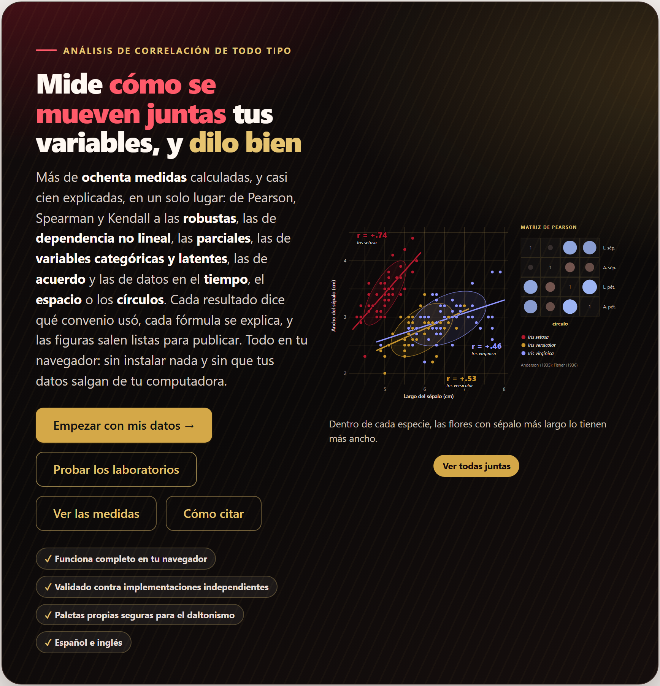
Figura 1.1. La portada con Ver por especie pulsado: una recta y una elipse por especie, cada una con su r. A la derecha, la matriz de Pearson de las cuatro medidas de la flor, dibujada con el glifo elegido. El botón cambia a Ver todas juntas para volver.
Los cuatro botones de la izquierda llevan a lo que sigue: Empezar con mis datos abre el Bloque 2; Probar los laboratorios, Ver las medidas y Cómo citar bajan a sus secciones de esta misma página.
1.2La ruta de un buen análisis
Debajo de la portada, Cómo funciona resume en siete pasos el orden en que la app recorre un análisis: cargar los datos y sus tipos, explorar la nube y los supuestos, elegir el coeficiente adecuado, medir con prueba e intervalo, controlar terceras variables y la estructura, comparar grupos, matrices o estudios y publicar la figura, la tabla y el informe. Más abajo, Los trece bloques pone una tarjeta por bloque con lo que hace; un clic en la tarjeta lo abre.
1.3Seis laboratorios que calculan de verdad
Ninguno es una animación grabada: cada movimiento recalcula, con el mismo motor que la app usa con tus datos, cada coeficiente y su valor p. Se eligen con las pestañas de arriba.
Arrastra los puntos
Una nube de 30 puntos que se puede tocar: arrastra un punto, haz clic en un lugar vacío para agregar uno y doble clic sobre uno para quitarlo. A la derecha, doce coeficientes en cuatro familias —lineal, de rangos, robustas y de dependencia general— se mueven a la vez. Los botones de arriba ponen nubes de partida: Lineal, Con un atípico, Parábola, Círculo, Escalón, Al azar y Lirios (pétalo).
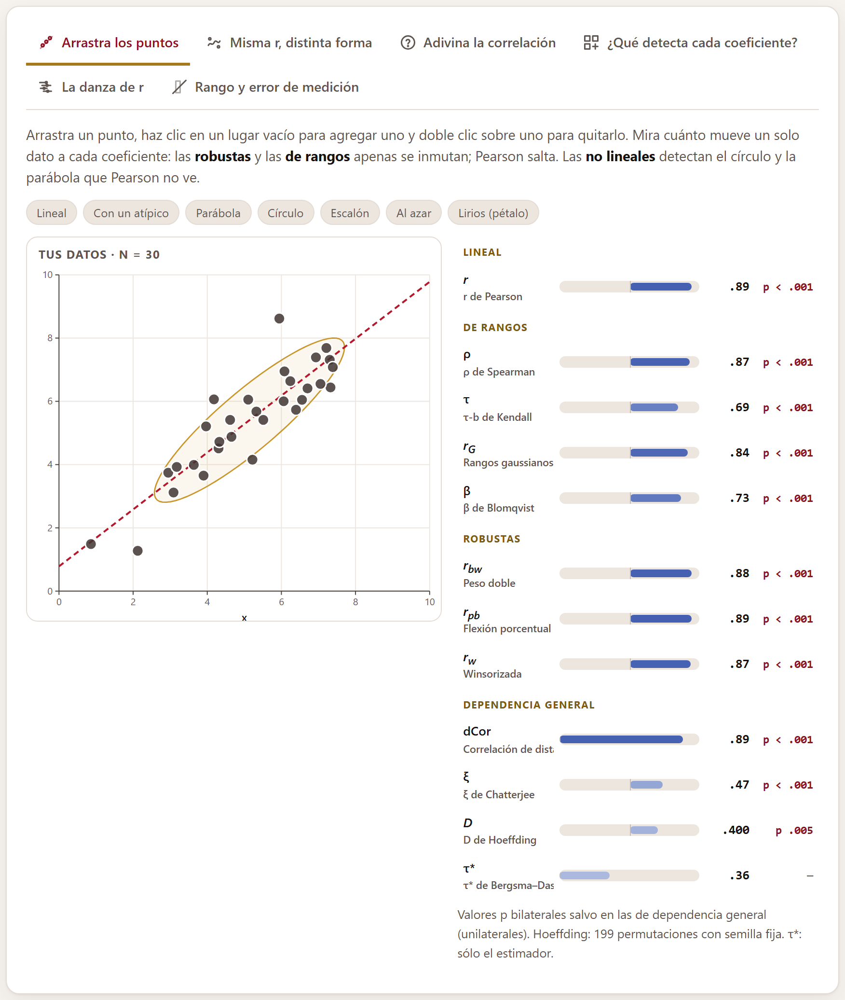
Figura 1.2.Arrastra los puntos con la nube lineal. La elipse contiene al 68 % de una normal bivariada con las medias y covarianzas de la nube; la línea punteada es la recta de mínimos cuadrados. Cada barra va de −1 a 1, y la cifra de la derecha es el valor p.
▸Ejemplo · un solo dato
Pulsa Con un atípico: 28 puntos sin relación y uno lejos, arriba a la derecha. Pearson sube a una correlación alta por ese único punto; las de rangos y las robustas apenas se mueven. Arrastra el atípico hacia el centro y mira cómo Pearson se desploma. Es la razón por la que el Bloque 3 revisa la influencia de cada dato antes de recomendar un coeficiente.
Los valores p son bilaterales salvo en las medidas de dependencia general, que sólo pueden ser positivas y se prueban de un lado. La de Hoeffding usa 199 permutaciones con semilla fija, y la τ* de Bergsma y Dassios sólo da el estimador, porque su prueba exacta es demasiado lenta para recalcularse en cada movimiento.
Misma r, distinta forma
Elige una figura —Ajolote, Nopal, Pirámide, Maguey, Estrella, Círculo o Equis— y pulsa Transformar. Los puntos se mueven poco a poco hacia la figura, pero un movimiento sólo se acepta si las dos medias, las dos desviaciones estándar y la r de Pearson siguen iguales a dos decimales. Al final tienes una nube completamente distinta con los mismos cinco números. El método es el recocido simulado de Matejka y Fitzmaurice (2017); las figuras son de esta app.
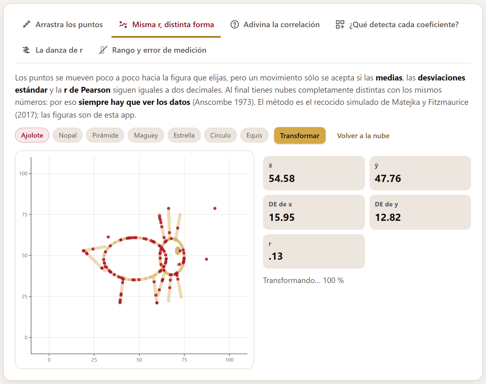
Figura 1.3. La nube convertida en ajolote. Los cinco números de la derecha —x̄ = 54.58, ȳ = 47.76, las dos desviaciones y r = .13— son los mismos que tenía la nube de partida. Volver a la nube la regresa.
Adivina la correlación
¿Qué tan bien lees una nube? Mueve el control hasta la r que creas y pulsa Comprobar; Otra nube pasa a la siguiente de diez rondas. La puntuación no cuenta el error a secas: lo divide entre la diferencia que el ojo alcanza a notar, que es grande cerca de cero y pequeña cerca de ±1 (Rensink y Baldridge, 2010). Equivocarse por .10 alrededor de .70 vale menos que equivocarse por .10 alrededor de cero.
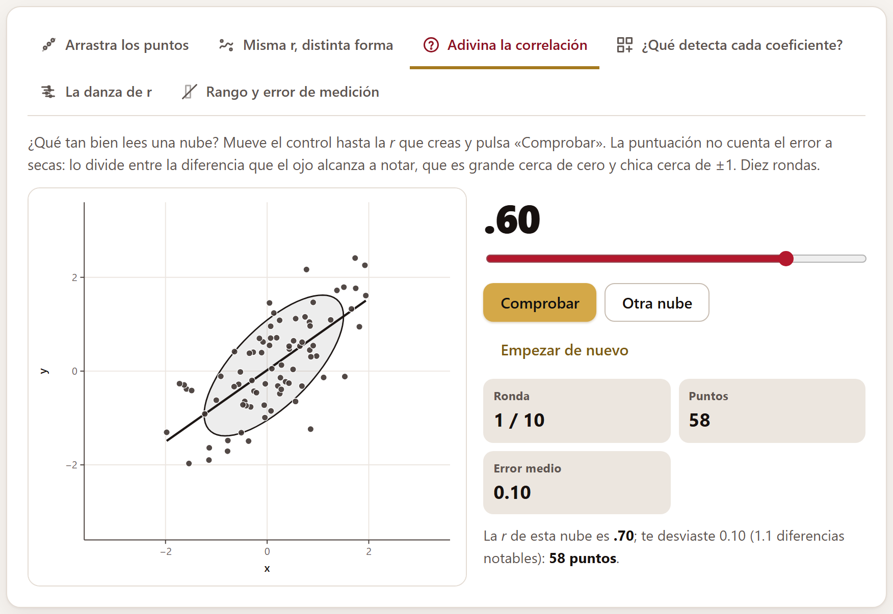
Figura 1.4. Una ronda: se respondió .60 y la nube tenía .70. La desviación de 0.10 equivale a 1.1 diferencias notables y da 58 puntos.
¿Qué detecta cada coeficiente?
Nueve formas de relación contra siete coeficientes, en una tabla coloreada por el valor absoluto, con asterisco donde la prueba es significativa al 5 %. Pearson sólo ve la recta; Spearman y Kendall, lo monótono; la correlación de distancias, la ξ de Chatterjee y la D de Hoeffding ven también la parábola, el seno, el círculo y la equis. El control n cambia el tamaño de las muestras y Otra muestra sortea otras.
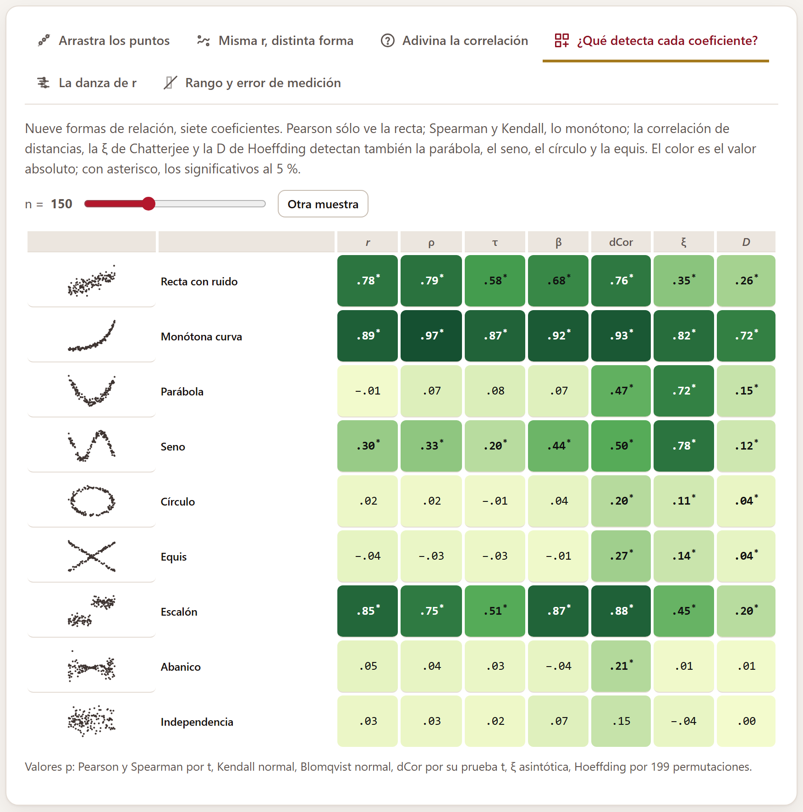
Figura 1.5. Con n = 150, la parábola, el círculo y la equis tienen r cercana a cero, pero dCor y ξ las detectan. En la fila de independencia nadie debería encender, y nadie lo hace.
!Una r de cero no quiere decir «sin relación»
Quiere decir «sin relación lineal». Si la pregunta es si dos variables tienen que ver una con otra de cualquier forma, hace falta una medida de dependencia general. El Bloque 6 las calcula y rastrea toda la matriz buscando lo que Pearson no ve.
La danza de r
Fija una población —su ρ y el tamaño de las muestras— y pulsa Bailar: cada fila es una muestra nueva con su r y su intervalo del 95 %, y al lado se va juntando la distribución de las r, con la curva teórica encima. Con muestras de 20 casos, r «baila» de .1 a .8 aunque ρ sea siempre .50, y a la larga el 95 % de los intervalos contiene a ρ (Cumming, 2008). Borrar empieza otra vez.
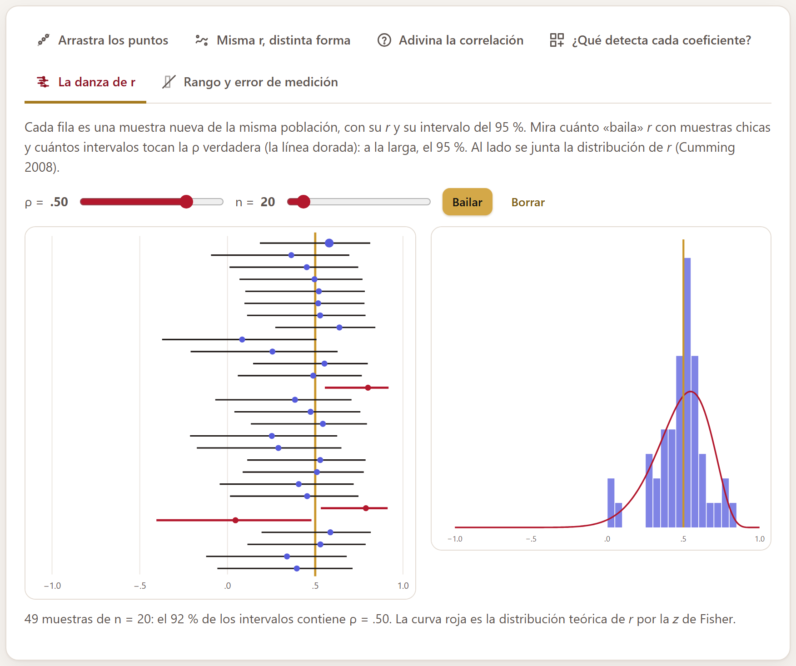
Figura 1.6. Cuarenta y ocho muestras de n = 20 con ρ = .50. Los intervalos en rojo no contienen a ρ (la línea dorada); en esta corrida fueron cuatro, y el 92 % sí la contuvo. La curva roja de la derecha es la distribución teórica de r por la z de Fisher.
Rango y error de medición
Las dos maneras más comunes de que una correlación real salga más chica. La restricción de rango: si sólo se observa una parte de los valores de x —sólo las plantas que sobrevivieron, sólo los alumnos admitidos—, r baja; el control de percentiles elige qué parte se ve. El error de medición: si x y y se miden con ruido, r se «atenúa»; el control de fiabilidad lo regula. Las dos tarjetas de la derecha aplican las correcciones de Thorndike (caso II) y de Spearman, que el Bloque 12 ofrece para tus propios números.
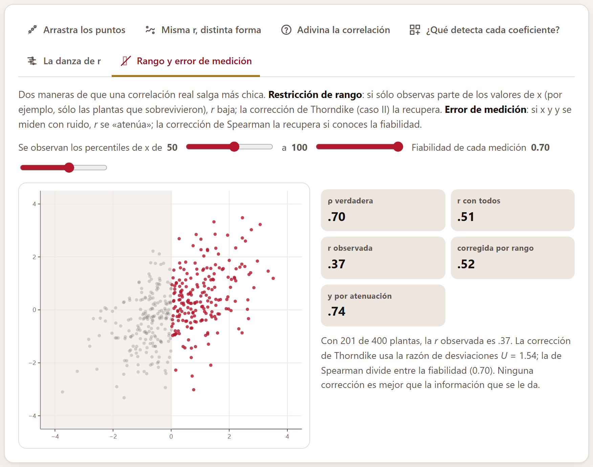
Figura 1.7. Con ρ = .70, observar sólo la mitad de arriba de x y medir con fiabilidad .70 deja la r observada en .37. La corrección por rango la sube a .52 y la de atenuación, después, a .74: cerca de la verdadera, pero no exacta, porque ninguna corrección es mejor que la información que se le da.
1.4Qué medida para qué datos
El tipo de las dos variables decide qué coeficientes tienen sentido. La sección Qué medida para qué datos pone el mapa completo en nueve tarjetas, cada una con el bloque que la calcula:
No hace falta memorizarlo: el asistente del Bloque 2 lo aplica solo a cada par de tus columnas.
1.5Nueve formas de dibujar una correlación
En una matriz de correlación cada celda es un glifo. La app ofrece nueve, y todos llevan el signo también en su forma, no sólo en el color: con una paleta divergente, +r y −r se imprimen con el mismo gris, y un glifo que sólo dependa del color pierde el signo en una fotocopia.
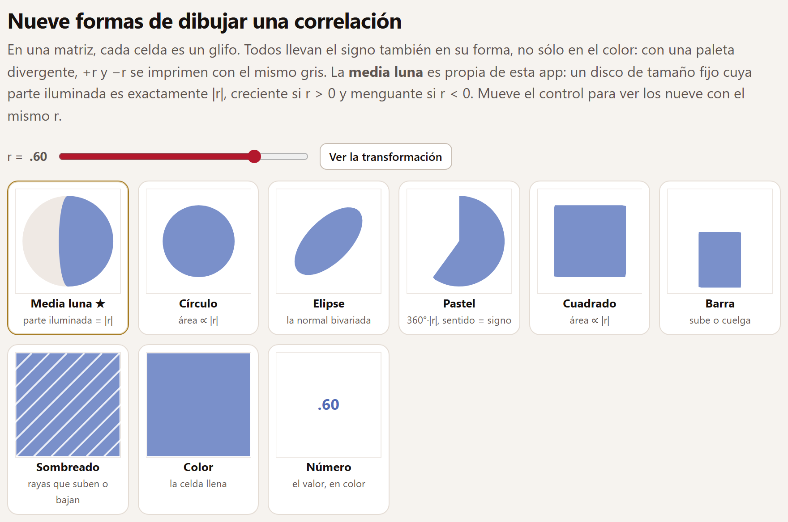
Figura 1.8. Los nueve glifos con r = .60. El control mueve r en los nueve a la vez, y Ver la transformación recorre de −1 a 1 para ver cómo cambia cada uno.
Glifo
Qué codifica
Media luna ★
Propio de esta app: un disco de tamaño fijo cuya parte iluminada es exactamente |r|, creciente si r > 0 y menguante si r < 0. Se lee igual en color, en gris y con daltonismo.
Círculo · Cuadrado
El área es proporcional a |r|; el signo, por el color.
Elipse
La forma de una normal bivariada con esa r: inclinada a la derecha si es positiva, cada vez más delgada al acercarse a ±1 (Murdoch y Chow, 1996).
Pastel
Un sector de 360°·|r|, en el sentido del reloj si es positiva.
Barra
Sube si es positiva y cuelga si es negativa.
Sombreado
Rayas que suben o bajan, con la intensidad de |r| (Friendly, 2002).
Color · Número
La celda llena de color, o el valor escrito en el color de su signo.
1.6Paletas propias, probadas
Diecinueve paletas diseñadas para esta app, con nombres de plantas, lugares y artesanías de México: doce divergentes —diez para fondo claro y dos para fondo oscuro— y siete secuenciales, para lo que va de 0 a 1 (|r|, r², densidades). Todas se construyeron en un espacio de color perceptual, donde pasos iguales de r se ven como pasos iguales de color, y cada una pasa cinco controles, que la tarjeta muestra con una palomita:
cabe: todo su recorrido se puede mostrar en una pantalla común, sin colores recortados;
uniforme: sus pasos tienen el mismo tamaño perceptual;
daltonismo: el signo se distingue con las tres formas de daltonismo, incluso con |r| = .25;
gris: +r y −r tienen el mismo gris, así que en blanco y negro manda el glifo;
contraste: sus extremos contrastan al menos 3 a 1 con el fondo.
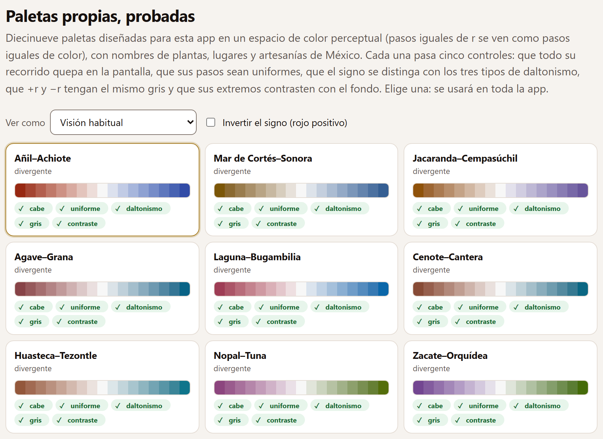
Figura 1.9. Las primeras nueve paletas, con sus cinco controles. La elegida —aquí Añil–Achiote, la de omisión— va enmarcada y se usa en toda la app.
El menú Ver como dibuja todas las paletas como las vería una persona con protanopía, deuteranopía o tritanopía, o en escala de grises, y la casilla Invertir el signo (rojo positivo) intercambia los dos tonos para quien esté acostumbrado al convenio contrario. Debajo de la galería, la matriz de los lirios se redibuja con la paleta elegida. Las paletas de las figuras con grupos —una propia, que conserva la distancia entre colores con las tres formas de daltonismo, y la de Okabe e Ito (2008)— se usan solas donde hacen falta. Si ninguna te sirve, el Bloque 13 tiene un diseñador para hacer la tuya.
1.7Cómo se escriben los números
Los manuales de estilo no se ponen de acuerdo. La sección Cómo se escriben los números ofrece cuatro estilos, y el que elijas se usa en toda la app: en la pantalla, en las tablas y en el informe.
Estilo
Así sale
Regla
Psicología y ciencias sociales (APA 7)
r(48) = .45, IC 95 % [.20, .65], p < .001
Sin cero inicial en lo que no pasa de 1
Biomédico (guías SAMPL)
r(48) = 0.45, IC 95 %: 0.20 a 0.65, P < 0.001
Con cero inicial y P mayúscula
Normativo mexicano (NOM-008)
r(48) = 0.45, IC 95 % [0.20, 0.65], p < 0.001
Cero inicial obligatorio, punto decimal
Normativo con coma decimal
r(48) = 0,45, IC 95 % [0,20; 0,65], p < 0,001
Coma decimal; los límites, separados por punto y coma
El mismo estilo se elige también desde la tabla para publicar del Bloque 13.
1.8El catálogo de medidas
La sección Las medidas y de dónde vienen describe 98 medidas de asociación y herramientas de inferencia, cada una en una ficha. Se buscan por nombre en el campo de arriba, o se filtran por familia: clásicas, robustas, no lineales, parcial y conjuntos, categóricas y latentes, acuerdo, con estructura, datos especiales e inferencia. Bajo el nombre de cada ficha van el autor y el año que la definen, y el bloque donde se calcula.
Figura 1.10. El catálogo: el buscador, los filtros con el número de fichas de cada familia y las primeras fichas. El borde de color dice la familia.
83
Calculadas de las 98
Las otras quince se describen para que el catálogo esté completo —la π de Shepherd, la correlación de medianas, las pruebas de Blum, Kiefer y Rosenblatt o de Heller, Heller y Gorfine, el Mantel parcial, la correlación móvil, entre otras—, pero la app no las calcula, y su ficha dice sólo en el catálogo en lugar del bloque.
Un clic en una ficha la abre. Cada una tiene las mismas partes: qué mide, su fórmula escrita como en un libro, su prueba de hipótesis, su intervalo de confianza, sus trampas y convenios —qué hace con los empates, qué divisor usa, en qué difieren los programas— y sus referencias completas.
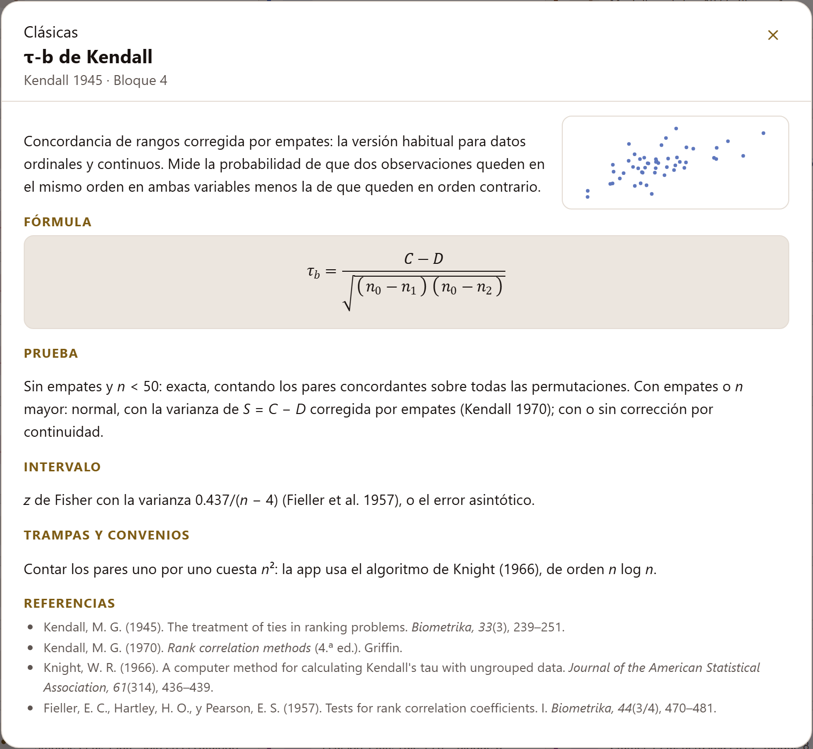
Figura 1.11. La ficha de la τ-b de Kendall: la fórmula corregida por empates, la prueba exacta o normal según el caso, el intervalo con la varianza de Fieller, Hartley y Pearson, el convenio del algoritmo de Knight (1966) y las cuatro referencias.
iEl catálogo también se busca desde cualquier bloque
La búsqueda de la barra (Ctrl+K) encuentra las fichas por su nombre y dice en qué bloque se calcula cada medida, como en la figura I.3.
1.9La teoría, las referencias y la cita
La teoría, en lenguaje llano reúne en doce temas plegables las ideas que sostienen todo lo demás. Cada tema dice en qué bloque se usa y varios traen su propia figura.
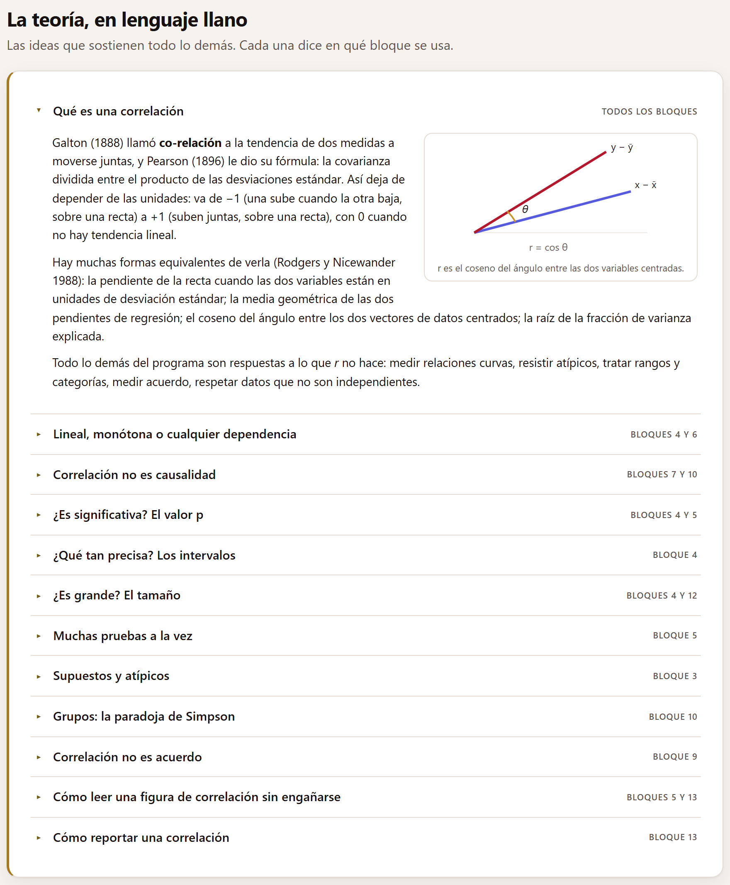
Figura 1.12. La teoría con el primer tema abierto: r como coseno del ángulo entre las dos variables centradas, una de las trece maneras equivalentes de verla (Rodgers y Nicewander, 1988).
Tema
Bloques
Qué es una correlación
todos
Lineal, monótona o cualquier dependencia
4 y 6
Correlación no es causalidad
7 y 10
¿Es significativa? El valor p
4 y 5
¿Qué tan precisa? Los intervalos
4
¿Es grande? El tamaño
4 y 12
Muchas pruebas a la vez
5
Supuestos y atípicos
3
Grupos: la paradoja de Simpson
10
Correlación no es acuerdo
9
Cómo leer una figura de correlación sin engañarse
5 y 13
Cómo reportar una correlación
13
Al final de la página, Referencias lista las 229 obras que la app cita, filtrables por tema con los botones de arriba (Ver todas las referencias despliega la lista completa), y Cómo citar da la cita del programa en formato APA y en BibTeX, cada una con su botón para copiarla.
✓Antes de abrir tus datos
Si vas a publicar las figuras…
elige aquí la paleta y el glifo, una sola vez: toda la app los usará.
Si la revista pide un estilo de números…
elígelo aquí; la pantalla, las tablas y el informe lo seguirán.
Si no sabes qué coeficiente usar…
no lo decidas todavía: los Bloques 2 y 3 lo recomiendan a partir de tus datos.
2
Capítulo dos · Bloque 2
Los datos y sus tipos
Todo empieza aquí, y casi todos los errores también. Este bloque abre tus datos, deduce de qué tipo es cada columna y para qué sirve, cuenta los faltantes y decide cómo tratarlos, crea columnas transformadas y, para cada par de variables, propone qué correlación usar y por qué. Lo que se decide aquí lo usan los doce bloques siguientes.
2.1Abrir los datos
2.2Los conjuntos de dominio público
2.3Tus datos de un vistazo
2.4El tipo y el papel de cada columna
2.5Los datos faltantes
2.6Transformar una columna
2.7¿Qué correlación uso?
2.8Guardar
2.1Abrir los datos
Una fila por observación y una columna por variable, con los nombres en la primera fila. Es la forma «larga» de cualquier hoja de cálculo bien hecha, y la única que el bloque necesita.
Hay tres maneras de entrar. Un archivo acepta texto delimitado (.csv, .tsv, .txt, .dat) y libros de hoja de cálculo (.xlsx, .xlsm, .ods); se arrastra sobre el recuadro o se elige con un clic. Pegar abre un cuadro donde pegar las celdas copiadas de una hoja de cálculo; Leer lo pegado las convierte en tabla. Un conjunto de ejemplo lleva a los nueve conjuntos de la sección siguiente.
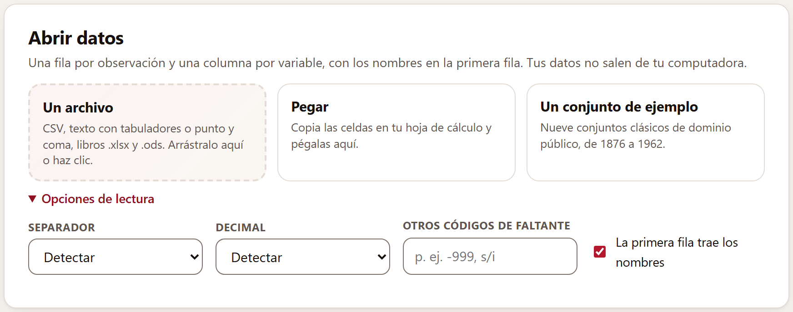
Figura 2.1. Las tres entradas y, desplegadas, las Opciones de lectura. Lo normal es dejar todo en Detectar: la app adivina el separador, el decimal y la codificación, y dice qué eligió.
Las opciones de lectura sólo hacen falta cuando la detección se equivoca. Separador obliga a coma, punto y coma, tabulador o barra; Decimal, a punto (1.5) o a coma (1,5); Otros códigos de faltante agrega los tuyos, separados por comas (por ejemplo -999, s/i); y la casilla La primera fila trae los nombres se desmarca si tus datos no tienen encabezado. Si un libro tiene varias hojas con datos, la app pregunta cuál abrir.
iLo que la app reconoce sola como «sin dato»
Además de la celda vacía, 28 maneras de escribirlo que se ven en hojas reales, sin importar mayúsculas: NA, N/A, NaN, null, ., -, ?, nd, n/d, s/d, sin dato, no disponible, faltante, missing y los errores de hoja de cálculo como #N/A, #VALOR! o #DIV/0!, entre otras.
2.2Los conjuntos de dominio público
Nueve conjuntos reales, publicados hace mucho o por gobiernos, cada uno con su fuente, su licencia y para qué sirve (la tabla de la sección I.7 los resume). Usar este conjunto lo abre como si fueran tus datos, con el tipo y el papel de cada columna ya declarados.
Figura 2.2. Seis de los nueve conjuntos. Cada tarjeta dice cuántas filas y columnas tiene, por qué es de dominio público y de qué artículo viene.
2.3Tus datos de un vistazo
Al abrir unos datos, un mensaje dice qué se leyó —«Leído “datos pegados”: 12 filas y 4 columnas, separadas por tabulador, con punto decimal»— y la tarjeta Tus datos muestra cinco cifras y la tabla.
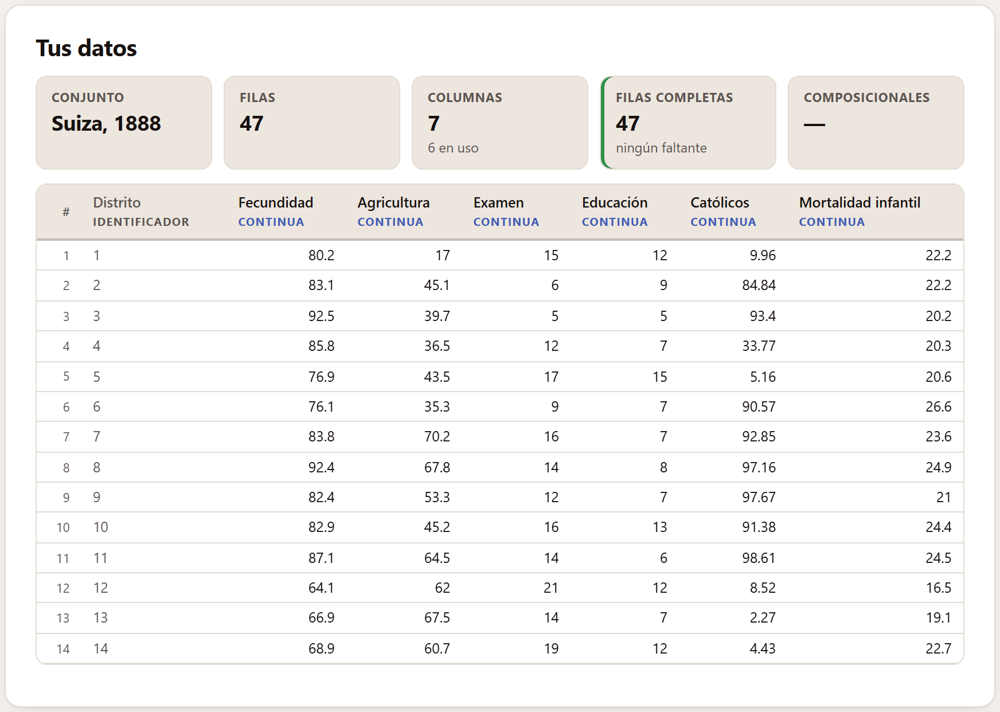
Figura 2.3. Suiza, 1888: 47 filas, 7 columnas de las que 6 se usan (el distrito es un identificador), todas completas. Bajo el nombre de cada columna va su tipo.
Composicionales avisa cuando la app encuentra tres o más columnas seguidas que suman lo mismo en cada fila —porcentajes de una dieta, fracciones de arena, limo y arcilla—: son partes de un todo, y su correlación de Pearson es engañosa por construcción (capítulo 10). La tabla muestra las primeras filas; si hay más, una nota lo dice.
2.4El tipo y el papel de cada columna
Es la tarjeta más importante del bloque. El tipo decide qué coeficientes tienen sentido; el papel, cómo se usa la columna. La app deduce los dos de los valores y del nombre de la columna, y en la última columna de la tabla explica por qué. Si no es así, se cambian con los menús; Volver a lo deducido deshace los cambios.
Tabla 2.1. Los nueve tipos y cuándo los deduce la app
Tipo
Lo deduce cuando…
continua
son números con muchos valores distintos. Si hay muchos repetidos lo dice, porque los empates importan para Spearman y Kendall.
ordinal
son enteros con siete valores o menos y un recorrido corto (una escala de 1 a 5), o textos que forman una escala conocida (bajo < medio < alto, nunca < a veces < siempre…), que se ordenan solos.
binaria
sólo hay dos valores, números o textos.
nominal
son textos que se repiten, sin orden. Con doce categorías o menos queda con papel de grupo.
circular
el nombre dice ángulo, dirección, hora, mes o día del año y los valores caben en su recorrido (0 a 360, 0 a 24, 1 a 12, 1 a 366): el final está junto al principio.
fecha
todos los valores son fechas; se guardan como días desde 1970 y la columna queda con papel de tiempo.
identificador
el nombre parece una clave (id, folio, código, sujeto, paciente…) o hay un texto distinto en cada fila. Si sus valores se repiten, cada valor es un sujeto medido varias veces.
texto
hay demasiados textos distintos para ser categorías.
vacía
no hay ningún dato.
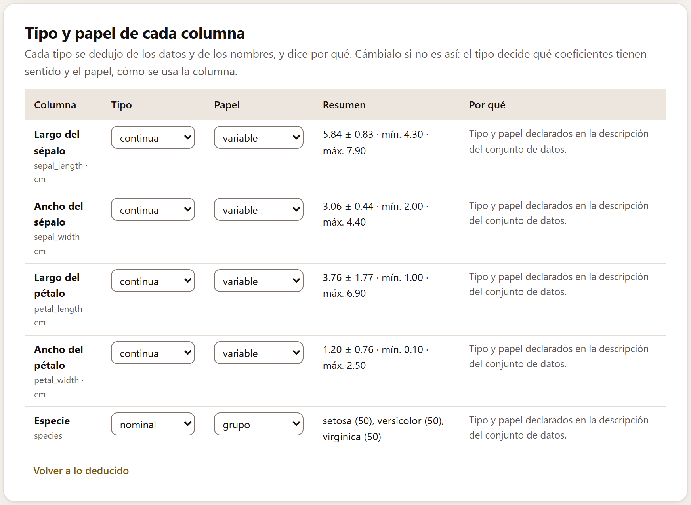
Figura 2.4. Los lirios: cuatro columnas continuas con papel de variable y la especie, nominal, con papel de grupo. El resumen da media ± desviación, mínimo y máximo, o las categorías con su frecuencia.
Tabla 2.2. Los ocho papeles
Papel
Para qué sirve
variable
se analiza: entra en las matrices, los pares y las redes
grupo
separa los casos: las correlaciones dentro y entre grupos, las matrices por grupo, los colores de las figuras
sujeto
identifica a quien se midió varias veces: la correlación de medidas repetidas
tiempo
ordena las filas: las series de tiempo y su correlación cruzada
coordenada X · Y
la posición en el espacio: la prueba de Dutilleul y el correlograma (la app las reconoce por nombres como longitud, latitud, este, norte)
peso
un peso muestral o una frecuencia por fila. En esta versión ningún bloque pondera los casos: la columna se conserva pero no se analiza
no se usa
se conserva pero ningún bloque la toca
!Una escala de 1 a 5 no es continua
Si tu columna de satisfacción o de daño quedó como continua porque tiene muchos valores, pero en realidad es una escala de categorías ordenadas, cámbiala a ordinal: el Bloque 8 calculará la policórica, que es lo correcto para una variable latente medida en categorías, y el Bloque 3 dejará de recomendarte Pearson.
Las columnas circulares tienen además una unidad: grados (0 a 360), radianes, horas (0 a 24), día del año o mes. La app la deduce del nombre y la usa para convertir a ángulos en el Bloque 10.
2.5Los datos faltantes
Cuántas celdas faltan, cuántas filas están completas y cuántos patrones distintos hay: qué combinaciones de columnas faltan juntas. Un patrón dominante —siempre falta la misma columna— es menos grave que muchos patrones dispersos.
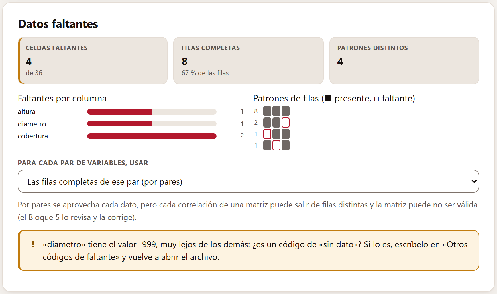
Figura 2.5. Unos datos pegados donde el «sin dato» se escribió de tres maneras (n/d, NA y la celda vacía): la app los reconoció todos. El -999, en cambio, no se toma como faltante sin preguntar: se avisa, porque podría ser un valor real.
El menú Para cada par de variables, usar decide qué hacer con lo que falta, y vale para todos los bloques:
Opción
Ventaja
Costo
Por pares (la de omisión): las filas completas de ese par
Aprovecha cada dato
Cada correlación de una matriz puede salir de filas distintas, y la matriz puede no ser válida; el Bloque 5 lo revisa y la corrige
Por listas: sólo las filas completas en todas
Todas las correlaciones salen de los mismos casos; la matriz siempre es válida
Se pierden las filas con un solo faltante
✕Error frecuente · un código de faltante tomado como dato
Un -999 o un 99 que quedaron como números cambian cualquier correlación: un solo -999 en una columna de diámetros hace que Pearson diga lo que quiere ese punto. Cuando la app vea un valor así, lejísimos de los demás, escríbelo en Otros códigos de faltante y vuelve a abrir el archivo.
2.6Transformar una columna
Cada transformación crea una columna nueva y deja la original como estaba; la lista de abajo dice de dónde salió cada una, y Quitar la elimina.
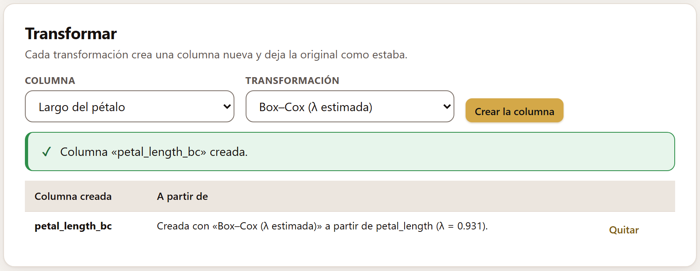
Figura 2.6. La transformación de Box y Cox del largo del pétalo, con λ estimada por máxima verosimilitud (λ = 0.931).
Transformación
Para qué
Rangos (promedio en empates)
Trabajar con el orden; Pearson de los rangos es Spearman
Estandarizar (z) · Centrar en la media
Poner las variables en la misma escala; no cambian ninguna correlación
Logaritmo natural · base 10 · log(x + 1)
Relaciones multiplicativas y colas largas a la derecha; la última admite ceros
Raíz cuadrada · Inverso 1/x
Conteos y tasas
Box–Cox (λ estimada)
La potencia que más acerca la variable a la normal (Box y Cox, 1964)
Puntuaciones normales
Los rangos llevados a cuantiles de la normal: la base de la correlación de rangos gaussiana
Invertir la escala
Que «más» signifique lo mismo en dos escalas
Log-cociente centrado
Las partes de un todo (datos composicionales), antes de correlacionarlas
El menú sólo ofrece las transformaciones que tienen sentido para la columna elegida: el logaritmo, por ejemplo, no aparece si hay ceros o negativos.
2.7¿Qué correlación uso?
Elige dos columnas en X y Y. El asistente mira su tipo y, si las dos son continuas, la forma de su nube: los atípicos (más allá de 3.5 en una escala robusta), la curvatura (la prueba de un término cuadrático), la proporción de empates, la r, la ρ y la correlación de distancias. Con eso propone las medidas en orden, la primera como Recomendada y las demás como También, cada una con su razón, el bloque donde se calcula y un enlace ¿Qué es? a su ficha del catálogo.
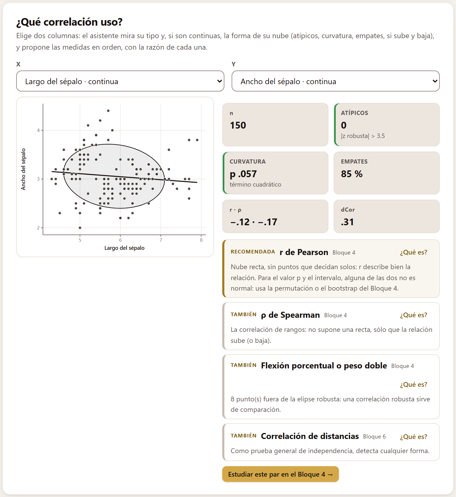
Figura 2.7. El largo y el ancho del sépalo de los lirios: nube recta, sin atípicos, curvatura no significativa (p = .057) y 85 % de empates. Recomienda Pearson, y sugiere comprobar el valor p por permutación porque alguna de las dos no es normal.
Con variables que no son continuas la propuesta cambia por completo. Para dos binarias, como el sexo y la supervivencia del Titanic, recomienda φ, y como alternativas la razón de momios con la Q de Yule, que no dependen de las marginales, y la tetracórica, si cada binaria es el corte de una variable continua latente. Para una continua y una categórica, la biserial puntual, la rango-biserial o η; para dos ordinales, Spearman, τ-b o la policórica; para ángulos, las circulares; si una columna es un sujeto, la correlación de medidas repetidas.
▸Ejemplo · cuando la recomendación es «con cautela»
Si la nube tiene atípicos, el asistente pone primero la flexión porcentual o el peso doble y deja Pearson como «r de Pearson (con cautela)». Si hay curvatura, propone Spearman y la correlación de distancias. No elige por ti: te dice qué mirar, y el Bloque 3 lo revisa para todos los pares a la vez.
Cuando la recomendación se calcula en el Bloque 4, el botón Estudiar este par en el Bloque 4 lleva el par allá.
2.8Guardar
Descargar CSV guarda la tabla tal como está ahora, con las columnas transformadas, en texto delimitado por comas que cualquier hoja de cálculo abre. Para guardar además los tipos, los papeles, el manejo de faltantes y las preferencias, y retomar el análisis otro día, está el paquete del proyecto del Bloque 13.
✓Antes de salir del Bloque 2
Si una columna quedó con un tipo que no es…
cámbialo: el tipo decide qué coeficientes ofrecen los demás bloques.
Si la app avisa de un valor muy lejos de los demás…
averigua si es un código de faltante antes de seguir.
Si vas a comparar correlaciones de una misma matriz o a publicar la matriz…
prefiere los faltantes por listas, o revisa la matriz en el Bloque 5.
Si los casos se repiten (sujetos, parcelas, años)…
marca la columna como sujeto o tiempo: el Bloque 10 la necesita.
3
Capítulo tres · Bloque 3
Exploración y supuestos
Un coeficiente resume una nube de puntos en un solo número, y ese número sólo es fiel si la nube es como el coeficiente supone. Este bloque mira antes de medir: la forma de cada variable, la del conjunto y la de cada par; busca los atípicos, la curvatura, el abanico, los puntos que deciden solos y los grupos que invierten una relación, y para cada par dice qué coeficiente lo describe mejor y por qué.
3.1Qué explorar
3.2La matriz de dispersión
3.3La forma de cada variable
3.4Normalidad conjunta y atípicos multivariados
3.5Los supuestos de cada par
3.6El par elegido, de cerca
3.7Del Bloque 3 a los demás
3.1Qué explorar
El bloque trabaja con las columnas numéricas —continuas y ordinales— que tienen papel de variable en el Bloque 2. No hay que pulsar nada para calcular: cada cambio vuelve a hacer todas las cuentas.
Las variables aparecen como botones. Al abrir unos datos quedan elegidas las ocho primeras; un clic quita o pone una, siempre queda al menos una y caben hasta diez a la vez (para más, la matriz del Bloque 5). Las ordinales llevan la marca ord., porque cambian la recomendación de sus pares.
Colorear por grupo ofrece las columnas nominales o binarias con dos a ocho categorías; si alguna tiene papel de grupo, queda elegida sola. El grupo colorea los puntos de todas las nubes, añade la r dentro de cada grupo y activa la búsqueda de la paradoja de Simpson. Línea en cada nube decide qué se dibuja en las nubes de la matriz: el Suavizado LOWESS (la opción de omisión), la Recta de mínimos cuadrados o Ninguna.
Figura 3.1. Los lirios: las cuatro medidas elegidas, la especie como grupo (con sus tres categorías entre paréntesis) y el suavizado LOWESS en las nubes.
iCon muchos datos
Las cuentas usan siempre todas las filas. Para que la página siga ágil, las nubes de la matriz dibujan a lo más 1 500 puntos elegidos al azar, y una nota lo dice debajo. Con más de 400 filas o más de seis variables aparece una espera mientras se calcula.
3.2La matriz de dispersión
Cada par de variables tiene dos celdas. Abajo de la diagonal va su nube, con la variable de la fila en el eje vertical y la de la columna en el horizontal, y la línea elegida. En la diagonal, el histograma de cada variable. Arriba, la r de Pearson con sus estrellas (* p < .05, ** p < .01, *** p < .001) y, debajo, la ρ de Spearman; el color de la r sigue la paleta elegida en el Bloque 1 y su tamaño crece con |r|, de modo que las correlaciones fuertes saltan a la vista. Con un grupo, al pie de cada celda de arriba van, en el color de cada grupo, las r dentro de los grupos.
Un clic en una celda de arriba o de abajo lleva ese par a la sección El par elegido (sección 3.6) y lo enmarca en rojo en sus dos celdas; un clic en la diagonal lleva esa variable a Cada variable.
Figura 3.2. La matriz de los lirios por especie. Entre el largo y el ancho del sépalo (celdas enmarcadas), r = −.12, sin estrellas; dentro de cada especie, .74, .53 y .46. Juntar las tres especies invierte el signo: es la paradoja de Simpson, a simple vista.
▸Ejemplo · lo que la matriz enseña de los lirios
El histograma del largo del pétalo tiene un hueco: las setosas, de pétalos cortos, quedan aparte de las otras dos especies. Juntando todo, el largo y el ancho del pétalo dan r = .96; dentro de cada especie, .33, .79 y .32. Casi toda esa correlación tan alta viene de que las especies difieren en tamaño, no de que dentro de una especie las flores de pétalos largos los tengan también anchos.
3.3La forma de cada variable
La tabla Cada variable da, para cada una, el número de datos, la media, la desviación estándar (DE), la asimetría g1 y la curtosis en exceso g2, la prueba de Shapiro–Wilk (W y su valor p), la de Anderson–Darling (A² y su valor p), una gráfica Q–Q en miniatura y una Lectura en palabras. Los valores p van en rojo por debajo de .01, en ámbar entre .01 y .05 y en verde desde .05; g1 va en ámbar si pasa de 1 en valor absoluto, y g2 si pasa de 2.
Un clic en una fila (o Intro sobre ella) dibuja debajo el histograma de esa variable con la curva normal de su misma media y DE, y su gráfica Q–Q normal: si los datos fueran normales, los puntos seguirían la diagonal punteada.
Figura 3.3. Las cuatro medidas de los lirios. El largo del sépalo da W = 0.976 y p = .010, en ámbar: «no normal», aunque su Q–Q sólo se aparta en los extremos. El ancho del sépalo «parece normal» (p = .101) aunque Anderson–Darling dé .020: la lectura sigue a Shapiro–Wilk. Los dos pétalos, con p < .001, tienen una Q–Q escalonada: las setosas, aparte.
La tabla 3.1 dice cuándo aparece cada lectura. Las que no son normales van en rojo si p < .01 y en ámbar si p está entre .01 y .05.
Tabla 3.1. La lectura de cada variable
Lectura
Cuándo aparece
parece normal
el valor p de Shapiro–Wilk es de .05 o más
se aparta poco (n grande)
p < .05, pero con más de 300 datos, |g1| ≤ 1 y |g2| ≤ 2: la prueba detecta una desviación que no importa
sesgada a la derecha · a la izquierda
p < .05 y g1 > 1 · g1 < −1
colas pesadas · colas ligeras
p < .05, |g1| ≤ 1 y g2 > 2 · g2 < −2
no normal
p < .05 sin una asimetría o una curtosis grande que lo explique (por ejemplo, una mezcla de grupos)
!La r de Pearson no pide normalidad para describir
Como resumen de cuánto se alinea una nube, r no supone nada. Lo que pide normalidad —la de las dos variables juntas— es su prueba clásica y su intervalo de Fisher. Y con muestras grandes las pruebas de normalidad rechazan desviaciones sin importancia práctica: manda la gráfica Q–Q. Si dudas, el Bloque 4 da el valor p por permutación y el intervalo por bootstrap, que no dependen de la normalidad.
θTeoría en breve · las pruebas de normalidad
Shapiro–Wilk (1965) compara los datos ordenados con lo que se esperaría de una normal; W cerca de 1 es normal. Su valor p sigue la aproximación de Royston (1995), válida de 3 a 5 000 datos; fuera de ese recorrido la tabla pone «—». Anderson–Darling mide la distancia entre la distribución acumulada de los datos y la normal ajustada, con más peso en las colas; su valor p es el de Stephens (D’Agostino y Stephens 1986) y necesita al menos 8 datos. La asimetríag1 y la curtosis en exceso g2 dicen en qué se aparta: |g1| > 1 o |g2| > 2 ya importan para la prueba de r.
3.4Normalidad conjunta y atípicos multivariados
Que cada variable sea normal no basta: la normal multivariada pide además que todas sus combinaciones lo sean. Esta tarjeta usa las filas completas en todas las variables elegidas (hacen falta al menos dos variables y cuatro filas completas más que variables) y muestra cinco cifras:
Filas completas, con el número de variables.
Asimetría de Mardia, con su χ² y sus p(p+1)(p+2)/6 grados de libertad (con menos de 20 filas, corregida).
Curtosis de Mardia, con su z.
Henze–Zirkler, una prueba de conjunto que detecta cualquier alejamiento de la normal.
Atípicos robustos: las filas que pasan el corte con la distancia robusta, y cuántas con la clásica.
Mardia y Henze–Zirkler se calculan hasta con 2 500 filas. El borde de color de cada cifra sigue la escala de los valores p de la tabla anterior: rojo, ámbar o verde.
La gráfica compara las distancias de Mahalanobis al cuadrado de cada fila —la clásica en gris, la robusta en rojo— con los cuantiles de χ² con tantos grados de libertad como variables; en una normal, los puntos siguen la diagonal. La línea punteada horizontal es el corte χ²(0.975). A su lado, la tabla Filas más alejadas da las ocho filas que más pasan el corte robusto, con sus dos distancias, y cuántas más hay. Las filas en gris y cursiva son las que la distancia clásica no ve: el enmascaramiento.
Figura 3.4. Las cuatro medidas de los lirios juntas. La asimetría de Mardia (67.43 con 20 grados de libertad) y Henze–Zirkler (2.336) dan p < .001: el conjunto no es normal, aunque la curtosis sí lo parezca (p = .818). Pasan el corte (11.14) 21 filas con la distancia robusta y sólo 6 con la clásica; las filas 146 y 145 sólo las ve la robusta.
θTeoría en breve · clásica frente a robusta
La distancia clásica usa la media y la covarianza de todos los datos, y los atípicos las inflan hasta esconderse: es el efecto de enmascaramiento. La robusta usa el estimador ortogonalizado de Gnanadesikan y Kettenring (Maronna y Zamar 2002) con escalas τ y un repesado que deja fuera lo que pasa del corte, de modo que los atípicos quedan lejos. Mardia (1970) prueba la asimetría y la curtosis multivariadas; Henze y Zirkler (1990) comparan la función característica de los datos con la de la normal, y su prueba es consistente contra cualquier alternativa.
!Un atípico no es un error
Antes de quitar una fila, mírala: puede ser un error de captura, un código de faltante o una observación real y valiosa. Y cuando se mezclan grupos distintos, como las tres especies de lirios, los «atípicos» pueden ser simplemente un grupo lejos de los demás; en ese caso, lo que corresponde es analizar dentro de los grupos.
3.5Los supuestos de cada par
La tabla Cada par revisa todos los pares a la vez, cada uno con sus filas completas en las dos variables (por eso su n puede variar). Para cada par da n, r y ρ, y cuatro diagnósticos:
Curva: el valor p de añadir un término cuadrático a la recta.
Abanico: el de la prueba de Breusch y Pagan en su forma estudentizada (Koenker 1981), que mira si la dispersión cambia a lo largo de la recta.
Fuera: cuántos puntos quedan fuera de la elipse robusta del 97.5 %.
Mayor |Δr|: lo más que cambia r al quitar un solo punto.
Con ellos, la tabla da las Señales de la tabla 3.2 y una Recomendada: el coeficiente que mejor describe el par. Un clic en una fila lleva el par a la sección siguiente. Un par con menos de cinco filas completas dice «muy pocos pares completos».
Figura 3.5. Los seis pares de los lirios con la especie como grupo. Cinco piden analizar Por grupos: en tres la relación cambia de signo dentro de las especies (Simpson) y en dos juntar las especies la infla. Sólo el largo del sépalo con el largo del pétalo, que se curva, recibe la ρ de Spearman.
Tabla 3.2. Las señales de cada par
Señal
Aparece cuando…
curva
el término cuadrático da p < .01
abanico
Breusch–Pagan da p < .01
no normal
Shapiro–Wilk da p < .05 en al menos una de las dos variables
punto influyente
el mayor |Δr| pasa el límite de la sección 3.6 y hay al menos un punto fuera de la elipse robusta
pocos valores
una de las dos toma diez valores distintos o menos
no monótona
la correlación de distancias pasa a |ρ| en más de 0.25: la nube sube y baja (se calcula hasta con 2 000 pares)
Simpson
con un grupo: en al menos la mitad de los grupos con cinco casos o más, r tiene el signo contrario y |r| ≥ .3
grupos
con un grupo y sin Simpson: la r media dentro de los grupos difiere en 0.3 o más de la r juntando todo
La recomendación sigue un orden fijo: gana la primera regla que se cumple. Las razones del orden son de sentido común: si los grupos cambian la relación, ningún coeficiente calculado juntando todo la describe; si la nube sube y baja, ningún coeficiente monótono la ve; y sólo cuando la nube es recta tiene sentido preguntar por los puntos que deciden solos.
Tabla 3.3. Cómo se elige el coeficiente recomendado
#
Si…
recomienda
1
hay Simpson o efecto de los grupos
Por grupos: analizar dentro de los grupos (Bloque 10)
2
la relación no es monótona
dCor o ξ: la correlación de distancias o la ξ de Chatterjee (Bloque 6)
3
al menos una de las dos es ordinal
ρ de Spearman, o τ-b de Kendall si hay diez valores distintos o menos
4
hay curva, o r y ρ difieren en 0.1 o más
ρ de Spearman (o τ-b, con pocos valores)
5
hay un punto influyente
Flexión porcentual, una correlación robusta (Bloque 4)
6
nada de lo anterior
r de Pearson; si alguna no es normal o hay abanico, con la nota de usar la permutación o el bootstrap del Bloque 4
La etiqueta de la recomendación es verde cuando es la r de Pearson sin notas, ámbar cuando es Pearson con una nota y dorada cuando el par pide otro coeficiente.
▸Ejemplo · quince pares de una economía
Las seis series anuales de la economía de Estados Unidos de 1947 a 1962 (figura 3.6) dan las tres clases de respuesta. Ocho pares reciben la r de Pearson. Tres, la ρ: dos porque se curvan, y el de los desempleados con las fuerzas armadas porque r = −.18 y ρ = −.34 difieren en más de 0.1. Y cuatro de los cinco pares con las fuerzas armadas, que crecen de golpe en 1951 con la guerra de Corea y luego bajan poco a poco, son «no monótona»: dCor o ξ.
Figura 3.6. La economía de Estados Unidos de 1947 a 1962: dieciséis años, seis variables y quince pares, con las tres clases de recomendación.
3.6El par elegido, de cerca
La última tarjeta estudia un par: el que se eligió en la matriz o en la tabla, o el que se pone en X y Y. La orientación importa para la recta, los residuos y la prueba de Breusch–Pagan, que son de Y sobre X; r, ρ y la recomendación son simétricas.
Siete cifras resumen el par: n (y cuántas filas no tienen el par completo), r con su valor p, ρ, la correlación de distancias dCor («cualquier forma»: en la población vale cero sólo si las dos son independientes), la Curvatura con su F, la Dispersión (BP) con su χ² y el Mayor |Δr| con la fila que lo causa y el límite. Debajo, Para este par da la recomendación con su razón y sus notas; si la recomendación es una medida del catálogo, ¿Qué es? abre su ficha.
Figura 3.7. El largo y el ancho del sépalo. Ni curva (p = .057) ni abanico (p = .098), y ningún punto decide (0.033, por debajo del límite 0.081); pero dentro de las especies la r media es .58 frente a −.12 juntando todo, y la recomendación es Por grupos. Los ocho puntos fuera de la elipse robusta llevan su número de fila.
Tres gráficas muestran por qué:
La nube con sus elipses. La recta en negro, el LOWESS en dorado, la elipse clásica del 97.5 % punteada y la robusta en rojo. Los puntos fuera de la robusta van rodeados, y los ocho más alejados llevan su número de fila.
Los residuos de la recta, con su propio LOWESS. Si la línea dorada se curva, la relación se curva; si los puntos se abren hacia un lado, hay abanico.
La influencia. Para cada punto, en el orden de las filas, cuánto cambia r si se quita. Las líneas punteadas marcan el límite, y los cuatro puntos que más mueven a r llevan su fila.
El límite de la influencia es, más o menos, un error estándar de r: un punto que por sí solo mueve r más que eso decide demasiado.
límite = máx ( 0.02 , (1 − r²) / √(n − 1) )
Figura 3.8. La influencia en el mismo par. El punto que más mueve a r, la fila 132, la cambia en 0.033, menos de la mitad del límite: ninguna flor decide sola.
Medir este par a fondo en el Bloque 4 → lleva el par al bloque de las medidas de un par, con todos sus coeficientes, intervalos, permutaciones y bootstrap. Allá el coeficiente que se estudia a fondo es, mientras no elijas otro, el recomendado aquí; con Por grupos es la r de Pearson, porque el análisis dentro de los grupos es del Bloque 10.
▸Ejemplo · un par que pide Pearson, con una nota
La velocidad y la distancia de frenado de 50 autos (Ezekiel 1930): r = .807 y ρ = .830; ni curva (p = .136) ni abanico (p = .073), y el punto más influyente, la fila 23, mueve r en 0.027, por debajo del límite de 0.050. La recomendación es la r de Pearson, pero la distancia de frenado no es normal, así que la nota pide el valor p por permutación o el intervalo por bootstrap.
Figura 3.9. El frenado de los autos: las tres pruebas en verde y la recomendación r de Pearson, con su nota.
θTeoría en breve · por qué cada supuesto
Linealidad.r mide sólo la parte recta de la relación; si la nube se curva pero sigue subiendo, ρ o τ la miden completa; si sube y baja, ni r ni ρ la ven (Anscombe 1973). Dispersión constante. Cuando la nube se abre en abanico, el error estándar de r que da la fórmula clásica es incorrecto; el valor p por permutación y el intervalo por bootstrap no dependen de ello. Atípicos e influencia. Un solo punto puede crear o borrar una correlación; si r cambia más de un error estándar al quitarlo, ese punto decide demasiado. Grupos. Juntar grupos con medias distintas puede inflar, esconder o invertir la relación (Simpson 1951). La app trae esta misma explicación en la nota plegable Por qué cada supuesto, al pie de la tarjeta.
3.7Del Bloque 3 a los demás
El bloque no calcula nada que se publique: decide qué calcular. Lo que encuentra lo usan el Bloque 4, que abre con el coeficiente recomendado, y los métodos redactados del Bloque 13, que describen las pruebas con que se revisaron los supuestos y citan sus referencias.
✓Antes de salir del Bloque 3
Si la recomendación es Por grupos…
analiza dentro de los grupos en el Bloque 10, y no publiques la r juntando todo sin decirlo.
Si es dCor o ξ…
mira la nube: la relación sube y baja. Mídela en el Bloque 6; r y ρ cerca de cero no significan independencia.
Si es la ρ de Spearman o la τ-b de Kendall…
úsala en el Bloque 4; si de todos modos informas r, di que la relación se curva.
Si es la Flexión porcentual…
busca el punto en la nube y averigua qué es antes de decidir; compara con las robustas del Bloque 4.
Si es la r de Pearson con una nota…
da el valor p por permutación o el intervalo por bootstrap del Bloque 4.
Si las pruebas de normalidad rechazan con muchos datos…
mira la gráfica Q–Q antes de cambiar de coeficiente.
Son guías para interpretar, no leyes: lo que sabes del fenómeno, del diseño y de cómo se midió siempre manda.
4
Capítulo cuatro · Bloque 4
Un par a fondo
Dos variables numéricas, todo lo que se puede decir de su relación: doce coeficientes con su prueba y su intervalo, el bootstrap y la permutación del coeficiente principal, el factor de Bayes de la r de Pearson y una lectura en palabras que termina en la frase lista para el informe.
4.1El par y la pregunta
4.2El resultado, en cifras y en palabras
4.3La nube y sus rangos
4.4Todos los coeficientes, lado a lado
4.5Bootstrap y permutación
4.6El factor de Bayes
4.7Cómo se calculó
4.1El par y la pregunta
El par llega de tres maneras: desde el botón Medir este par a fondo en el Bloque 4 → del Bloque 3, desde el asistente del Bloque 2, o eligiéndolo aquí en X y Y. Los menús ofrecen las columnas continuas y ordinales que no estén marcadas como «no se usa».
La primera tarjeta reúne las ocho decisiones del análisis. Cada cambio vuelve a calcular todo; si la cuenta tarda (muchas filas o muchos remuestreos), aparece una espera.
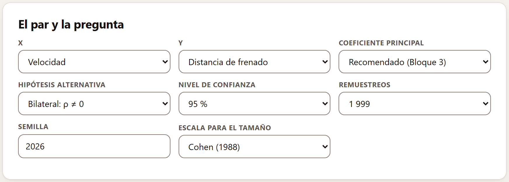
Figura 4.1. El frenado de los autos, el ejemplo con que abre el bloque, con las opciones de omisión.
Coeficiente principal: el que se estudia a fondo. Recomendado (Bloque 3) deja que lo elija la revisión de supuestos de la sección 3.5; también se puede fijar cualquiera de los doce de la sección 4.4.
Hipótesis alternativa: Bilateral: ρ ≠ 0, Positiva: ρ > 0 o Negativa: ρ < 0. Elige una unilateral sólo si la dirección se decidió antes de ver los datos. Las medidas de dependencia no tienen signo, y su prueba es siempre de valores grandes.
Nivel de confianza: 90, 95 o 99 % para todos los intervalos; el complemento (10, 5 o 1 %) es el nivel de significación de la lectura.
Remuestreos: 999, 1 999, 4 999 o 9 999 para el bootstrap y para la permutación. Con un coeficiente costoso y muchos datos la app usa menos y lo avisa.
Semilla: el punto de partida del generador de números aleatorios. Con la misma semilla salen exactamente los mismos números; anótala si vas a publicar resultados de remuestreo.
Escala para el tamaño: las palabras con que la lectura califica la fuerza de la relación (tabla 4.1).
Tabla 4.1. Las tres escalas para el tamaño de una correlación (por |r|)
muy débil < .20 ≤ débil < .40 ≤ moderada < .60 ≤ fuerte < .80 ≤ muy fuerte
Gignac y Szodorai (2016)
muy pequeña < .10 ≤ pequeña < .20 ≤ típica < .30 ≤ grande
iQué escala elegir
Las de Cohen y de Evans son convenciones generales. La de Gignac y Szodorai sale de las correlaciones que de verdad se publican en psicología: allí una r de .30 ya es grande. Lo mejor es comparar con lo que se sabe del fenómeno en tu disciplina, y decir en el informe qué escala usaste.
4.2El resultado, en cifras y en palabras
La tarjeta Resultado resume el análisis en seis cifras: el coeficiente principal con la palabra de su tamaño (y la marca elegido por el Bloque 3 si lo eligió la revisión de supuestos), su intervalo de confianza con el método que lo dio, su prueba propia con el estadístico y los grados de libertad, el valor p por permutación, el intervalo bootstrap y el factor de Bayes BF10. En las pruebas, el borde verde quiere decir significativo al nivel elegido y el ámbar, no; en el factor de Bayes, verde es evidencia a favor de la correlación y ámbar, a favor de ρ = 0.
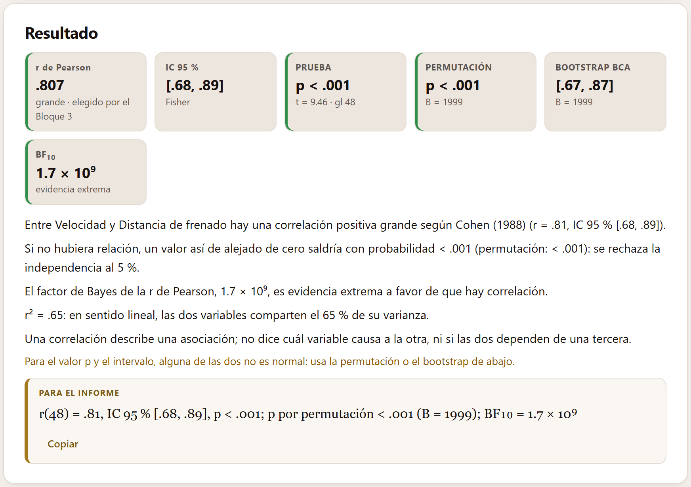
Figura 4.2. El frenado de los autos: r = .807, «grande» según Cohen, con intervalo de Fisher [.68, .89], t = 9.46 con 48 grados de libertad, permutación e intervalo BCa de acuerdo y un factor de Bayes de 1.7 × 109. La línea en ámbar es la nota del Bloque 3.
Debajo, la lectura dice lo mismo en palabras, en cinco párrafos cortos:
La dirección y el tamaño, con el intervalo: «hay una correlación positiva grande según Cohen (1988)». Para una medida de dependencia, que no tiene signo, dice su valor en la escala de 0 (independencia) a 1.
La prueba: con qué probabilidad saldría un valor así si no hubiera relación, con la de la permutación entre paréntesis, y si se rechaza la independencia. Si no se rechaza, lo dice con cuidado: los datos no bastan para descartarla, lo que no prueba que no haya relación.
La evidencia bayesiana de la r de Pearson, en las palabras de la sección 4.6.
La varianza compartida, sólo con Pearson: r² = .65 quiere decir que, en sentido lineal, las dos variables comparten el 65 % de su varianza.
El recordatorio de que una correlación no dice cuál variable causa a la otra, ni si las dos dependen de una tercera.
En ámbar van las notas: las del Bloque 3 para este par y, si elegiste un coeficiente distinto del recomendado, cuál recomienda el Bloque 3 y por qué.
Para el informe da la frase con el estilo de números elegido en el Bloque 1 —«r(48) = .81, IC 95 % [.68, .89], p < .001; p por permutación < .001 (B = 1999); BF10 = 1.7 × 109»— y Copiar la deja en el portapapeles.
▸Ejemplo · cuando el principal es una medida de dependencia
En la economía de 1947 a 1962, el Bloque 3 recomienda la correlación de distancias para las fuerzas armadas con los empleados, porque su nube sube y luego baja (sección 3.5). Aquí, dCor = .76 con intervalo BCa [.68, .86] y p < .001 por las dos vías. El factor de Bayes, que siempre es de la r de Pearson, sólo da 1.70: evidencia anecdótica. Las dos cifras no se contradicen: la relación es fuerte, pero no es una recta.
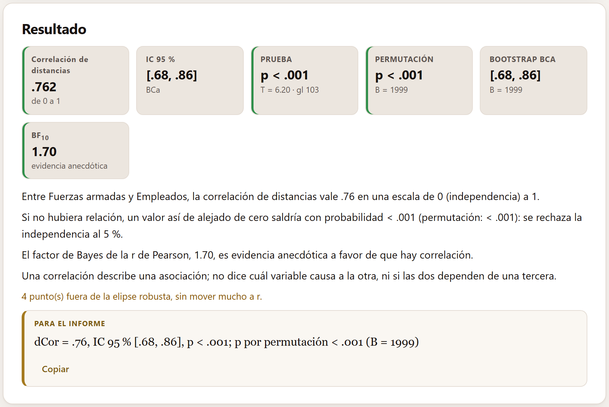
Figura 4.3. La correlación de distancias como coeficiente principal. Para una medida sin signo, la lectura da su valor en la escala de 0 a 1 en lugar de una dirección y un tamaño.
4.3La nube y sus rangos
Dos gráficas del mismo par. A la izquierda, los datos con la elipse del 95 %, la recta en negro, el LOWESS en dorado y, sobre los ejes, una marca por cada dato. A la derecha, los mismos puntos convertidos en rangos (divididos entre n + 1, para que vayan de 0 a 1): es lo que ven la ρ de Spearman y la τ de Kendall. Una relación monótona pero curva se vuelve recta en los rangos; un punto muy alejado en los datos se vuelve uno más en los rangos.
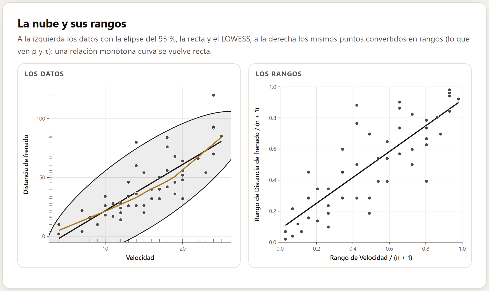
Figura 4.4. El frenado de los autos. En los datos, la distancia crece algo más rápido que la recta en las velocidades altas (el LOWESS se curva hacia arriba) y se dispersa más; en los rangos la curva desaparece y la nube queda recta.
4.4Todos los coeficientes, lado a lado
La tabla calcula los doce coeficientes que se aplican a dos variables numéricas, cada uno con su prueba propia —exacta, asintótica o por permutación— y su intervalo: el analítico donde existe y, donde no, uno bootstrap percentil con 499 remuestreos. El principal lleva la etiqueta principal; Hacer principal cambia el principal sin volver al menú, y ? abre la ficha del catálogo. Los valores p significativos van en verde.
!No elijas el coeficiente después de ver la tabla
Con doce coeficientes a la vista es tentador informar el que dio el valor más alto o el p más chico. Eso infla los resultados. Elige el coeficiente por la forma de los datos —es lo que hace el Bloque 3— o antes de verlos, e informa ése; la tabla sirve para ver si la conclusión depende de la elección.
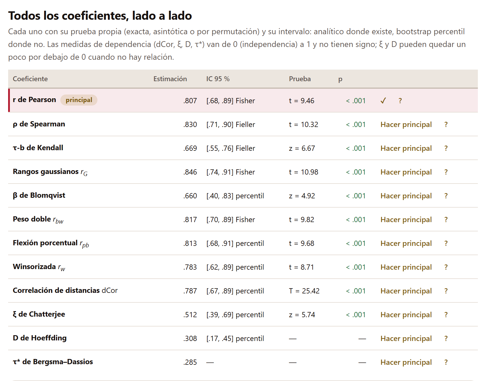
Figura 4.5. Los doce coeficientes del frenado de los autos. Los de rangos y los robustos quedan entre .66 y .85; las medidas de dependencia, en su propia escala. La D de Hoeffding y la τ* no traen prueba en la tabla.
Tabla 4.2. Los doce coeficientes del Bloque 4
Coeficiente
Qué mide
Prueba · intervalo
r de Pearson
la relación lineal
t con n − 2 gl · Fisher
ρ de Spearman
la relación monótona: Pearson sobre los rangos
exacta sin empates, si no t · Fieller
τ-b de Kendall
la concordancia de los pares de observaciones, corregida por empates
exacta sin empates (n < 50), si no z · Fieller
Rangos gaussianosrG
Pearson sobre las puntuaciones normales de los rangos
t · Fisher
β de Blomqvist
la concordancia respecto de las dos medianas
z · percentil
Peso doblerbw
robusta: pesa menos los datos lejos de la mediana
t · Fisher
Flexión porcentualrpb
robusta: acota el 20 % más alejado de cada variable
t · percentil
Winsorizadarw
robusta: Pearson tras llevar el 20 % de cada cola a su límite
t con n − 2g − 2 gl · percentil
Correlación de distancias dCor
cualquier dependencia; 0 sólo con independencia
T con n(n − 3)/2 − 1 gl · percentil
ξ de Chatterjee
cuánto Y es función de X (no es simétrica)
z · percentil
D de Hoeffding
la distancia entre la distribución conjunta y la de independencia (escala 30·D)
— · percentil
τ* de Bergsma–Dassios
cualquier dependencia, con un estadístico sobre todos los grupos de cuatro puntos; sólo hasta n = 80
— · —
Las medidas de dependencia (dCor, ξ, D, τ*) van de 0 a 1 y no tienen signo; ξ y D pueden quedar un poco por debajo de cero cuando no hay relación. La D y la τ* no traen prueba propia en la tabla: hechas principales, la permutación da su valor p. La correlación de distancias se calcula hasta con 3 000 pares.
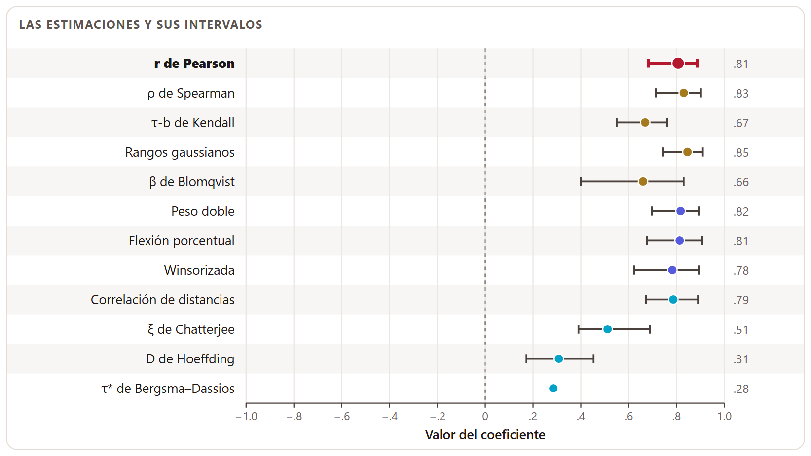
Figura 4.6. Las doce estimaciones con sus intervalos en una sola escala de −1 a 1. El principal va en rojo y más grande; los demás, con el color de su familia: de rangos, robustos y de dependencia.
4.5Bootstrap y permutación
Dos maneras de hacer inferencia sin suponer normalidad, las dos sobre el coeficiente principal. El bootstrap remuestrea los pares con reemplazo y recalcula el coeficiente en cada remuestreo; la dispersión de esas réplicas imita la del coeficiente de una muestra a otra. La permutación baraja Y contra X, lo que rompe cualquier relación y conserva todo lo demás; su valor p es la proporción de barajas que dan un valor tan alejado de cero como el observado.
Seis cifras resumen el bootstrap: su error estándar, su sesgo (con la corrección z0 y la aceleración a del BCa) y cuatro intervalos: percentil, básico, normal y BCa (éste, cuando el coeficiente no es demasiado costoso de recalcular). Las dos gráficas muestran las réplicas: en la del bootstrap, la franja es el intervalo BCa, la línea continua la estimación y las punteadas los límites del percentil; en la de la permutación, la línea continua es el valor observado y la punteada su reflejo, que también cuenta en la prueba bilateral.
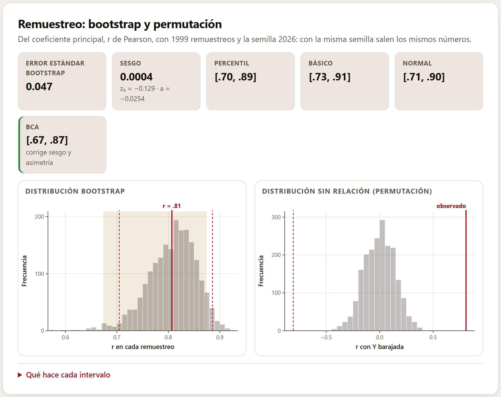
Figura 4.7. El frenado de los autos con 1 999 remuestreos y la semilla 2026. La distribución bootstrap tiene la cola larga hacia la izquierda, y el BCa [.67, .87] se corre en esa dirección respecto del percentil [.70, .89]. Ninguna de las 1 999 barajas se acerca a .81.
θTeoría en breve · qué hace cada intervalo
El intervalo percentil toma los cuantiles de las réplicas; el básico los refleja alrededor de la estimación; el normal usa su error estándar; el BCa (Efron 1987) corrige además el sesgo (z0) y que la dispersión cambie con el valor (la aceleración a, que se estima con la navaja). Con datos normales el intervalo de Fisher cubre lo que promete; con datos muy asimétricos se queda corto, y los bootstrap se acercan más al nivel pedido, sin llegar del todo con muestras chicas (Bishara y Hittner 2017). La permutación (Pitman 1937) da p = (k + 1)/(B + 1), donde k es el número de barajas tan extremas como lo observado: nunca da cero.
iCuántos remuestreos
Con 1 999 el valor p más chico posible es 1/2000 = .0005, y los límites del intervalo se estabilizan en la segunda cifra. Para un intervalo al 99 % o para publicar un valor p cercano a .05, usa 4 999 o 9 999.
4.6El factor de Bayes
El factor de Bayes BF10 dice cuántas veces más probables son los datos si hay correlación que si ρ = 0; su recíproco BF01, lo contrario. A diferencia del valor p, puede dar evidencia a favor de que no hay relación. Se calcula siempre para la r de Pearson, sea cual sea el coeficiente principal.
La distribución a priori de ρ es una beta estirada al intervalo de −1 a 1, y A priori (κ) controla su ancho: κ = 1/3, la de uso común, κ = 1/√3, más ancha o κ = 1, uniforme (Jeffreys). Las cifras son BF10, BF01, los dos unilaterales (BF+0 para ρ > 0 y BF−0 para ρ < 0; con una alternativa unilateral, sólo el suyo), la mediana y la media de la posterior de ρ y su intervalo creíble central al nivel elegido.
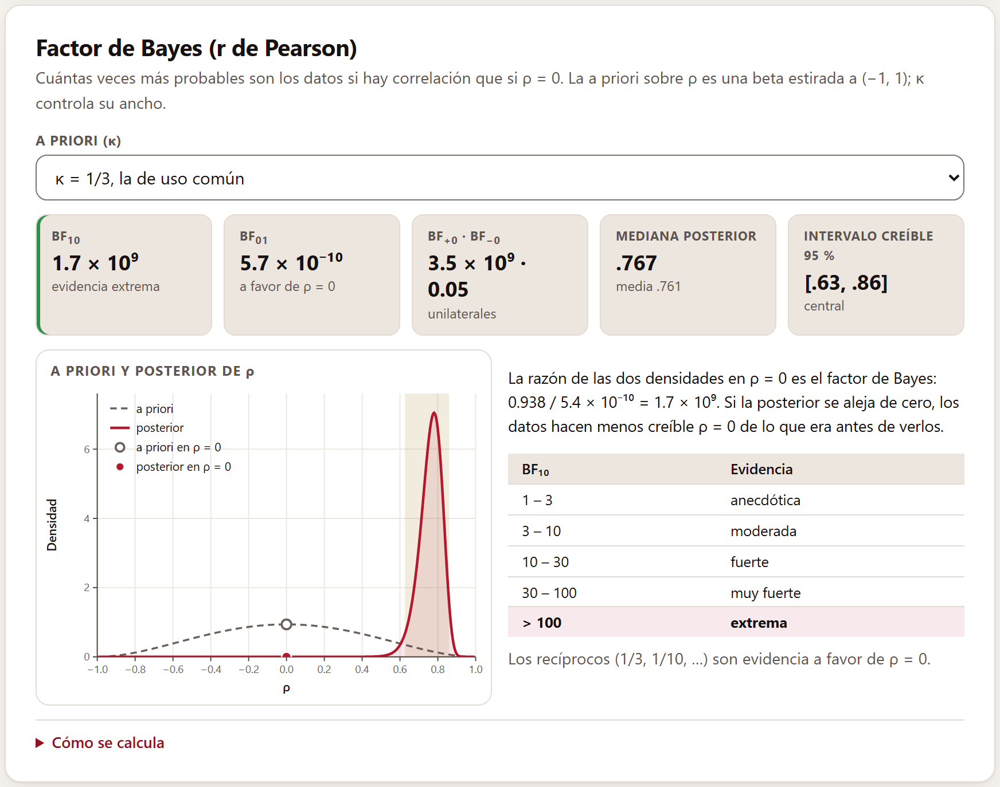
Figura 4.8. El frenado de los autos. La posterior de ρ (en rojo) se concentra alrededor de .77, con intervalo creíble [.63, .86]; en ρ = 0 su densidad es prácticamente nula frente a 0.938 de la a priori, y la razón de las dos es el factor de Bayes: evidencia extrema.
Tabla 4.3. Las palabras de la evidencia (Jeffreys 1961, según Lee y Wagenmakers 2013)
BF10
Evidencia a favor de que hay correlación
1 a 3
anecdótica
3 a 10
moderada
10 a 30
fuerte
30 a 100
muy fuerte
más de 100
extrema
Los recíprocos (de 1/3 a 1, de 1/10 a 1/3 y así) son la misma escala de evidencia a favor de ρ = 0.
θTeoría en breve · cómo se calcula
Con las medias y las varianzas integradas bajo las a priori de Jeffreys, la verosimilitud de ρ depende sólo de r y de n (Ly, Verhagen y Wagenmakers 2016). El factor de Bayes es su promedio bajo la a priori dividido entre su valor en ρ = 0, y coincide con la razón de las densidades a priori y posterior en ρ = 0 (la razón de Savage y Dickey): son los dos puntos de la gráfica. La app usa esa forma exacta y la integra numéricamente, con un método adaptativo.
4.7Cómo se calculó
La última tarjeta da, en una lista, los convenios de este cálculo: la prueba y el intervalo del coeficiente principal, el bootstrap con su número de remuestreos y su semilla, la permutación con la suya (la semilla más uno), la a priori del factor de Bayes y cuántas filas quedaron fuera por faltantes. Es lo que hace falta para la sección de métodos, y lo que el Bloque 13 redacta por ti.
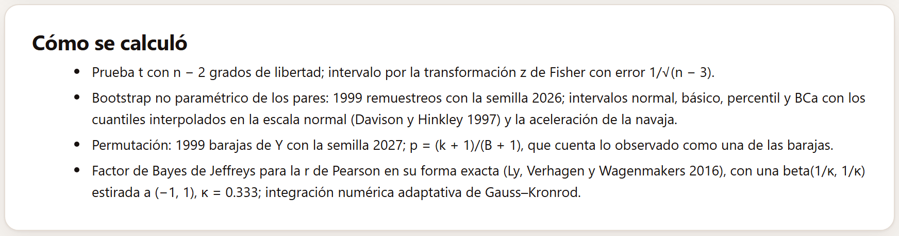
Figura 4.9. Los convenios del frenado de los autos con la r de Pearson como principal.
✓Para leer y escribir un par
Si la prueba clásica y la permutación coinciden…
informa la clásica; la permutación confirma que no depende de la normalidad.
Si no coinciden…
informa la permutación y el intervalo bootstrap, y di por qué.
Si el intervalo incluye valores pequeños y grandes…
la muestra no basta para saber cuán fuerte es la relación; dilo, aunque p sea pequeño.
Sip no es significativo…
no escribas «no hay relación»: mira el intervalo y el factor de Bayes, que sí pueden apoyar a ρ = 0.
Si el principal no es la r de Pearson…
recuerda que el factor de Bayes y r² son de Pearson, no del principal.
Si usaste remuestreo…
informa el número de remuestreos y la semilla.
Son guías para interpretar, no leyes: lo que sabes del fenómeno, del diseño y de cómo se midió siempre manda.
5
Capítulo cinco · Bloque 5
La matriz de correlación
Todas las variables contra todas: la matriz con sus pruebas corregidas por pruebas múltiples, la figura que se publica con el glifo y el orden que mejor la leen, el diagnóstico que dice si la matriz sirve para lo que sigue —regresión, análisis factorial, simulación—, el KMO y la prueba de Bartlett, y la tabla con medias, desviaciones y correlaciones lista para el artículo.
5.1Qué correlacionar
5.2La matriz
5.3Las pruebas múltiples
5.4Cuatro matrices para mostrar
5.5¿Es una matriz válida?
5.6KMO y Bartlett
5.7La tabla para publicar
5.8Matrices grandes
5.1Qué correlacionar
Entran las columnas numéricas —continuas y ordinales— con papel de variable. Al abrir unos datos quedan elegidas todas; un clic quita o pone una (siempre quedan al menos dos) y todas las vuelve a poner.
Coeficiente ofrece once de los doce coeficientes del Bloque 4 (todos menos la τ*, que es demasiado lenta para una matriz). Corrección por pruebas múltiples y α deciden qué celdas cuentan como significativas (sección 5.3). Cada celda usa las filas completas en sus dos variables, salvo que en el Bloque 2 se hayan elegido los faltantes por listas.
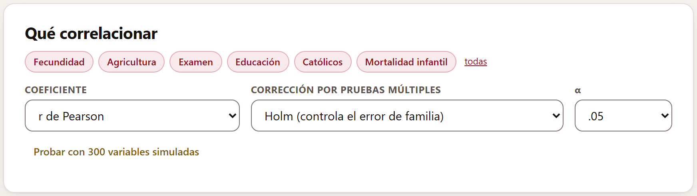
Figura 5.1. Suiza, 1888, el ejemplo con que abre el bloque: seis indicadores de 47 distritos francófonos, la r de Pearson y la corrección de Holm al 5 %.
iMedidas costosas y muchas variables
La correlación de distancias guarda matrices de n × n y se calcula hasta con 3 000 filas. La correlación de distancias, la D de Hoeffding y la ξ de Chatterjee admiten hasta 60 variables cuando hay más de 300 filas. Con más de 30 variables completas, Pearson y Spearman se calculan como productos de columnas estandarizadas, con los valores p de la aproximación t, y un mensaje lo dice.
5.2La matriz
La figura tiene dos mitades. Abajo y Arriba eligen el glifo de cada una entre los nueve de la sección 1.5 —elipse, círculo, media luna, pastel, cuadrado, barra, sombreado, color y número— o Nada; al cambiarlo, los glifos de forma se transforman en el nuevo. El color sigue la paleta elegida en el Bloque 1, y la barra de la derecha da su escala de −1 a 1.
Orden: El de los datos; tres de Agrupamiento jerárquico (promedio, completo o Ward), con la distancia 1 − r; Ángulo de los vectores propios (Friendly 2002), que ordena por el ángulo de cada variable en los dos primeros; Primer componente principal, por la carga en el primero; o Alfabético.
No significativas: las celdas cuyo valor p corregido no llega a α van Tachadas, Desvanecidas o Como las demás.
Mostrar: cuál de las cuatro matrices de la sección 5.4 se dibuja.
Al pasar el puntero por una celda se ven sus dos variables, su valor, su p corregido y su n. Un clic la elige: queda enmarcada en sus dos mitades, una línea debajo da su p sin corregir y corregido, y Estudiar el par elegido en el Bloque 4 → lleva ese par al Bloque 4.
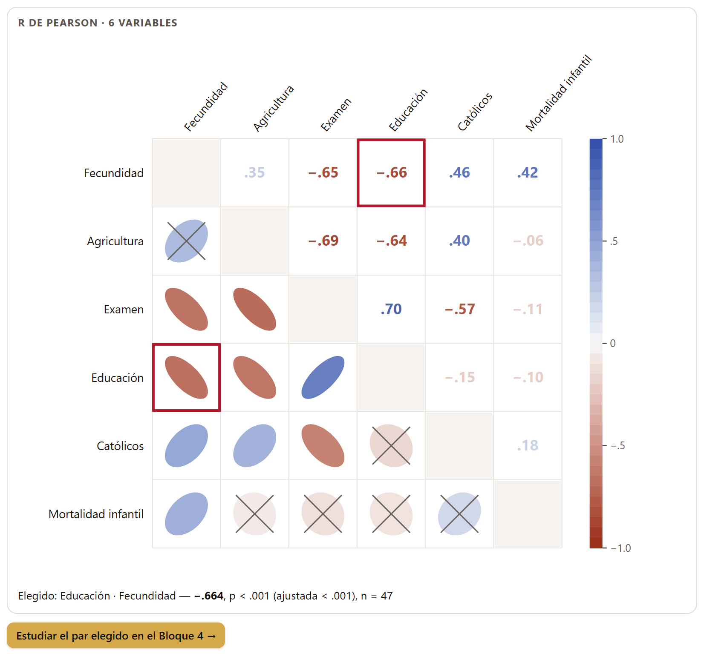
Figura 5.2. Suiza, 1888, con elipses abajo y números arriba. La educación y la fecundidad (enmarcadas) dan −.66. La agricultura y la fecundidad, con .35, quedan tachadas: sin corregir darían p < .05, pero no pasan la corrección de Holm.
θTeoría en breve · glifos y orden
Cada glifo codifica r de otra manera: la elipse es la forma de una nube con esa correlación (Murdoch y Chow 1996), la media luna y el pastel muestran |r| como fracción, el color y el sombreado (Friendly 2002) se leen bien de lejos y el número es exacto. Un buen arreglo combina dos: un glifo que se lea de un vistazo en una mitad y el número en la otra. El orden importa tanto como el glifo: agrupar las variables parecidas revela bloques que el orden de los datos esconde.
5.3Las pruebas múltiples
Con p variables hay p(p − 1)/2 pruebas: con seis variables, quince; con treinta, 435. Sin corrección, al 5 % se esperan falsos positivos aunque ninguna variable se relacione con otra: uno de cada veinte pares, en promedio. Las correcciones ajustan los valores p de toda la familia de pruebas.
Tabla 5.1. Las correcciones por pruebas múltiples
Corrección
Qué controla
Holm (la de omisión)
la probabilidad de tener al menos un falso positivo en toda la matriz (el error de familia), con más potencia que Bonferroni y sin supuestos
Benjamini–Hochberg
la proporción esperada de falsos positivos entre las celdas significativas (la tasa de falsos descubrimientos); más potente cuando hay muchas pruebas
Benjamini–Yekutieli
la misma tasa, válida con cualquier dependencia entre las pruebas; más conservadora
Hochberg · Hommel
el error de familia, con algo más de potencia que Holm; suponen que las pruebas son independientes o se asocian en el mismo sentido
Bonferroni
el error de familia, multiplicando cada p por el número de pruebas: la más simple y la más conservadora
Ninguna
nada: cada celda con su propio p
!Decide la corrección antes de ver la matriz
Si la pregunta es de confirmación («¿estas correlaciones son reales?»), usa Holm. Si es de exploración («¿qué pares merece la pena seguir?»), Benjamini–Hochberg. Lo que no se vale es probar varias y quedarse con la que da más estrellas. Y di siempre en el informe cuál usaste: la tabla para publicar lo pone en su nota.
5.4Cuatro matrices para mostrar
La matriz estimada: la de los datos, celda por celda.
La definida positiva más cercana: la matriz de correlación válida más parecida a la estimada (sección 5.5).
La contraída (Schäfer–Strimmer): cada correlación encogida hacia cero en la proporción λ que se estima de los datos; útil con pocas filas para muchas variables.
Las correlaciones parciales: cada par quitando el efecto lineal de todas las demás variables, con su prueba t de n − p grados de libertad y la misma corrección. Pide una matriz definida positiva.
iLas parciales de un solo par
Esta vista quita a todas las demás variables a la vez. Para controlar sólo por algunas, con su intervalo y su versión robusta, está el Bloque 7.
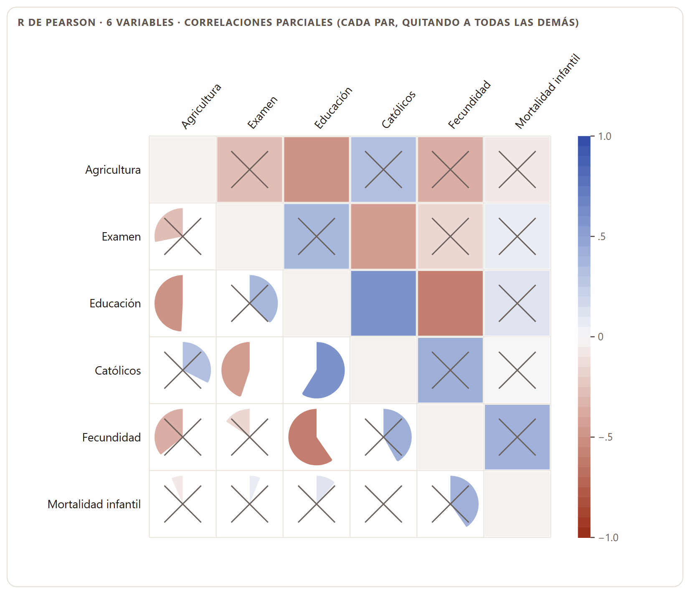
Figura 5.3. Las correlaciones parciales de Suiza, 1888, ordenadas por agrupamiento, con pasteles abajo y color arriba. Al quitar las demás variables, la educación sigue muy ligada a los católicos y a la fecundidad; el examen y la educación, que daban .70, quedan tachados: casi todo lo que comparten pasa por las otras variables.
5.5¿Es una matriz válida?
Una matriz de correlación debe ser definida positiva: todos sus valores propios mayores que cero. Calculada celda por celda puede no serlo —con faltantes por pares, con coeficientes robustos o con más variables que filas—, y entonces no sirve para regresión, análisis factorial, ecuaciones estructurales ni simulación. La tarjeta da cinco cifras: si es definida positiva (y, si no, cuántos valores propios son negativos o nulos), el menor y el mayor valor propio (con la parte de la varianza que se lleva el mayor), el número de condición —mayor de 1 000 es una matriz casi colineal— y el logaritmo del determinante.
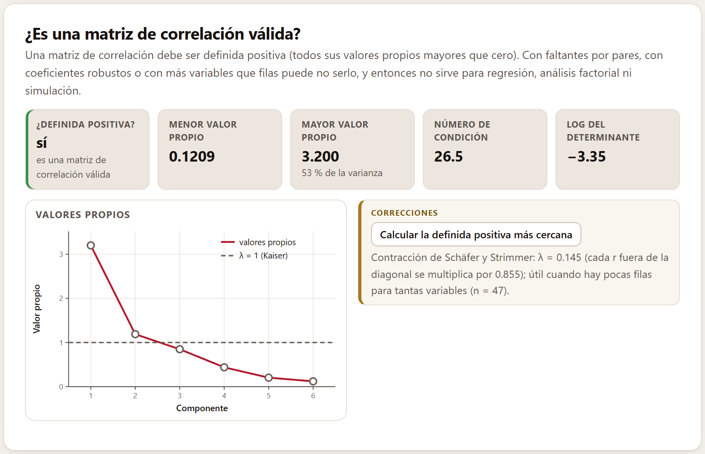
Figura 5.4. Suiza, 1888: definida positiva, con el menor valor propio en 0.121 y un número de condición de 26.5. El primer componente se lleva el 53 % de la varianza; la línea punteada es el criterio de Kaiser (λ = 1).
La gráfica de los valores propios ayuda a ver cuántas dimensiones tienen los datos. A la derecha, las Correcciones: Calcular la definida positiva más cercana aplica el algoritmo de Higham (2002), hasta con 150 variables, y dice cuántas iteraciones usó, la distancia de Frobenius a la estimada y el mayor cambio de una celda; la contracción de Schäfer y Strimmer da su λ y el factor por el que se multiplica cada correlación.
✓Si la matriz no es definida positiva
Si hay faltantes por pares…
prueba los faltantes por listas en el Bloque 2; si cambian mucho las cosas, los faltantes no son al azar.
Si el coeficiente es robusto…
usa la más cercana, y di en el informe que la usaste y cuánto cambió.
Si hay más variables que filas…
la matriz es singular por fuerza: usa la contraída, o reduce las variables.
Si el mayor cambio de la más cercana es grande (más de .05)…
la matriz estimada tiene un problema de fondo: revisa los datos antes de seguir.
5.6KMO y Bartlett
Antes de un análisis factorial conviene saber si las variables comparten algo. La medida de Kaiser, Meyer y Olkin (KMO) compara las correlaciones con las parciales: si las parciales son chicas frente a las correlaciones, las variables comparten factores. Se da para toda la matriz y, como MSA, para cada variable (hasta 60 variables). La prueba de Bartlett pregunta si la matriz es la identidad, es decir, si nada correlaciona; usa el menor n de la matriz. Las dos piden una matriz definida positiva.
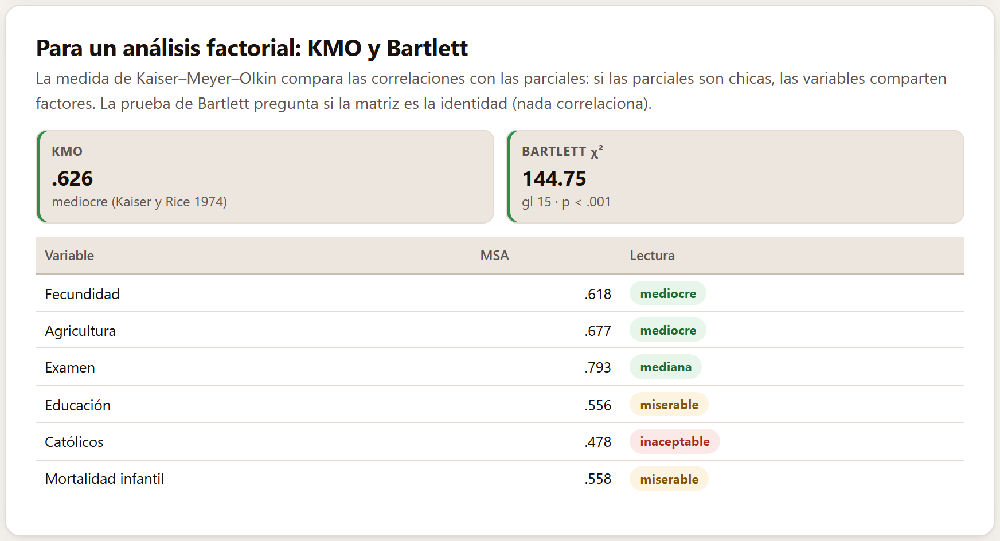
Figura 5.5. Suiza, 1888: KMO = .626, «mediocre»; Bartlett rechaza la identidad (χ² = 144.75 con 15 grados de libertad). Los católicos, con MSA = .478, son la variable que menos comparte con las demás.
Tabla 5.2. Las palabras del KMO (Kaiser y Rice 1974)
KMO o MSA
Lectura
.90 o más
maravillosa
.80 a .90
meritoria
.70 a .80
mediana
.60 a .70
mediocre
.50 a .60
miserable
menos de .50
inaceptable
En la tabla de cada variable, las etiquetas van en verde desde .60, en ámbar entre .50 y .60 y en rojo por debajo. Una variable inaceptable es la primera candidata a quedar fuera del análisis factorial.
5.7La tabla para publicar
La tabla clásica de un artículo: cada variable numerada con su media (M) y su desviación estándar (DE), y debajo de la diagonal las correlaciones con estrellas según el p corregido. La nota al pie da el n (o su intervalo, con faltantes por pares) y la corrección usada. Los números siguen el estilo del Bloque 1. Se arma hasta con 30 variables, y muestra la matriz que esté elegida en Mostrar.
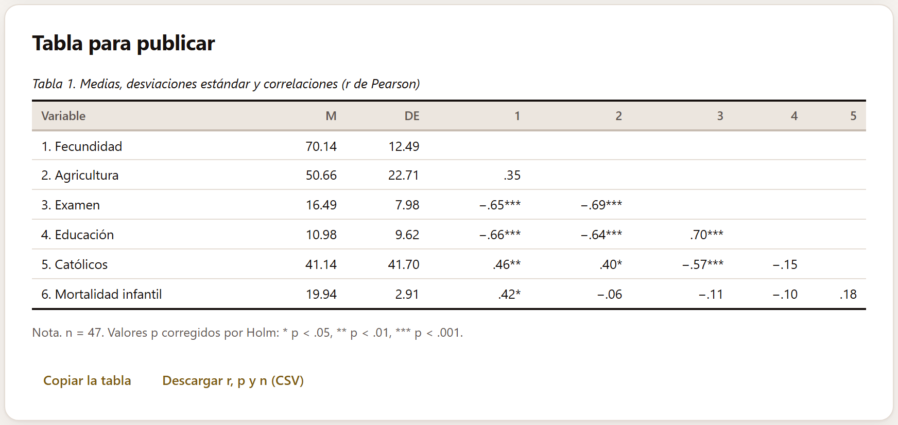
Figura 5.6. Suiza, 1888, lista para el artículo. Copiar la tabla la deja en el portapapeles separada por tabuladores, de modo que al pegarla en un procesador de textos o una hoja de cálculo cada valor cae en su celda.
Descargar r, p y n (CSV) guarda un renglón por par con sus dos variables, r, el p sin corregir, el p corregido y el n: lo que hace falta para un material suplementario o para otro programa, con cualquier número de variables.
5.8Matrices grandes
Con más de 40 variables la figura deja los glifos y se vuelve un lienzo de colores, una celda por par. Al pasar el puntero, una lupa muestra los números de la ventana de 9 × 9 celdas que lo rodea, y una línea debajo da el par, su valor, su p corregido y su n; un clic elige el par. Ordenar por agrupamiento es lo que hace legible una matriz grande. Probar con 300 variables simuladas abre un conjunto de 300 variables y 120 filas en seis módulos —simulado, no son datos reales— para probarlo.
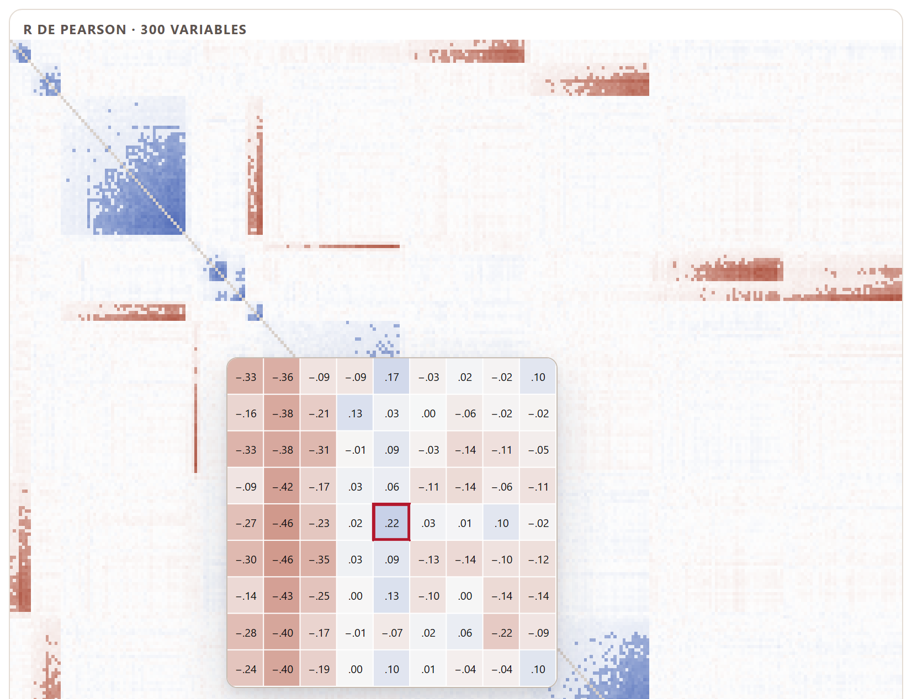
Figura 5.7. Las 300 variables simuladas, ordenadas por agrupamiento: los seis módulos son los bloques sobre la diagonal. La lupa da los números alrededor del puntero.
El diagnóstico se calcula hasta con 400 variables. Con 300 variables y sólo 120 filas, la matriz no puede ser definida positiva: tiene 181 valores propios nulos (300 menos 119), su número de condición es infinito y la más cercana no se calcula con tantas variables. Para un caso así está la contracción: λ = 0.199 multiplica cada correlación por 0.801 y deja una matriz válida.
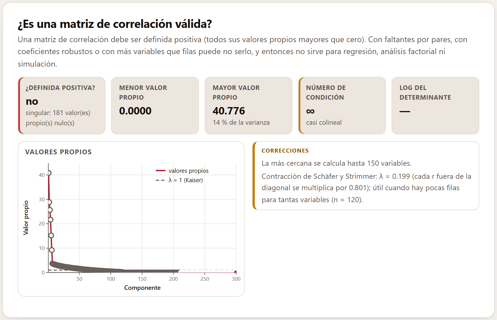
Figura 5.8. Una matriz con más variables que filas: singular, con 181 valores propios nulos. Los seis primeros valores propios, muy por encima de los demás, son los seis módulos.
6
Capítulo seis · Bloque 6
Dependencia no lineal y cópulas
La r de Pearson mide rectas y la ρ de Spearman, curvas que siempre suben o siempre bajan. Una relación en U, en campana o con ciclos se les escapa. Este bloque reúne las medidas que valen cero sólo cuando no hay ninguna relación, rastrea todos los pares para encontrar los que Pearson no ve y ajusta cinco cópulas que dicen si los valores extremos ocurren juntos.
6.1Un par: lo que ve cada medida
6.2La nube y la escala común
6.3MIC y su matriz característica
6.4El rastreo: lo que Pearson no ve
6.5Las cópulas: la forma de la dependencia
6.1Un par: lo que ve cada medida
Se eligen dos variables numéricas en X y Y y el bloque calcula, de una vez, nueve cifras: la r de Pearson, la ρ de Spearman y las medidas de dependencia que ven cualquier forma. La τ de Kendall aparece en la gráfica de la sección 6.2.
Hacen falta al menos 10 pares completos. Permutaciones para MIC calcula el valor p de MIC barajando Y 199, 499 o 999 veces; como MIC es lento, viene apagado (No calcular su valor p). Con más de 250 filas o con permutaciones aparece una espera.
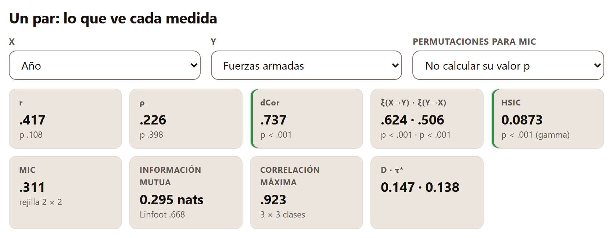
Figura 6.1. El año y las fuerzas armadas de Estados Unidos, 1947 a 1962, el ejemplo con que abre el bloque. Ni r (.417, p = .108) ni ρ (.226) son significativas; la correlación de distancias (.737), la ξ y el HSIC sí, con p < .001.
Tabla 6.1. Las medidas del Bloque 6
Medida
Qué mide
Prueba · límite
r, ρ, τ
la parte lineal (r) y la parte monótona (ρ, τ) de la relación
las del Bloque 4
dCor
cualquier dependencia; en la población vale 0 sólo con independencia (Székely, Rizzo y Bakirov 2007)
T · hasta 3 000 filas
ξ(X→Y) · ξ(Y→X)
cuánto Y es función de X, y al revés: no es simétrica (Chatterjee 2021)
z · sin límite
HSIC
la dependencia medida en un espacio de funciones, con núcleos gaussianos (Gretton y colaboradores 2005)
aproximación gamma · hasta 1 500
MIC
la mayor información mutua que capta una rejilla, normalizada para que una función sin ruido de cualquier forma valga 1 (Reshef y colaboradores 2011)
permutación, si se pide · hasta 1 200
Información mutua
cuánta incertidumbre sobre Y quita conocer X, en nats; con el coeficiente de Linfoot pasa a la escala de una correlación (Kraskov, Stögbauer y Grassberger 2004)
— · hasta 3 000
Correlación máxima
la mayor r que se obtiene transformando X y Y con cualquier función (Gebelein 1941; Rényi 1959), sobre clases de cuantiles
— · sin límite
D · τ*
la D de Hoeffding y la τ* de Bergsma y Dassios, como en el Bloque 4
— · τ* hasta 80
iLa información mutua, en unidades estándar
El estimador de vecinos cercanos mide distancias con la norma del máximo, así que la app estandariza antes las dos variables: en sus propias unidades, la de mayor dispersión decidiría sola qué puntos son vecinos. El coeficiente de Linfoot, √(1 − e−2I), coincide con |ρ| cuando las dos variables son normales.
6.2La nube y la escala común
A la izquierda, la nube con la recta y el LOWESS. A la derecha, las nueve medidas en una sola escala de 0 (independencia) a 1, con el color de su familia: r en rojo, las de rangos en dorado, las de dependencia en turquesa y la correlación máxima en violeta. Cuando las de dependencia quedan muy a la derecha de |r|, hay una relación que una recta no ve.
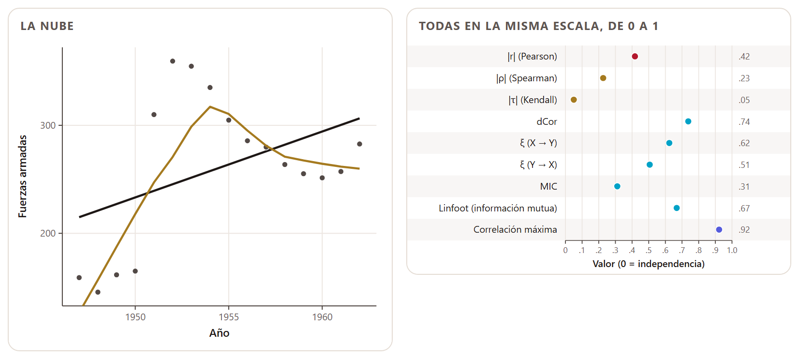
Figura 6.2. Las fuerzas armadas crecen de golpe en 1951, con la guerra de Corea, y luego bajan poco a poco. La recta apenas lo capta; la correlación de distancias (.74), la ξ (.62 y .51) y la correlación máxima (.92) sí.
Debajo, la lectura en palabras compara la correlación de distancias con |r|: si la supera en más de 0.2, hay dependencia que una recta no capta; si no, casi toda la dependencia que se detecta la capta también una recta. Si las dos ξ difieren en más de 0.15, lo dice y explica en qué dirección es más fuerte: en una parábola, Y es función de X pero no al revés. Y da el índice de no linealidad de MIC, MIC − r².
!Con pocos datos, no todas las medidas sirven
Con los 16 años de este ejemplo, MIC sólo puede usar una rejilla de 2 × 2 y la correlación máxima, tres clases por variable, que tienden a dar valores altos. La correlación de distancias, la ξ y el HSIC funcionan bien con pocos datos y traen su prueba; MIC y la información mutua piden, al menos, unos 50.
6.3MIC y su matriz característica
MIC prueba muchas rejillas sobre la nube —de 2 × 2 a las que tienen hasta n0.6 celdas— y en cada una mide la información mutua entre la columna y la fila en que cae cada punto, normalizada por el logaritmo del lado menor. La matriz característica muestra ese valor para cada combinación de columnas y filas; MIC es su máximo, enmarcado en rojo. Con muy pocos datos sólo cabe la rejilla de 2 × 2, y la app lo dice en lugar de dibujar una matriz de una celda.
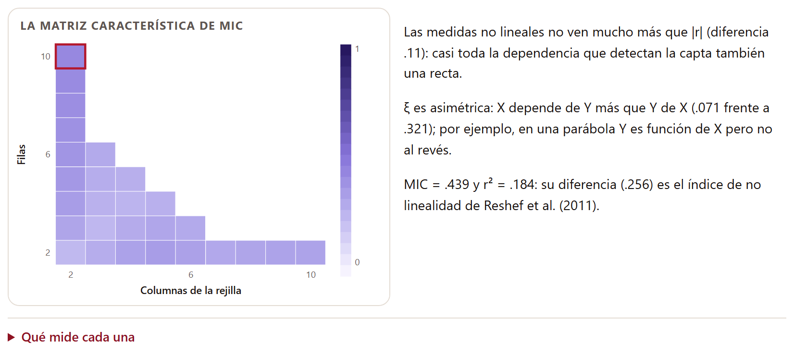
Figura 6.3. El ancho del sépalo y el largo del pétalo de los lirios. El máximo está en la rejilla de 2 columnas por 10 filas: MIC = .439 frente a r² = .184. La ξ es asimétrica: el largo del pétalo dice mucho del ancho del sépalo (.321), y no al revés (.071), porque con un mismo ancho de sépalo hay pétalos cortos y largos.
θTeoría en breve · qué ve cada una
La correlación de distancias compara las distancias entre todos los pares de puntos en X con las de Y; el HSIC hace lo mismo con las semejanzas que da un núcleo gaussiano, cuyo ancho se fija con la mediana de las distancias. Las dos valen cero sólo con independencia. La ξ ordena los datos por X y mira cuánto saltan los rangos de Y de un vecino al siguiente: si Y es función de X, casi no saltan. MIC y la información mutua vienen de la teoría de la información; la correlación máxima, de buscar las mejores transformaciones de las dos variables.
6.4El rastreo: lo que Pearson no ve
Rastrear calcula, para todos los pares de las variables numéricas (hasta 30 variables), r, ρ, la correlación de distancias y la ξ en su dirección más fuerte, y los ordena por dCor − |r|: arriba quedan las relaciones curvas, en U o con ciclos. Incluir MIC (más lento) añade MIC y MIC − r². Los seis primeros pares aparecen como tarjetas con una nube en miniatura; la tabla muestra hasta 40, con la diferencia en ámbar cuando pasa de 0.2. Un clic en una tarjeta o en una fila lleva ese par al estudio de la sección 6.1.
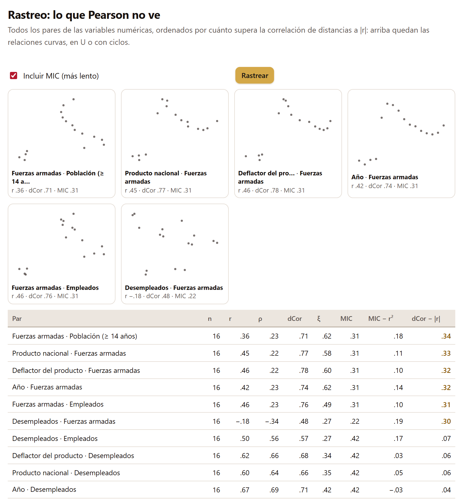
Figura 6.4. Los 21 pares de la economía de Estados Unidos. Los seis primeros son los de las fuerzas armadas, que suben y luego bajan frente a las demás series; las series que crecen juntas quedan abajo, con dCor − |r| cerca de cero.
▸Ejemplo · para qué sirve el rastreo
En una matriz de 20 variables hay 190 pares, y nadie mira 190 nubes. El rastreo pone delante los pocos pares en que una matriz de Pearson —la del Bloque 5— engaña, porque dice «poca relación» donde hay mucha. Esos pares merecen una nube en el informe, y una medida de dependencia en lugar de r.
6.5Las cópulas: la forma de la dependencia
El teorema de Sklar (1959) separa cada variable de su dependencia: al pasar los datos a rangos divididos entre n + 1 —las pseudo-observaciones— queda sólo la cópula, la dependencia sin las marginales. Dos pares con la misma τ de Kendall pueden tener cópulas muy distintas, y la diferencia está sobre todo en las colas: ¿los valores extremos ocurren juntos?
El bloque ajusta cinco familias al par elegido, cada una con dos estimaciones de su parámetro θ: la que da la inversión de la τ de Kendall y la de máxima pseudoverosimilitud (Genest, Ghoudi y Rivest 1995). Da su log-verosimilitud, su AIC —la de menor AIC lleva la etiqueta menor AIC— y su dependencia en la cola inferior y en la superior. Clayton y Gumbel sólo se ajustan con dependencia positiva.
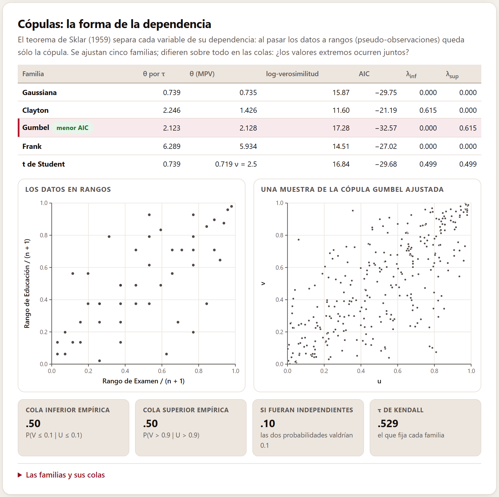
Figura 6.5. El examen y la educación de los distritos de Suiza, 1888 (τ = .529). Gana la de Gumbel, con la dependencia concentrada arriba (λsup = .615): los distritos con más reclutas de nota alta son también los de más educación. A la derecha, una muestra de la cópula ajustada para compararla con los datos.
Tabla 6.2. Las cinco familias y sus colas
Familia
Colas
Gaussiana
sin dependencia en las colas: los extremos se vuelven independientes
t de Student
la misma dependencia en las dos colas, mayor cuanto menos grados de libertad (ν)
Clayton
dependencia abajo: los valores bajos ocurren juntos
Gumbel
dependencia arriba: los valores altos ocurren juntos
Frank
sin dependencia en las colas, simétrica; admite dependencia negativa
Debajo, cuatro cifras dan las colas de los datos mismos: la probabilidad de que Y esté en su 10 % inferior cuando X lo está, la del 10 % superior, lo que valdrían las dos si fueran independientes (0.1) y la τ de Kendall que fija cada familia.
θTeoría en breve · la dependencia en las colas
La dependencia en la cola superior λsup es el límite de la probabilidad de que V pase de u cuando U pasa de u, con u acercándose a 1 (Joe 1997); la inferior, lo mismo abajo. Importa en riesgos: si las sequías de dos regiones, las caídas de dos precios o las plagas de dos cultivos tienen cola común, ocurren juntas más de lo que una gaussiana con la misma correlación haría creer. La inversión de τ da un valor de partida que no depende de las marginales; la pseudoverosimilitud lo afina.
✓Para leer el Bloque 6
Si dCor supera mucho a |r|…
mira la nube e informa una medida de dependencia, no r; describe la forma con palabras.
Si las dos ξ difieren mucho…
una variable es casi función de la otra, pero no al revés: di en qué dirección.
Si hay menos de unos 50 datos…
confía en dCor, ξ y HSIC; toma MIC, la información mutua y la correlación máxima como orientación.
Si la mejor cópula tiene cola…
los extremos ocurren juntos: tenlo en cuenta en cualquier simulación o análisis de riesgo.
Si dos familias quedan cerca en AIC…
los datos no alcanzan para elegir: con pocos datos, las colas empíricas descansan en muy pocos puntos.
Son guías para interpretar, no leyes: lo que sabes del fenómeno, del diseño y de cómo se midió siempre manda.
7
Capítulo siete · Bloque 7
Parcial, múltiple y entre conjuntos
Dos variables casi nunca están solas. Este bloque quita el efecto de terceras variables (la correlación parcial y la semiparcial), mide cuánto explican varias variables juntas de una (la correlación múltiple, con el reparto de su R²) y correlaciona grupos de variables entre sí: la correlación canónica, el coeficiente RV, Procrustes, la prueba de Mantel y la coinercia.
7.1Correlación parcial y semiparcial
7.2Correlación múltiple
7.3Correlación canónica
7.4Entre conjuntos: RV, Procrustes, Mantel y coinercia
7.1Correlación parcial y semiparcial
¿Cuánto queda de la relación entre X y Y cuando se quita lo que las dos comparten con Z? La parcial quita Z de las dos; la semiparcial, sólo de Y.
Se eligen X, Y y el Coeficiente —Pearson, Spearman o Kendall—, y en Controlar por (Z) una o varias variables. Las cifras son la correlación sin controlar, la parcial con su prueba, la semiparcial, la correlación de distancias parcial (Székely y Rizzo 2014), que quita Z sin suponer relaciones lineales, con su valor p por permutación (hasta con 800 filas), y el número de controles con los grados de libertad, n − 2 − k.
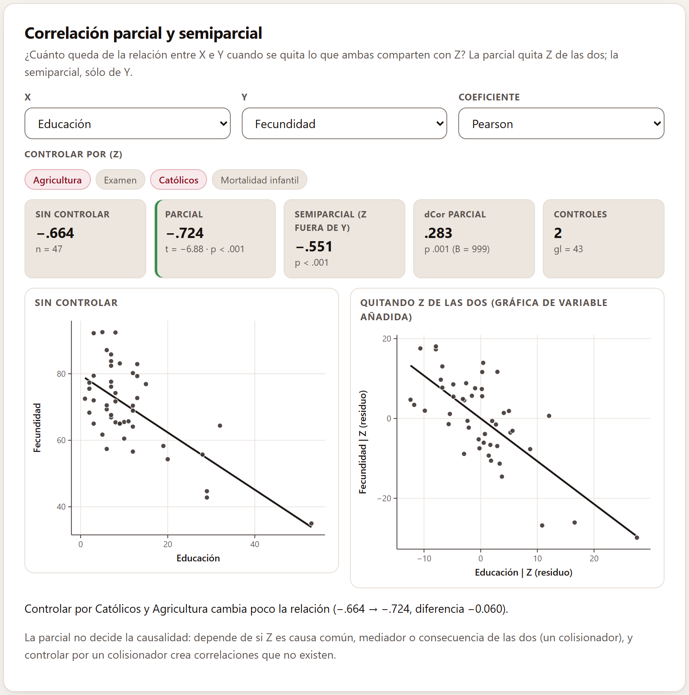
Figura 7.1. La educación y la fecundidad de los distritos suizos, controlando por los católicos y la agricultura. La relación no se debe a ellas: sin controlar −.664, parcial −.724 con 43 grados de libertad. La gráfica de la derecha es la de variable añadida: los residuos de cada una después de quitarles Z.
Las dos gráficas son la clave para entender la parcial. A la izquierda, la nube de siempre; a la derecha, la gráfica de variable añadida: los residuos de X y de Y después de quitarles lo que predice Z. Con Pearson, la parcial es exactamente la r de esa segunda nube. Debajo, una lectura dice qué pasó al controlar: si la relación cae a menos de la mitad, si cambia de signo o crece (un efecto de supresión), o si cambia poco.
!La parcial no decide la causalidad
Que la relación baje al controlar por Z puede querer decir dos cosas opuestas: que Z es causa común de X y de Y (y la correlación original era en parte espuria) o que Z es el camino por el que X actúa sobre Y (un mediador). Y si Z es consecuencia de las dos —un colisionador—, controlar por ella crea una correlación que no existe. Elige las variables de control por lo que sabes del fenómeno, no porque cambian el resultado.
7.2Correlación múltiple
La correlación entre Y y la mejor combinación lineal de varias X: la R de una regresión múltiple. Se elige Y y, en Predictores (X), las demás. Cuatro cifras la resumen: R, R² con su versión ajustada por el número de predictores, la prueba F de que todos los coeficientes valen cero y la parte compartida de R², la que no es de ningún predictor en particular.
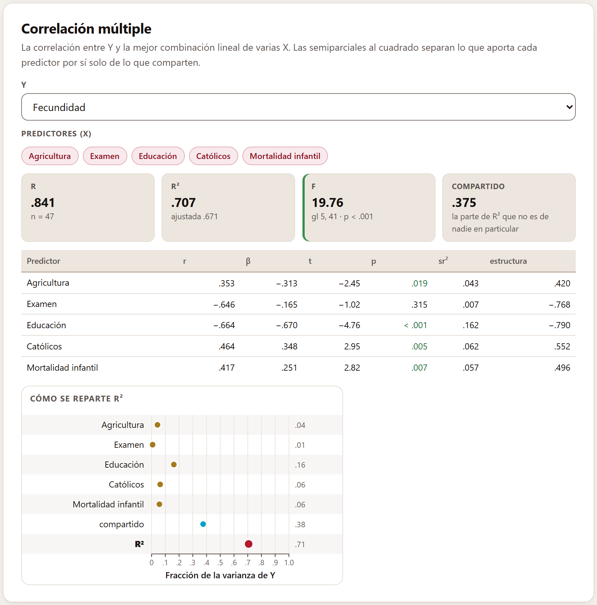
Figura 7.2. La fecundidad y los otros cinco indicadores: R = .841, R² = .707. Lo que cada predictor aporta solo (sr²) suma .331; los otros .375 son compartidos. La educación es la que más aporta por sí misma (.162).
La tabla da, para cada predictor, su correlación simple r con Y, su coeficiente estandarizado β con su prueba t, su semiparcial al cuadrado sr² —lo que R² perdería si se quitara ese predictor— y su coeficiente de estructura, r/R, la correlación del predictor con la predicción. La gráfica reparte R² entre lo único de cada predictor y lo compartido.
▸Ejemplo · cuando β y r tienen signos contrarios
En la figura 7.2, la agricultura tiene r = .353 con la fecundidad —los distritos más agrícolas tienen más hijos— pero β = −.313. No es un error: entre distritos con la misma educación, el mismo examen, los mismos católicos y la misma mortalidad, más agricultura va con algo menos de fecundidad. La correlación simple estaba cargada por la educación, que es más baja en los distritos agrícolas. Por eso un β no se interpreta sin mirar también r y la estructura.
7.3Correlación canónica
Con dos conjuntos de variables, la correlación canónica (Hotelling 1936) busca la combinación lineal de cada conjunto que más se correlaciona con una del otro; luego la siguiente, independiente de la primera, y así hasta el tamaño del conjunto menor. Los conjuntos se arman con los botones de Conjunto A (en rojo) y Conjunto B (en dorado); una variable no puede estar en los dos. Hace falta que haya más filas que variables en total.
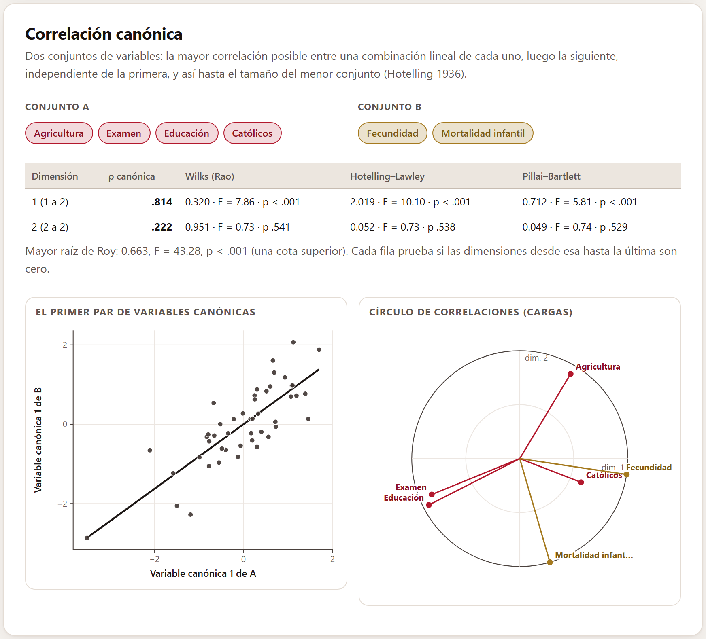
Figura 7.3. Cuatro indicadores sociales (A) frente a la fecundidad y la mortalidad infantil (B). La primera dimensión, ρ = .814, es significativa por las tres pruebas; la segunda, .222, no. En el círculo, la primera dimensión opone la fecundidad y los católicos a la educación y el examen.
La tabla da cada correlación canónica con tres pruebas: la lambda de Wilks (con la F de Rao), la traza de Hotelling y Lawley y la de Pillai y Bartlett. Cada fila prueba si las dimensiones desde ésa hasta la última valen cero: si la primera fila es significativa y la segunda no, sólo la primera dimensión es real. Debajo va la mayor raíz de Roy, que es una cota superior y por eso tiende a rechazar de más. La nube muestra el primer par de variables canónicas; el círculo de correlaciones pone cada variable según su correlación con las dos primeras variables canónicas de su conjunto (las cargas de estructura).
7.4Entre conjuntos: RV, Procrustes, Mantel y coinercia
Con los mismos conjuntos A y B, cuatro medidas que no buscan combinaciones lineales, sino que comparan las dos tablas enteras. Todas usan las variables estandarizadas y las tres primeras traen prueba por permutación: 999 barajas de las filas (menos con más de 300 filas).
RV (Escoufier 1973): una r entre dos tablas, de 0 a 1. La cifra da también lo que valdría sin relación, que no es cero: crece con el número de variables y baja con el de filas.
Procrustes (Gower 1975; Peres-Neto y Jackson 2001): gira y escala una configuración para ajustarla a la otra; m² es lo que queda sin ajustar y r = √(1 − m²).
Mantel (1967): la correlación entre las distancias de todas las parejas de filas en una tabla y en la otra (hasta con 400 filas).
Coinercia: el análisis que busca los ejes en que las dos tablas varían juntas; la cifra dice qué parte de la coinercia se lleva el primer eje y la r entre las puntuaciones de las dos tablas en él.
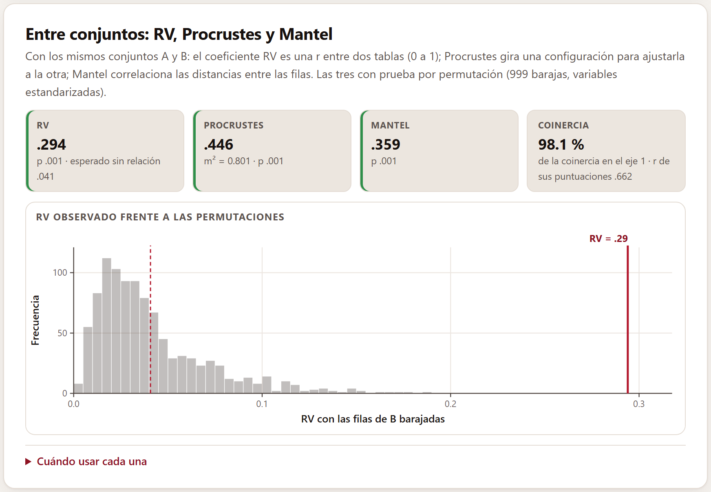
Figura 7.4. Los mismos conjuntos: RV = .294 frente a .041 que daría el azar, Procrustes .446 y Mantel .359, los tres con p = .001, el menor posible con 999 barajas. El primer eje se lleva el 98.1 % de la coinercia. La gráfica pone el RV observado frente a los de las barajas.
θTeoría en breve · cuándo usar cada una
La canónica busca combinaciones lineales y se rompe con muchas variables frente a pocas filas; el RV resume toda la tabla y es la base de la coinercia; Procrustes compara configuraciones, por ejemplo dos ordenaciones de los mismos sitios; Mantel sirve cuando lo que se tiene son distancias —genéticas, geográficas, ecológicas—, aunque su potencia es baja y no corrige la autocorrelación espacial (Guillot y Rousset 2013; Legendre, Fortin y Borcard 2015).
✓Para leer el Bloque 7
Si la relación baja mucho al controlar por Z…
decide, por lo que sabes, si Z es causa común (la relación era espuria) o mediador (la parcial es el efecto directo).
Si la relación crece o cambia de signo al controlar…
hay supresión: informa las dos, la simple y la parcial.
SiR² es alto pero ningún β es significativo…
los predictores comparten casi todo: mira la parte compartida y la estructura, no sólo los β.
Si sólo la primera dimensión canónica es significativa…
interpreta sólo ésa, con el círculo de correlaciones.
Si hay casi tantas variables como filas…
usa el RV o Procrustes en lugar de la canónica.
Son guías para interpretar, no leyes: lo que sabes del fenómeno, del diseño y de cómo se midió siempre manda.
8
Capítulo ocho · Bloque 8
Categóricas, ordinales y mixtas
No todo se mide con números. Este bloque analiza la asociación en una tabla de contingencia —con su prueba, su mosaico y una veintena de medidas—, la relación entre una variable continua y una categórica, las correlaciones latentes (tetracórica, policórica y poliserial) y la matriz heterogénea, en la que cada par recibe el coeficiente que piden sus tipos.
8.1Dos variables categóricas
8.2Las pruebas y las medidas de una tabla
8.3La tabla de 2 × 2
8.4Una continua y una categórica
8.5La matriz heterogénea
8.1Dos variables categóricas
Se eligen las Filas y las Columnas entre las variables binarias, nominales u ordinales (de 2 a 30 categorías; el número va entre paréntesis), y la app arma la tabla de contingencia.
En cada celda decide qué se ve: la Frecuencia, el % de la fila, el % de la columna o el Residuo estandarizado (el ajustado de Haberman). Sea cual sea la elección, el fondo de cada celda dice si tiene más casos de los que habría si las dos variables fueran independientes (azul) o menos (rojo), cuando el residuo ajustado pasa de 1.96, y más intenso cuando pasa de 2.58. Si alguna frecuencia esperada es menor que 5, una nota lo avisa y pide el valor p exacto o de Monte Carlo.
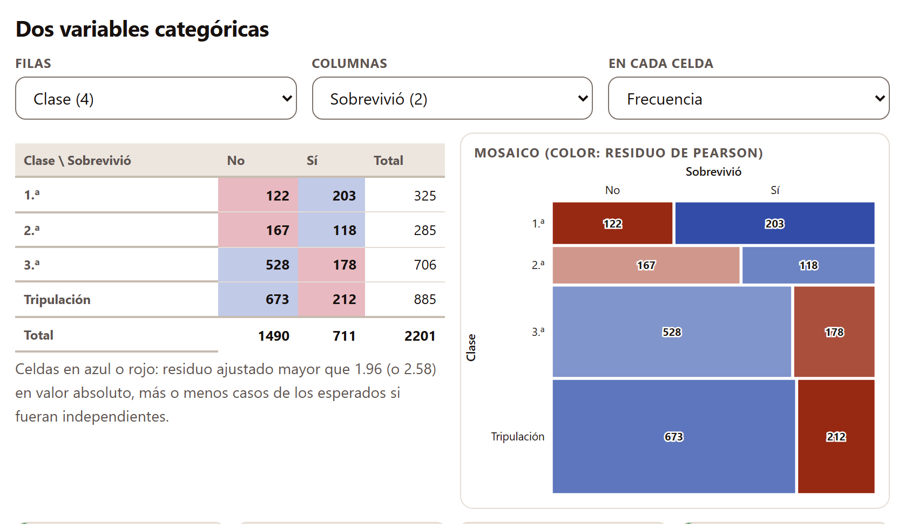
Figura 8.1. El Titanic, el ejemplo con que abre el bloque: la clase y la supervivencia de 2 201 personas. En primera clase sobrevivieron más de los esperados (203, azul); en tercera y en la tripulación, menos (rojo). El mosaico lo dibuja: el alto de cada franja es el tamaño de la clase y el ancho de cada rectángulo, la proporción dentro de ella.
En el mosaico cada fila de la tabla es una franja horizontal, con un alto proporcional a su total, y dentro de ella cada columna ocupa el ancho de su proporción. El color es el residuo de Pearson de la celda, en la paleta del Bloque 1: azul cuando hay más casos de los esperados, rojo cuando hay menos.
8.2Las pruebas y las medidas de una tabla
Debajo van las cifras principales: la χ² de Pearson con sus grados de libertad, la razón de verosimilitudes G², el valor p exacto de Fisher (en 2 × 2, con la χ² corregida de Yates) o el de Monte Carlo con 1 999 tablas (en tablas mayores, hasta con 5 000 casos), y la V de Cramér corregida. La χ² dice si hay asociación; las medidas dicen cuánta.
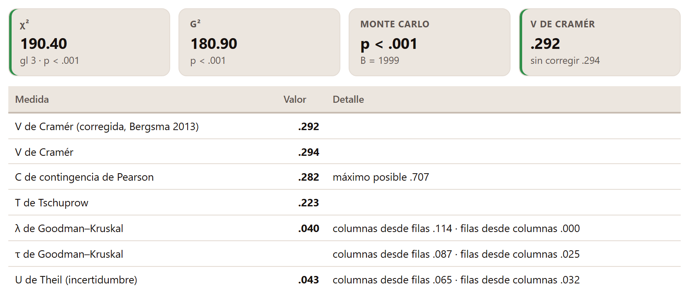
Figura 8.2. La clase y la supervivencia: χ² = 190.40 con 3 grados de libertad y V de Cramér = .292. Las medidas asimétricas dicen que conocer la clase mejora algo la predicción de la supervivencia (λ = .114), y que conocer la supervivencia no ayuda nada a predecir la clase (λ = .000).
Tabla 8.1. Las medidas de una tabla de contingencia
Medida
Qué dice
V de Cramér
la fuerza de la asociación, de 0 a 1, para cualquier tabla; la corregida (Bergsma 2013) quita el sesgo hacia arriba de las muestras chicas
C de contingencia
la medida de Pearson; nunca llega a 1, y la app da su máximo posible para esa tabla
T de Tschuprow
como la V, pero sólo llega a 1 en tablas cuadradas
λ de Goodman y Kruskal
cuánto baja el error de adivinar una variable por su categoría más común al conocer la otra; en las dos direcciones y simétrica
τ de Goodman y Kruskal
lo mismo, pero adivinando al azar con las proporciones; en las dos direcciones
U de Theil
la parte de la incertidumbre (la entropía) de una variable que quita la otra; en las dos direcciones y simétrica
γ, d de Somers, τ-b, τ-c
con categorías ordenadas (ninguna nominal): la concordancia en el orden. γ ignora los empates y por eso exagera; τ-c sirve para tablas rectangulares
Policórica
si cada variable es el corte de una normal latente, la correlación de esas normales, con la prueba de que el modelo normal ajusta
!Con muchos casos, todo es significativo
Con 2 201 personas, una asociación diminuta ya da p < .001. El valor p de la χ² no mide la fuerza: informa siempre una medida —la V corregida, una λ, una razón de momios— y los porcentajes que la explican.
8.3La tabla de 2 × 2
Cuando las dos variables son binarias aparecen las medidas propias de la tabla de 2 × 2: φ, que es la r de Pearson de dos variables codificadas 0 y 1; la razón de momios con su intervalo de Woolf, que no depende de las marginales; la Q y la Y de Yule, que llevan la razón de momios a la escala de −1 a 1; el riesgo relativo, y la tetracórica.
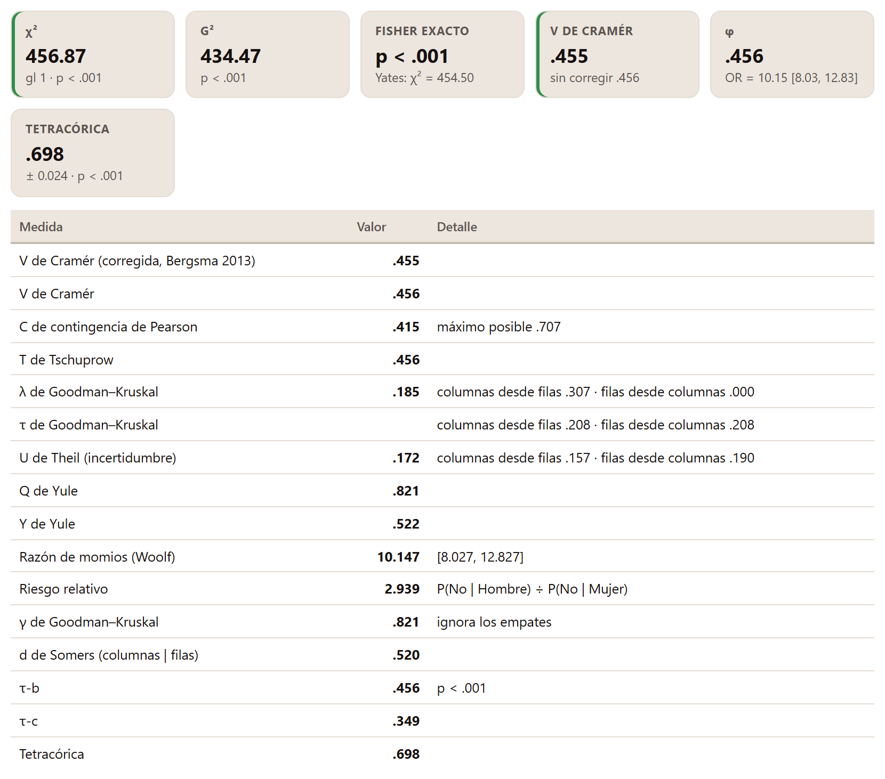
Figura 8.3. El sexo y la supervivencia. Sobrevivió el 73 % de las mujeres y el 21 % de los hombres: φ = .456 y una razón de momios de 10.15 [8.03, 12.83]. El riesgo relativo, 2.939, compara la primera columna (no sobrevivir) entre la primera fila y la segunda: entre los hombres, la proporción de muertos fue casi tres veces la de las mujeres.
iEl orden de las categorías decide el signo
La razón de momios, el riesgo relativo, φ y la tetracórica comparan la primera categoría con la segunda en el orden de la tabla. Aquí el sexo va «Hombre, Mujer» y la supervivencia «No, Sí»: por eso φ es positiva (ser mujer va con sobrevivir). Si inviertes el orden de una variable en el Bloque 2, cambia el signo, no la fuerza.
θTeoría en breve · φ frente a la tetracórica
φ mide la asociación de las dos binarias tal como son. La tetracórica supone que cada binaria es el corte de una variable continua normal —la propensión a sobrevivir, por ejemplo— y estima la correlación de esas dos normales; por eso es mayor (.698 frente a .456). Úsala sólo si esa variable latente tiene sentido; para dos categorías de verdad, como el sexo, φ o la razón de momios son más honestas.
8.4Una continua y una categórica
Se eligen una variable Continua y una Categórica. Siempre se calcula la razón de correlación η con su η² y su prueba F (la del análisis de varianza de una vía): qué parte de la variación de la continua explican las categorías. Según el tipo de la categórica se añaden otras:
Binaria: la biserial puntual, que es la r de Pearson con la binaria en 0 y 1 y equivale a la prueba t de dos grupos; la biserial, si la binaria es el corte de una normal; la rango-biserial, que no supone normalidad (con la U de Mann y Whitney), y la poliserial.
Ordinal: la poliserial (Olsson, Drasgow y Dorans 1982), la correlación de la continua con la normal latente que se corta en las categorías, con su error estándar y la estimación ad hoc de los mismos autores.
Nominal: sólo η, que no tiene signo porque las categorías no tienen orden.
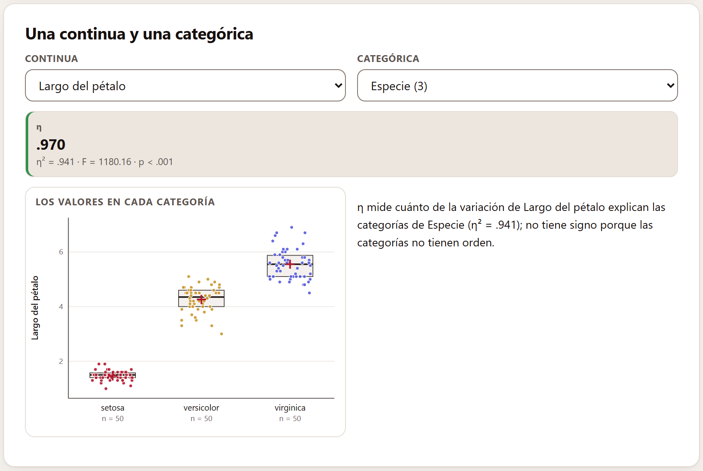
Figura 8.4. El largo del pétalo y la especie de los lirios: η = .970, η² = .941. Las especies explican el 94 % de la variación del largo del pétalo. Cada categoría trae sus puntos, su caja (mediana y cuartiles) y su media (la cruz).
8.5La matriz heterogénea
Cuando los datos mezclan tipos, una matriz de Pearson trata como números lo que no lo es. La matriz heterogénea da a cada par el coeficiente que piden sus tipos, y una letra en la esquina de cada celda dice cuál fue:
Tabla 8.2. El coeficiente de cada par de tipos
Par de tipos
Letra
Coeficiente
continua y continua
P
r de Pearson
continua y ordinal o binaria
S
poliserial
ordinal o binaria con ordinal
C
policórica
binaria y binaria
T
tetracórica
nominal y continua
η
razón de correlación
nominal y categórica
V
V de Cramér corregida
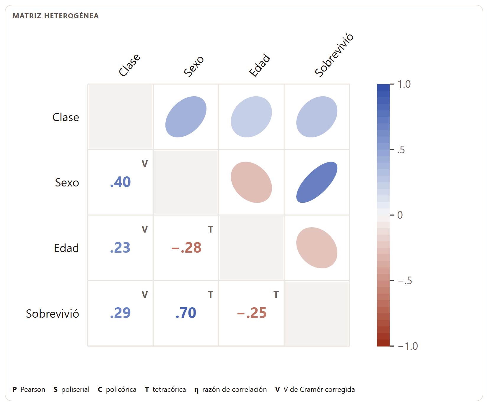
Figura 8.5. Las cuatro variables del Titanic: V de Cramér para la clase, que es nominal, y tetracóricas para los pares de binarias. La más fuerte es la del sexo con la supervivencia (.70).
Los botones de arriba eligen las variables, con su tipo al lado (al principio, las doce primeras). Como η y V no tienen signo, una nota recuerda que, mezcladas con las demás, no forman una matriz de correlación definida positiva: la matriz heterogénea sirve para describir. Para un análisis factorial de variables ordinales, lo indicado es una matriz sólo de policóricas.
✓Para leer el Bloque 8
Si hay frecuencias esperadas menores que 5…
informa el valor p exacto de Fisher (2 × 2) o el de Monte Carlo.
Si la tabla es de 2 × 2…
informa la razón de momios con su intervalo, y los porcentajes de cada grupo.
Si quieres predecir una variable a partir de la otra…
usa una medida asimétrica (λ, τ o U) en esa dirección.
Si las categorías tienen orden…
usa τ-b o la policórica; la V ignora el orden.
Si la tetracórica o la policórica salen muy distintas de φ o de la V…
recuerda que suponen una normal latente: di si esa suposición es razonable.
Son guías para interpretar, no leyes: lo que sabes del fenómeno, del diseño y de cómo se midió siempre manda.
9
Capítulo nueve · Bloque 9
Acuerdo y fiabilidad
A veces la pregunta no es si dos medidas se mueven juntas, sino si dicen lo mismo: dos instrumentos, dos métodos de laboratorio, varios evaluadores que califican los mismos casos. Para eso la correlación no sirve. Este bloque calcula la concordancia de Lin, el gráfico de Bland y Altman, los seis coeficientes intraclase, la κ con sus variantes y sus parientes, y la α de Krippendorff.
9.1Qué se compara
9.2Dos métodos: concordancia y Bland–Altman
9.3Varios evaluadores: los coeficientes intraclase
9.4Categorías: κ y sus parientes
9.1Qué se compara
Los datos van con una fila por caso y una columna por evaluador, instrumento o método. En Qué se compara se eligen dos o más columnas que midan lo mismo en los mismos casos.
Si todas las columnas elegidas son continuas, el bloque muestra la concordancia, el gráfico de Bland y Altman de las dos primeras y los coeficientes intraclase de todas. Si todas son categóricas (binarias, nominales u ordinales), muestra la κ y sus parientes; las columnas deben tener las mismas categorías, porque se comparan por su posición en la escala. Si se mezclan los dos tipos, un mensaje pide quitar los de un tipo.
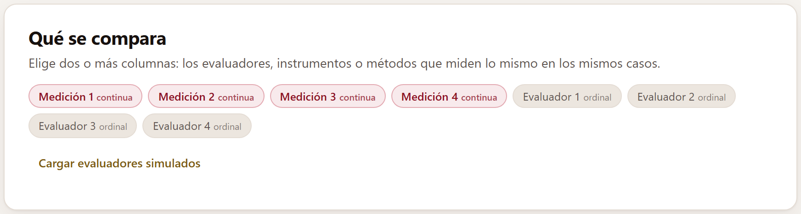
Figura 9.1. Los evaluadores simulados: 40 casos medidos con cuatro instrumentos, cada uno con su sesgo y su ruido, y calificados por cuatro evaluadores en cinco categorías. Son datos simulados, no reales; la app lo dice al cargarlos.
iLos dos ejemplos del bloque
Además de los Evaluadores simulados, el bloque ofrece un conjunto real: el sueño ganado por diez pacientes con dos fármacos (Cushny y Peebles 1905), los datos con los que Student presentó su prueba t. Sirve para comparar dos mediciones de los mismos pacientes, aunque con sólo diez casos.
9.2Dos métodos: concordancia y Bland–Altman
Con las dos primeras columnas, cinco cifras: el coeficiente de concordancia de Lin (CCC) con su intervalo; la r de Pearson y el factor de exactitud Cb, porque CCC = r × Cb; el sesgo medio (la diferencia promedio, con su prueba); los límites de acuerdo del 95 %, y el sesgo proporcional, la pendiente de la diferencia sobre el promedio.
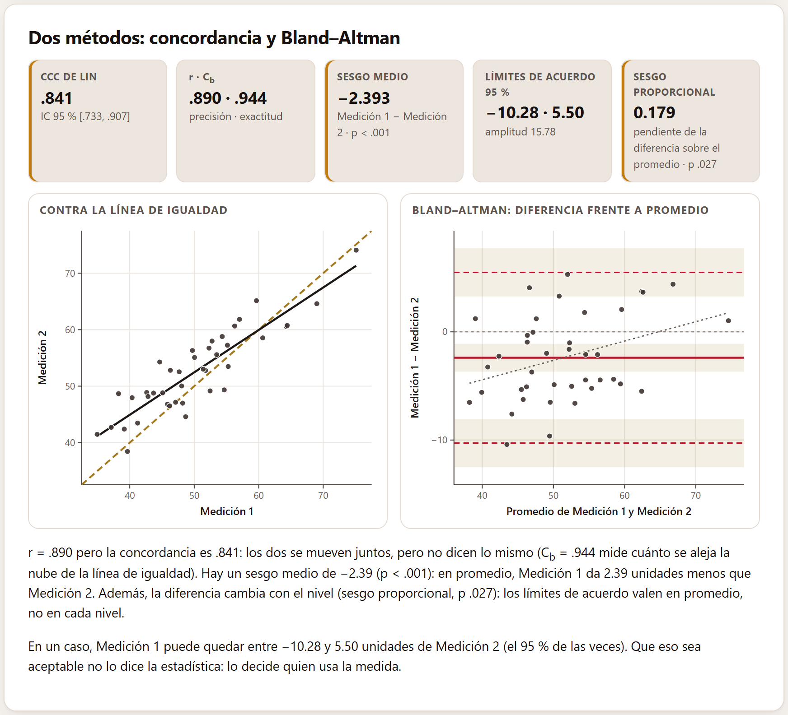
Figura 9.2. Dos instrumentos simulados: r = .890 pero CCC = .841. El primero da, en promedio, 2.39 unidades menos que el segundo (p < .001), y la diferencia crece con el nivel (pendiente 0.179, p = .027). En un caso cualquiera, el primero puede quedar entre −10.28 y 5.50 unidades del segundo.
A la izquierda, la nube contra la línea de igualdad (punteada): si los dos dijeran lo mismo, los puntos caerían sobre ella, no sólo sobre una recta. A la derecha, el gráfico de Bland y Altman: la diferencia de cada caso frente al promedio de los dos, con el sesgo medio (línea continua), los dos límites de acuerdo (punteadas), las franjas de sus intervalos de confianza y, si lo hay, la recta del sesgo proporcional. Debajo, la lectura dice si la concordancia se aparta de r, si hay sesgo medio o proporcional, y cuánto puede diferir un caso.
!Una r alta no es acuerdo
Dos instrumentos pueden correlacionar a .99 y diferir siempre en diez unidades, o uno dar el doble que el otro: r mide asociación, no acuerdo (Bland y Altman 1986). La concordancia de Lin penaliza los dos desvíos —de ubicación y de escala— y el gráfico de Bland y Altman muestra cuánto pueden diferir en un caso. Si esa diferencia es aceptable no lo decide la estadística: lo decide quien usa la medida, antes de ver los datos.
9.3Varios evaluadores: los coeficientes intraclase
El coeficiente de correlación intraclase (ICC) mide qué parte de la variación total se debe a las diferencias entre los casos y no a las de los evaluadores. Hay seis formas (McGraw y Wong 1996), y la tabla las da todas, con su intervalo, su prueba F y la lectura de Koo y Li (2016). La forma correcta la decide el diseño, no el resultado:
Tabla 9.1. Cómo elegir la forma del ICC
Si…
usa
cada caso lo califican evaluadores distintos, tomados al azar
unidireccional: ICC(1) o, para el promedio de k evaluadores, ICC(k)
los mismos evaluadores califican todos los casos, y basta con que los ordenen igual
bidireccional, consistencia: ICC(C,1) o ICC(C,k)
los mismos evaluadores califican todo, y deben dar el mismo número
bidireccional, acuerdo absoluto: ICC(A,1) o ICC(A,k)
en la práctica se usará la calificación de un solo evaluador
la forma de una medida (…,1)
en la práctica se usará el promedio de los evaluadores
la forma del promedio (…,k)
Figura 9.3. Los cuatro instrumentos simulados. La consistencia de una medida es buena (ICC(C,1) = .785), pero el acuerdo absoluto baja a moderado (ICC(A,1) = .667), porque los instrumentos tienen sesgos distintos. Promediando los cuatro, las dos formas pasan de .88. En la gráfica, cada línea es un caso a través de los cuatro instrumentos.
Debajo de la tabla, tres cifras más: los casos y evaluadores usados (sólo las filas completas), la W de Kendall, el acuerdo en el orden de los casos con su prueba χ², y la α de Krippendorff de intervalo, que admite calificaciones faltantes. La gráfica de perfiles pone cada caso como una línea a través de los evaluadores, coloreada por su promedio: si los evaluadores coinciden, las líneas son horizontales y no se cruzan.
Tabla 9.2. La lectura del ICC (Koo y Li 2016)
ICC
Fiabilidad
menos de .50
pobre
.50 a .75
moderada
.75 a .90
buena
más de .90
excelente
9.4Categorías: κ y sus parientes
Con columnas categóricas, la medida principal es la κ: el acuerdo observado corregido por el que se esperaría por azar. Con dos evaluadores es la κ de Cohen (1960) o, si las categorías son ordinales y hay más de dos, la ponderada cuadrática; con tres o más, la de Fleiss. La cifra trae la lectura de Landis y Koch (1977), el acuerdo observado y el esperado por azar, la AC1 de Gwet y la α de Krippendorff, ordinal o nominal según el tipo.
Figura 9.4. Los cuatro evaluadores simulados, en cinco categorías ordenadas. La κ de Fleiss es «leve» (.188): coinciden en la categoría exacta sólo el 35 % de las veces. Pero sus desacuerdos suelen ser de una o dos categorías, rara vez de más, y las medidas que usan el orden lo ven: κ cuadrática de los dos primeros .579, AC2 .608, α ordinal .548.
La tabla da todas las variantes, con su error estándar y su valor p cuando existen: la κ de Cohen de los dos primeros evaluadores, sin ponderar, con ponderación lineal y cuadrática; la κ de Fleiss y la exacta de Conger (con tres o más); la AC1 de Gwet y su versión ponderada AC2, y la α de Krippendorff nominal y ordinal. A la derecha, la tabla de acuerdo de los dos primeros evaluadores: la diagonal es el acuerdo exacto.
Tabla 9.3. La lectura de κ (Landis y Koch 1977)
κ
Acuerdo
menos de 0
pobre
0 a .20
leve
.21 a .40
aceptable
.41 a .60
moderado
.61 a .80
considerable
.81 a 1
casi perfecto
θTeoría en breve · las paradojas de κ
κ corrige el acuerdo por el azar, y el azar depende de las marginales. Con categorías muy desbalanceadas —casi todos los casos «sanos», por ejemplo— el acuerdo esperado por azar es alto y κ puede salir baja aunque los evaluadores coincidan casi siempre (Feinstein y Cicchetti 1990). La AC1 de Gwet (2008) calcula el azar de otra manera y es más estable en ese caso. La α de Krippendorff admite cualquier número de evaluadores, calificaciones faltantes y escalas nominales, ordinales, de intervalo o de razón (Hayes y Krippendorff 2007).
✓Para leer el Bloque 9
Si dos instrumentos correlacionan alto…
no digas que coinciden: informa la concordancia y los límites de acuerdo.
Si hay sesgo medio o proporcional…
corrígelo o descríbelo; los límites de acuerdo no bastan.
Si vas a informar un ICC…
di cuál de las seis formas, y por qué la pide tu diseño.
Si las categorías son ordinales…
informa una κ ponderada, la AC2 o la α ordinal, no la κ sin ponderar.
Si κ es baja pero el acuerdo observado es alto…
mira las marginales: puede ser la paradoja de κ; informa también la AC1.
Son guías para interpretar, no leyes: lo que sabes del fenómeno, del diseño y de cómo se midió siempre manda.
10
Capítulo diez · Bloque 10
Datos con estructura y datos especiales
La prueba de la r de Pearson supone filas independientes. Muchos datos no lo son: casos agrupados, sujetos medidos varias veces, años seguidos, parcelas vecinas, especies emparentadas. Y algunos números no son una recta: los ángulos dan la vuelta y los porcentajes suman cien. Este bloque reúne siete herramientas, una para cada uno de esos casos.
10.1Grupos y la paradoja de Simpson
10.2Medidas repetidas
10.3Series de tiempo
10.4Datos espaciales
10.5Especies emparentadas
10.6Datos circulares
10.7Composiciones
Cada tarjeta tiene sus propios menús, y casi todas un botón de ejemplo simulado: no hay conjuntos de dominio público para todos los casos, así que la app genera unos datos con la estructura justa para ver la herramienta. Al cargarlos, el título y un mensaje dicen que son simulados y no reales. Al cargar un ejemplo se reemplazan los datos abiertos; para volver a los tuyos, ábrelos de nuevo en el Bloque 2.
10.1Grupos y la paradoja de Simpson
Cuando los casos vienen de grupos distintos, hay tres correlaciones, no una: la de dentro de los grupos, la de entre sus medias y la de juntar todo, que mezcla las otras dos.
Se eligen X, Y y el Grupo. Cuatro cifras: la r juntando todo; la rdentro de los grupos, calculada con los datos centrados en las medias de su grupo, con n − K − 1 grados de libertad; la rentre las medias de los K grupos, y la prueba Q de que todos los grupos tienen la misma r (con la z de Fisher).
Figura 10.1. El sépalo de los lirios, el ejemplo con que abre el bloque. Dentro de cada especie la relación es positiva (.530); entre las medias de las especies, negativa (−.745), y juntando todo sale −.118. La recta punteada es la de todos juntos; los círculos grandes, las medias. La prueba Q (p = .060) no rechaza que las tres especies tengan la misma r.
La tabla da la r de cada grupo. La lectura avisa de la paradoja de Simpson cuando la relación dentro de los grupos tiene el signo contrario a la de juntar todo, y si no, recuerda que la r de todos juntos no describe a ninguno de los dos niveles cuando éstos se parecen poco.
!La pregunta decide cuál informar
Si la pregunta es sobre individuos —¿las flores de sépalo más largo lo tienen más ancho?—, la respuesta es la r de dentro. Si es sobre los grupos —¿las especies de sépalo más largo lo tienen más ancho?—, es la de entre las medias, con K casos, no con n. Sacar conclusiones sobre individuos con la correlación de los grupos es la falacia ecológica (Robinson 1950).
10.2Medidas repetidas
Cuando cada sujeto aporta varias filas, la r de siempre mezcla la relación dentro de los sujetos con las diferencias entre ellos, y además cuenta los grados de libertad como si cada fila fuera un sujeto nuevo. La correlación de medidas repetidas (Bakdash y Marusich 2017) usa sólo la variación dentro de cada sujeto, con una pendiente común para todos, y tiene N − k − 1 grados de libertad, con N filas y k sujetos.
Se eligen la columna del Sujeto —la que tenga papel de sujeto en el Bloque 2, o cualquiera con valores repetidos— y las dos variables. Las cifras son la correlación con su intervalo, los grados de libertad y la r ignorando a los sujetos, en rojo si tiene el signo contrario. La gráfica pone cada sujeto con su color y su recta, todas con la misma pendiente.
Figura 10.2. El ejemplo simulado: 12 estudiantes medidos 6 veces. Dentro de cada uno, más horas de estudio van con mejor calificación (.825, con 59 grados de libertad); ignorando a los sujetos, la relación sale al revés (−.956), porque los que estudian más son los que parten de calificaciones más bajas.
10.3Series de tiempo: correlación cruzada y preblanqueo
Dos series con tendencia o con memoria correlacionan aunque no tengan nada que ver: es la «correlación sin sentido» de Yule (1926). El preblanqueo (Box y Jenkins 1976) ajusta a X un modelo autorregresivo —el orden lo elige el criterio de Akaike—, filtra con él las dos series y sólo entonces las correlaciona, en cada retardo.
Se eligen X, Y y la columna por la que Ordenar por (si hay una con papel de tiempo, queda elegida; si no, el orden de las filas). Hacen falta al menos 12 tiempos. Las cifras son la r de las series, el modelo de X con sus coeficientes φ, la r preblanqueada en el retardo cero con su límite y el retardo más fuerte. Las dos gráficas dan la correlación en cada retardo k —con X adelantada k pasos—, antes y después del preblanqueo; la franja es el límite aproximado de ±2/√n, y las barras que lo pasan van en rojo.
Figura 10.3. El producto nacional y los empleados de Estados Unidos, 1947 a 1962. Sin preblanqueo, las dos series que crecen juntas correlacionan en cinco retardos; después, sólo en el cero (.844): la relación es del mismo año, y no se arrastra de un año al siguiente.
10.4Datos espaciales: la t modificada de Dutilleul
Si los lugares cercanos se parecen, hay menos información independiente que filas, y el valor p habitual es demasiado optimista. La prueba de Dutilleul (1993), que sigue a Clifford, Richardson y Hémon (1989), estima con la autocorrelación de cada variable —la I de Moran por clases de distancia— el tamaño de muestra efectivo: cuántos lugares independientes valen los datos.
Se eligen las dos variables y las dos coordenadas (si hay columnas con papel de coordenada, quedan elegidas). Las cifras son r, el valor p habitual, el tamaño efectivo (en ámbar si es menos de la mitad de los lugares) y el valor p de Dutilleul con su F. Se calcula hasta con 1 500 lugares. El mapa colorea los lugares por X; el correlograma da la I de Moran de cada variable por distancia: si empieza alta y baja, los lugares cercanos se parecen.
Figura 10.4. El ejemplo simulado: 100 parcelas con gradientes de humedad y rendimiento. La r de .781 parece contundente (p < .001), pero los datos valen sólo 7.7 lugares independientes, y el valor p corregido sube a .026.
Las especies comparten historia evolutiva: dos especies hermanas se parecen porque vienen del mismo antepasado, no porque sean dos observaciones independientes (Felsenstein 1985). Con el árbol filogenético, cada nodo interno da un contraste independiente: la diferencia entre sus dos ramas, estandarizada por la longitud de las ramas. La correlación de los contrastes, que pasa por el origen (Garland, Harvey e Ives 1992), es la que se prueba.
Se elige la Columna con los nombres de las especies, las dos variables y se pega el árbol en formato Newick, con longitudes de rama, en el recuadro; Calcular los contrastes hace la cuenta. Los nombres del árbol deben coincidir exactamente con los de la columna; si falta alguno, un mensaje dice cuáles.
Figura 10.5. El ejemplo simulado: dos rasgos que evolucionan juntos sobre un árbol de 30 especies. La r de las especies (.549) exagera; la de los 29 contrastes es .430, con 28 grados de libertad.
10.6Datos circulares
Ángulos, horas, días del año, meses: 359° y 1° están juntos, y Pearson no lo sabe. Para dos ángulos, la correlación circular–circular de Jammalamadaka y SenGupta (1988), con su prueba z; para un ángulo y una variable lineal, la circular–lineal de Mardia (1976), que ajusta a la variable una onda de seno y coseno del ángulo. Al lado, la r de Pearson «ingenua», para ver cuánto se equivoca.
El menú Ángulo ofrece las columnas de tipo circular del Bloque 2, con su unidad (grados, radianes, horas, día del año o mes); Con, otra circular o una continua.
Figura 10.6. El ejemplo simulado: la dirección del viento y la de la racha. Las parejas cerca de 0° y 360° (arriba a la izquierda y abajo a la derecha) son casi iguales, pero Pearson las ve como opuestas. La circular da .656 (p < .001).
iUn ángulo y una variable lineal
Con la temperatura en Con, el mismo ejemplo da la correlación circular–lineal: la temperatura sigue la dirección del viento con una onda, más alta cuando el viento viene de unos 210°. La gráfica pone la variable lineal frente al ángulo, con la onda ajustada.
10.7Composiciones: partes de un todo
Si las variables suman una constante —porcentajes, proporciones—, su correlación de Pearson es espuria por construcción (Pearson 1897): si una sube, otras tienen que bajar, y la media de las correlaciones tiende a ser negativa aunque las partes no se relacionen. Se trabaja con los log-cocientes centrados (Aitchison 1986) y con la proporcionalidad ρp (Lovell y colaboradores 2015; Erb y Notredame 2016).
El Bloque 2 detecta solo los grupos de columnas contiguas que suman una constante en cada fila; el menú Grupo composicional los ofrece. Las tres matrices comparan la Pearson de las partes, la Pearson de los log-cocientes centrados y la proporcionalidad.
Figura 10.7. El ejemplo simulado: arena, limo y arcilla que suman 100 %, generados de manera independiente antes de cerrarlos a 100. Las tres Pearson de las partes son negativas sólo por la suma constante. El carbono orgánico, que también está en los datos, no forma parte del grupo.
θTeoría en breve · la proporcionalidad
Dos partes son proporcionales si su cociente es casi constante de una muestra a otra. Con a y b los log-cocientes centrados de dos partes, ρp = 1 − var(a − b)/(var(a) + var(b)); vale 1 con proporcionalidad perfecta, y como a − b es el logaritmo del cociente de las dos partes, no depende de cómo se cerró la composición. Con sólo tres partes, ninguna medida escapa del todo al cierre: con más partes, los log-cocientes centrados se acercan a lo que cada parte hace por sí misma.
✓Para leer el Bloque 10
Si hay grupos…
informa la r de dentro o la de entre, según la pregunta; nunca sólo la de juntar todo.
Si cada sujeto aporta varias filas…
usa la correlación de medidas repetidas, con N − k − 1 grados de libertad.
Si los datos son series de tiempo…
preblanquea antes de concluir; una r alta entre dos tendencias no dice nada.
Si los lugares cercanos se parecen…
informa el tamaño efectivo y el valor p de Dutilleul.
Si los casos son especies…
usa los contrastes independientes con un árbol publicado.
Si una variable es un ángulo o las partes suman 100…
usa la correlación circular o los log-cocientes; Pearson engaña por construcción.
Son guías para interpretar, no leyes: lo que sabes del fenómeno, del diseño y de cómo se midió siempre manda.
11
Capítulo once · Bloque 11
Redes de correlación
Una matriz grande se lee mejor como una red: cada variable es un nodo y cada relación, una arista. Este bloque arma la red con correlaciones o con parciales —con o sin regularización—, la dibuja de cinco maneras que se transforman una en otra, mide quién está en el centro y encuentra las comunidades: los grupos de variables que se relacionan más entre sí que con las demás.
11.1Qué red
11.2La red y sus cinco vistas
11.3Centralidades y comunidades
11.1Qué red
Entran las variables numéricas con papel de variable; al abrir unos datos quedan elegidas las cuarenta primeras. Hacen falta al menos tres, y la red usa sólo las filas completas en todas.
Figura 11.1. Suiza, 1888, el ejemplo con que abre el bloque: seis variables, la red de parciales regularizadas, Pearson y γ = 0.5.
Aristas decide qué relaciones se dibujan; Coeficiente, si se parte de Pearson o de Spearman.
Tabla 11.1. Las cuatro maneras de armar la red
Aristas
Qué se dibuja
Parciales regularizadas (la de omisión)
las correlaciones parciales del lazo gráfico (Friedman, Hastie y Tibshirani 2008), que pone en cero las débiles; cuántas, lo elige el criterio EBIC (Foygel y Drton 2010) con su γ del EBIC: 0.5 da la red más escasa, 0 es el BIC
Parciales significativas
las correlaciones parciales —cada par quitando a todas las demás— cuyo valor p, corregido por Holm, es menor que .05
Correlaciones con |r| ≥ umbral
las correlaciones marginales que pasan el Umbral |r|, de .05 a .90
Correlaciones significativas
las correlaciones marginales significativas con la corrección de Holm
Si la matriz no es definida positiva, las dos redes de parciales usan la más cercana (sección 5.5) y un mensaje lo dice. Con menos de tres filas completas por variable, otro mensaje avisa que la red es inestable. Con más de 25 variables, el lazo gráfico recorre sus 100 penalizaciones con una espera.
!Marginal o parcial: dos redes distintas
En una red de correlaciones marginales casi todo se conecta con todo, porque muchas variables comparten una causa común. Las parciales muestran sólo las relaciones que quedan al controlar por todas las demás variables: una arista quiere decir «se relacionan aun sabiendo todo lo demás». Las dos son útiles, pero responden preguntas diferentes, y el informe debe decir cuál se dibujó.
11.2La red y sus cinco vistas
El título dice cuántos nodos y aristas tiene la red y cómo se armó (con la λ del lazo elegida). El grosor de cada arista es su |peso|, y su color, el signo: azul para las positivas y rojo para las negativas, en la paleta del Bloque 1. El tamaño de cada nodo es su fuerza y su color, su comunidad; los nodos sin aristas van en gris.
Figura 11.2. Suiza, 1888: 11 aristas de 15 posibles (λ = 0.065). Con un clic en la educación, sus aristas quedan resaltadas y la línea de abajo da sus vecinos con su peso: fecundidad −.37, examen .33, agricultura −.30 y católicos .24.
Al pasar el puntero sobre un nodo se resaltan sus aristas y sus vecinos; un clic lo deja fijo y escribe debajo su comunidad, su fuerza y sus vecinos ordenados por peso. Los botones de arriba cambian la vista, y el cambio es animado: cada nodo y cada arista viajan a su lugar nuevo.
Fuerzas: los nodos se acomodan como si las aristas fueran resortes (Fruchterman y Reingold 1991): los muy relacionados quedan cerca.
Círculo: los nodos en una circunferencia, ordenados por comunidad.
Cuerdas agrupadas: el mismo círculo, con las aristas curvadas hacia el centro de su comunidad: las relaciones entre comunidades se ven como haces.
Arcos: los nodos en una línea, con las aristas como arcos encima.
Matriz: los pesos como celdas de color, en el orden de las comunidades.
▶ Recorrido: matriz → red → cuerdas pasa por la matriz, las fuerzas, el círculo y las cuerdas, una tras otra, para ver que son la misma información dibujada de cuatro maneras.
Figura 11.3. La misma red, como cuerdas agrupadas.Figura 11.4. La red marginal con |r| ≥ .30, en círculo.
Las dos figuras de arriba muestran la diferencia de la sección anterior. En la marginal, la agricultura y la fecundidad están unidas (r = .35); en la de parciales regularizadas esa arista no está, porque la correlación pasa por la educación.
11.3Centralidades y comunidades
Cuatro cifras resumen la red: las aristas con la densidad (la parte de las aristas posibles que hay), las comunidades con su modularidad Q, el nodo más fuerte y las filas usadas. La tabla da, para cada nodo, ordenados por fuerza, cinco centralidades, y la gráfica de abajo, su fuerza relativa a la del más fuerte, en el color de su comunidad.
Figura 11.5. La educación y el examen son los nodos más fuertes; la mortalidad infantil, el más débil. La modularidad es baja (Q = 0.078): con seis variables tan relacionadas, las dos comunidades apenas se separan.
Tabla 11.2. Las centralidades
Centralidad
Qué mide
Grado
cuántas aristas tiene el nodo
Fuerza
la suma de los |pesos| de sus aristas: la más estable y la más usada
Influencia esperada
la suma de los pesos con su signo: si es negativa, el nodo frena más de lo que impulsa a sus vecinos
Cercanía
lo cerca que está de todos los demás, con caminos de longitud 1/|peso| (Opsahl, Agneessens y Skvoretz 2010)
Intermediación
cuántos caminos más cortos entre otros nodos pasan por él (Brandes 2001)
Las comunidades maximizan la modularidad (Newman 2006) con el método de Louvain (Blondel y colaboradores 2008): la red se parte en grupos de nodos con más aristas dentro que entre ellos. Una modularidad cerca de cero dice que la partición apenas se distingue de una al azar.
θTeoría en breve · cuánto creerle a una red
Una red estimada con pocas filas cambia mucho de una muestra a otra: aristas débiles aparecen y desaparecen, y el orden de las centralidades se mueve. La fuerza es la centralidad más estable; la cercanía y la intermediación, las menos (Epskamp y Fried 2018). Con muchas variables y pocas filas, el lazo gráfico con γ = 0.5 es conservador a propósito: prefiere perder una arista débil que inventar una.
✓Para leer el Bloque 11
Si la pregunta es qué se relaciona directamente…
usa una red de parciales, regularizada si hay muchas variables.
Si hay pocas filas por variable…
interpreta sólo las aristas fuertes y la fuerza; no la intermediación.
Si la modularidad es baja…
no hables de grupos de variables: las comunidades no se distinguen.
Si vas a publicar la red…
di cómo se armaron las aristas, el coeficiente, la γ del EBIC o el umbral, y cuántas filas se usaron.
Son guías para interpretar, no leyes: lo que sabes del fenómeno, del diseño y de cómo se midió siempre manda.
12
Capítulo doce · Bloque 12
Comparar, corregir, planear y combinar
Las preguntas que vienen después de calcular una correlación: ¿es distinta de otra?, ¿la estructura de dos grupos es la misma?, ¿cuánto valdría sin el error de medida o sin la selección de los casos?, ¿cuántos casos hacen falta?, ¿qué dicen todos los estudios juntos? Casi todo este bloque funciona sin datos abiertos: basta con escribir las cifras publicadas.
12.1Comparar dos correlaciones
12.2Comparar dos matrices
12.3Corregir por atenuación y por rango
12.4Potencia y tamaño de muestra
12.5El factor de Bayes de una r publicada
12.6Metaanálisis
El bloque tiene cinco secciones, que se eligen con los botones de arriba: Comparar dos correlaciones, Comparar matrices, Corregir, Potencia y tamaño de muestra y Metaanálisis. Cada una se calcula en cuanto se cambia un número.
12.1Comparar dos correlaciones
¿La correlación es mayor en un grupo que en otro, o una variable predice mejor que otra? La prueba correcta depende del diseño, y elegir la equivocada es uno de los errores más comunes al comparar correlaciones.
Dos grupos independientes: la misma correlación en dos muestras distintas. Se escriben r y n de cada grupo.
Mismos casos, una variable en común: rjk frente a rjh, por ejemplo, si el examen se relaciona más con la nota final o con la asistencia. Hace falta además rkh, la correlación entre las otras dos.
Mismos casos, sin variable en común: rjk frente a rhm, con las cuatro correlaciones cruzadas.
Además se eligen la Hipótesis alternativa (distintas, o una mayor que la otra) y la Confianza del intervalo. Tomarlas de los datos abiertos calcula las correlaciones de las variables y los grupos que se elijan; Ejemplo: iris por especie compara el sépalo y el pétalo de dos especies.
Figura 12.1. El ejemplo de los lirios: la correlación del largo del sépalo con el largo del pétalo en setosa (.267) y en versicolor (.754), 50 flores cada una.
El resultado da la diferencia, el intervalo de Zou (2007) para esa diferencia —que dice cuánto difieren, no sólo si difieren— y la prueba recomendada para el diseño. La tabla da todas las pruebas que se aplican, con la recomendada marcada, y la gráfica pone las dos correlaciones con sus intervalos y la diferencia con el suyo.
Figura 12.2. La diferencia es −.487, con intervalo [−.783, −.202]: en versicolor la relación es claramente más fuerte (z = −3.43, p < .001).Figura 12.3. Con una variable en común (los valores de omisión: rjk = .50, rjh = .30, rkh = .40, n = 100) hay nueve pruebas, de 1898 a 2003. Coinciden aquí, pero pueden diferir con n pequeña y correlaciones grandes.
Tabla 12.1. Las pruebas recomendadas para cada diseño
Diseño
Recomendada
dos grupos independientes
la diferencia de las z de Fisher (1925)
una variable en común
la t de Williams (1959) y la z de Hittner, May y Silver (2003)
sin variable en común
la de Silver, Hittner y May (2004) y la de Raghunathan, Rosenthal y Rubin (1996)
✕Error frecuente · tratar como independientes dos correlaciones de los mismos casos
Si las dos correlaciones salen de los mismos sujetos, están correlacionadas entre sí, y la prueba de grupos independientes da un valor p equivocado: casi siempre demasiado grande, cuando las variables se relacionan positivamente. Y que una correlación sea significativa y la otra no, no prueba que sean distintas: eso lo dice sólo la prueba de su diferencia.
12.2Comparar dos matrices
¿Las variables se relacionan igual en dos grupos? Se eligen la Columna de grupo, los dos grupos, el coeficiente y, con los botones, las variables. La prueba de Jennrich (1970) compara las dos matrices completas con una χ² que toma en cuenta que las correlaciones de una matriz dependen unas de otras. Después, cada celda se compara por separado con la z de Fisher y la corrección de Holm.
Figura 12.4. Setosa frente a versicolor: las matrices son distintas (χ² = 30.95 con 6 grados de libertad, p < .001), y tres de las seis correlaciones difieren después de corregir. En la matriz de la diferencia, las celdas tenues no son significativas.
iPor qué no basta con sumar las celdas
Sumar las z² de cada celda sólo da una χ² cuando todas las correlaciones son casi cero. Con variables correlacionadas rechaza de más —en la simulación de la validación de este bloque, 11 % de las veces en lugar de 5 %—, y por eso aquí las celdas sirven para leer dónde está la diferencia, no para decidir si la hay. Con Spearman la prueba de Jennrich es aproximada, y un mensaje lo dice.
12.3Corregir por atenuación y por rango
Dos razones por las que una correlación observada puede quedarse corta, y sus correcciones clásicas.
Atenuación. Si las dos medidas tienen error, la correlación observada subestima la de los valores verdaderos. La corrección de Spearman (1904) divide entre la raíz del producto de las fiabilidades —una α, una prueba-reprueba o un ICC del Bloque 9—. Las cifras son la r corregida, el techo de la r observable (ninguna r observada puede pasarlo) y la parte de la correlación que se lleva el error de medida.
rcorregida = r / √(rxx · ryy)
Rango restringido. Si sólo se observaron casos con valores de x dentro de un intervalo —los admitidos, los sobrevivientes, los seleccionados—, la correlación sale más baja que en la población completa. El caso II de Thorndike (1949) corrige la selección directa sobre x, con U, el cociente de la desviación estándar sin restricción entre la restringida; el caso III, la selección sobre una tercera variable z, con sus dos correlaciones.
Figura 12.5. Los valores de omisión. Una r de .42 con fiabilidades de .80 y .70 vale .561 entre las puntuaciones verdaderas: el error se lleva el 25 %. Una r de .30 en una muestra con desviación estándar de 6, cuando la de la población es 10, vale .464 sin la restricción.
La gráfica de la corrección del caso II, debajo de las cifras, muestra cómo crece la r corregida con U para varias r observadas, con la tuya en rojo y su punto: la corrección es mayor cuanto más fuerte fue la selección.
!Corregir no crea información
Las dos correcciones suponen una relación lineal y homocedástica, y que la selección fue la que se dice. Una corrección mayor que 1 indica que alguna fiabilidad está subestimada o que los errores no son independientes. Y el intervalo corregido es el observado transformado con la misma fórmula: más ancho en la misma proporción (Hunter y Schmidt 2004; Sackett y Yang 2000). Informa siempre la r observada junto a la corregida.
12.4Potencia y tamaño de muestra
Antes de reunir los datos: con la ρ esperada y la n de los dos deslizadores, la α y la Prueba (dos colas o una), el bloque da cuatro cifras:
la potencia exacta con esa n, y la aproximada;
la n para la potencia deseada (80, 90 o 95 %), exacta y aproximada;
la n para un intervalo de la semiamplitud deseada (de ±0.05 a ±0.20), con el intervalo que se espera;
la r crítica: la menor |r| que sería significativa con esa n.
Figura 12.6. Con ρ = .30 y 50 casos, la potencia es sólo del 57.2 %; para el 80 % hacen falta 84. Pero para estimar ρ con un intervalo de ±.10 hacen falta 320. A la izquierda, la distribución exacta de r sin relación y con ρ = .30; la parte sombreada es la potencia. A la derecha, la potencia según n para cuatro ρ.
θTeoría en breve · exacta y aproximada
La potencia exacta integra la densidad de r cuando la correlación verdadera es ρ (Fisher 1915; Hotelling 1953) sobre la región donde la prueba t rechaza; la aproximada usa la z de Fisher con una corrección del sesgo y se aparta unas milésimas con n pequeña. Con ρ = 0 la potencia exacta es α, como debe ser. Planear por la amplitud del intervalo, y no sólo por la potencia, garantiza una estimación útil aunque el efecto resulte pequeño (Bonett y Wright 2000).
12.5El factor de Bayes de una r publicada
Con sólo la r y la n de un artículo se obtiene la evidencia a favor de que hay correlación frente a que no la hay, con la misma a priori del Bloque 4 (sección 4.6) y su ancho κ. Las cifras son BF10 con su palabra, BF01, el unilateral BF+0 (ρ > 0) y la ρ a posteriori con su intervalo creíble.
Figura 12.7. Una r de .25 con 60 casos queda en el límite de la significancia: p = .054 a dos colas y .027 a una. Su factor de Bayes es de 1.60, evidencia anecdótica; el unilateral, 3.10, apenas moderada.
12.6Metaanálisis
Combina las correlaciones de varios estudios. Se escribe un estudio por renglón —nombre; r; n, separados por punto y coma o tabulador— o se toman de columnas de los datos abiertos con Usar columnas de los datos. Las correlaciones se combinan en la escala z de Fisher, con varianza 1/(n − 3). El Modelo puede ser de efectos aleatorios —con REML (la de omisión), DerSimonian–Laird o Hunter–Schmidt— o de efecto fijo.
Figura 12.8. El ejemplo, que carga el botón Ejemplo simulado: 16 estudios: estudios generados alrededor de una correlación verdadera de .25, con heterogeneidad entre ellos (τ = 0.10 en la escala z) y de 40 a 800 casos cada uno. No son datos reales, y la app lo dice al cargarlos.
Cinco cifras resumen el resultado: la r combinada con su intervalo y su valor p; el intervalo de predicción, dónde caería la ρ de un estudio nuevo; la heterogeneidad τ e I² con la prueba Q; la prueba de asimetría de Egger, y la r de Hunter y Schmidt con la parte de la varianza que explica el error de muestreo.
Figura 12.9. Los 16 estudios dan r = .261 [.205, .315] —el intervalo contiene la .25 con que se simularon—, pero son heterogéneos (I² = 70.8 %), y un estudio nuevo podría encontrar desde .073 hasta .431. En el bosque, el tamaño de cada cuadro es su peso; el rombo es la combinada y la franja dorada, el intervalo de predicción.
Debajo, el embudo pone cada estudio por su efecto y su error estándar: sin sesgo, los estudios forman un triángulo simétrico alrededor del efecto combinado. La recta de Egger mide la asimetría. A su lado, la lectura en palabras, y abajo, la tabla con los cuatro modelos lado a lado y el resumen de Hunter y Schmidt.
Figura 12.10. El embudo no muestra asimetría (p = .118). Los tres modelos de efectos aleatorios dan casi la misma r (de .259 a .261); el de efecto fijo da .236 y un intervalo más estrecho, porque ignora la heterogeneidad y pesa más a los estudios grandes.
θTeoría en breve · efecto fijo, efectos aleatorios y heterogeneidad
El efecto fijo supone que todos los estudios estiman la misma ρ; los efectos aleatorios, que cada uno estima la suya, alrededor de un promedio, con varianza τ² (DerSimonian y Laird 1986; Viechtbauer 2005). Q prueba si hay heterogeneidad; I² dice qué parte de la variación entre estudios no es azar (Higgins y Thompson 2002); el intervalo de predicción (Higgins, Thompson y Spiegelhalter 2009) suele ser mucho más ancho que el de confianza. La prueba de Egger y colaboradores (1997) busca asimetría, que puede venir del sesgo de publicación o de que los estudios pequeños son distintos; con pocos estudios tiene poca potencia.
✓Para leer el Bloque 12
Si las dos correlaciones son de los mismos casos…
usa la prueba para muestras dependientes, nunca la de grupos independientes.
Si una correlación es significativa y la otra no…
compáralas: eso no prueba que sean distintas.
Si corriges por atenuación o por rango…
informa la r observada, la corregida y las fiabilidades o las desviaciones usadas.
Si planeas un estudio…
planea por la potencia y por la amplitud del intervalo, y toma la ρ esperada de estudios previos, no de la que te gustaría.
Si los estudios son heterogéneos…
usa efectos aleatorios e informa el intervalo de predicción, no sólo el de confianza.
Son guías para interpretar, no leyes: lo que sabes del fenómeno, del diseño y de cómo se midió siempre manda.
13
Capítulo trece · Bloque 13
Figuras, paletas e informe
El final del camino: lo que se lleva al artículo o a la tesis. Este bloque reúne todas las figuras que dibujaron los demás y las exporta al tamaño de una revista, diseña una paleta propia y la pone a prueba, arma la tabla de correlaciones para publicar, redacta los métodos con lo que de verdad se calculó, junta las referencias, prepara un informe para imprimir y guarda el proyecto completo para retomarlo otro día.
13.1Las figuras que has hecho
13.2El estudio de figuras
13.3Diseñar una paleta
13.4La tabla para publicar
13.5Los métodos y las referencias
13.6El informe y el proyecto
Como el Bloque 12, éste tiene cinco secciones que se eligen con los botones de arriba: Figuras, Diseñar una paleta, Tabla para publicar, Métodos y referencias y Proyecto e informe. Todo lo que muestran sale de lo que se calculó en esta sesión: si un bloque no se abrió, no aparece.
13.1Las figuras que has hecho
Cada figura que dibujaron los bloques aparece aquí como una tarjeta, con su título y el bloque de donde viene.
Cada tarjeta tiene dos controles: En el informe, que la marca para incluirla en el informe de la sección 13.6, y Exportar, que la abre en el estudio de figuras. Arriba, Letra de las figuras elige la familia de letra de todas las figuras de la app: Sin serifa (la del sistema), Con serifa o Monoespaciada; la letra es la del equipo, sin descargar nada.
Figura 13.1. Las primeras ocho tarjetas de una sesión con los lirios en los Bloques 2 a 5. La galería sigue con las del Bloque 4 (la nube, los rangos, los intervalos, el bootstrap, la permutación, el factor de Bayes) y las del Bloque 5.
13.2El estudio de figuras
Exportar abre la figura en el estudio de figuras, el mismo en todas las aplicaciones de la suite: la figura en el centro, a su tamaño real, y los controles a la derecha. También se abre desde cualquier bloque, con el botón del lápiz y la regla que aparece en la esquina de cada figura.
Figura 13.2. La matriz de dispersión de los lirios en el estudio. Debajo de la figura, su tamaño final (85 × 83.5 mm a 600 puntos por pulgada, 2 008 × 1 972 píxeles); a la derecha, los ajustes, la edición fina y las paletas.
Tamaño: los anchos de revista —una columna (85 mm), una y media (114 mm) y dos (180 mm)— o uno libre, y la resolución. El estudio avisa si alguna letra queda por debajo de los 7 puntos al tamaño final.
Formato: PNG, SVG, PDF vectorial con letras estándar, y TIFF para las revistas que lo piden. Exportar descarga el archivo; nada sale del equipo.
Edición fina: título, subtítulo y nota al pie dentro de la figura; la letra, su tamaño y color; el grosor de las líneas y el tamaño de los puntos; el fondo y el marco, y en sus pestañas, los ejes y la rejilla, las series, la leyenda —su lugar, dentro o fuera— los textos y las anotaciones. Copiar el estilo a todas las figuras aplica lo mismo a las demás.
Paleta y color: la de la figura u otra de las paletas de la app, incluida la propia de la sección 13.3. Si la app está en modo oscuro, la figura se puede exportar con los colores del modo claro.
En la figura, un clic lleva a la sección de controles de esa parte y un doble clic en un texto lo deja cambiar. Preajustes aplica combinaciones de ajustes de un clic y guarda las propias, y las flechas de arriba deshacen y rehacen.
13.3Diseñar una paleta
Una paleta divergente para las correlaciones: un tono para las positivas y otro para las negativas, que se encuentran en un centro claro. Se construye en OKLab, un espacio de color donde distancias iguales se ven iguales, así que el color crece al mismo paso que |r|. Los controles son el Tono de r positiva y el Tono de r negativa (en grados del círculo de color), la Luminosidad de los extremos, el Croma (intensidad), el Nombre y, para partir de una de la app, Empezar desde.
Figura 13.3. Una paleta de azul a rojo que pasa las cinco pruebas. Las rampas la muestran como la ven las personas con las tres formas comunes de daltonismo y como queda impresa en gris; a la derecha, la matriz de los lirios dibujada con ella.
Tabla 13.1. Las cinco pruebas de una paleta
Prueba
Qué asegura
Cabe en la pantalla (sRGB)
que todos sus colores se pueden mostrar sin recortarse
Pasos uniformes
que cada paso de |r| cambia el color lo mismo (la ΔE entre pasos)
El signo se distingue con daltonismo
que con protanopía, deuteranopía y tritanopía una r de .25 y una de −.25 todavía se distinguen
Simétrica en gris
que impresa en blanco y negro, r y −r tienen la misma luminosidad
Contraste con el fondo ≥ 3:1
que los extremos se leen sobre el fondo claro y el oscuro
Buscar el mejor tono para r negativa prueba los tonos posibles y elige el que mejor separa el signo con daltonismo, dejando fijo el de las positivas; Invertir el sentido intercambia los dos. Usar en toda la app la vuelve la paleta de todas las matrices, redes y figuras; queda guardada en el navegador y viaja en el paquete del proyecto.
13.4La tabla para publicar
La tabla clásica de correlaciones, con más opciones que la del Bloque 5. Se eligen las variables con los botones y, en los menús, el Coeficiente (Pearson, Spearman o Kendall), la Significancia (asteriscos, el intervalo del 95 % o el valor p debajo de cada r, o nada), la Corrección por pruebas múltiples (ninguna, Holm, Benjamini–Hochberg o Bonferroni), los Decimales, el Estilo de los números —el mismo de la sección 1.7, que vale para toda la app— y los Descriptivos (media y DE, mediana y rango intercuartílico, o ninguno).
Figura 13.4. Los lirios en el estilo de las ciencias sociales: título, medias, desviaciones, la mitad inferior de la matriz y la nota con el n y el significado de los asteriscos.
Copiar para el procesador de textos la deja en el portapapeles como tabla con formato: al pegarla en un procesador de textos conserva sus columnas, sus líneas y sus cursivas. Descargar CSV y Descargar HTML la guardan como archivo.
13.5Los métodos y las referencias
La app redacta la sección de métodos con lo que de verdad se calculó en esta sesión: un párrafo por bloque usado, con los coeficientes, las pruebas, las correcciones, los ajustes elegidos —el número de remuestreos, la a priori, el manejo de faltantes— y la cita de cada método. Al final van los resultados principales en una lista y la versión de la app.
Figura 13.5. Los métodos de la sesión de los lirios: los datos, los supuestos del Bloque 3, el par del Bloque 4 y la matriz del Bloque 5, con sus resultados principales.
Copiar los métodos los deja en el portapapeles; Volver a redactar los rehace después de cambiar algo en otro bloque. Debajo, Referencias de los métodos usados da, en orden alfabético y en el formato de las ciencias sociales, sólo las obras que se citaron en los métodos, y Copiar las referencias las deja listas para pegar.
!Revisa siempre el texto
La app escribe qué hizo, no por qué. Por qué elegiste ese coeficiente, por qué esas variables de control o esa corrección es algo que sólo tú sabes, y un revisor lo va a preguntar. Usa el texto como punto de partida: corrígelo, quita lo que no uses y explica tus decisiones.
13.6El informe y el proyecto
El informe es un documento con los datos usados, los resultados de cada bloque, la tabla, las figuras marcadas en la sección 13.1, los métodos y las referencias, siempre con los colores del modo claro. Se le da un Título y, si se quiere, la Autoría; una línea dice qué va a incluir. Abrir el informe para imprimir lo abre en una pestaña nueva, desde donde se imprime o se guarda como PDF; Descargar el informe (HTML) lo guarda como página.
Figura 13.6. El informe, con su título propuesto a partir de los datos, y el paquete del proyecto.
El paquete del proyecto es un archivo .correlationpro.json con los datos tal como se leyeron, el tipo y el papel de cada columna, las columnas transformadas, el manejo de faltantes, la paleta —también la propia— y el estilo de los números. Guardar el proyecto lo descarga; Abrir un proyecto lo lee y recalcula los bloques con esos datos. Es la manera de retomar un análisis otro día, de mandárselo a un colega o de guardarlo junto al artículo.
iNada sale de tu equipo
La app no envía los datos a ningún lado: todo se calcula en el navegador, y el informe, las figuras, la tabla y el proyecto se guardan como archivos en tu equipo. Por eso funciona sin conexión, y por eso, si cierras la pestaña sin guardar el proyecto, el análisis no se conserva.
✓Antes de entregar
Si la revista pide un ancho…
exporta las figuras a ese ancho y revisa el aviso de las letras pequeñas.
Si la figura va a imprimirse en gris…
usa una paleta que pase la prueba de simetría en gris.
Si copias la tabla…
revisa que el estilo de los números sea el de la revista.
Si usas los métodos redactados…
agrega por qué elegiste cada método y quita lo que no informes.
Siempre…
guarda el paquete del proyecto: es la prueba de cómo se obtuvo cada número.
Son guías para interpretar, no leyes: lo que sabes del fenómeno, del diseño y de cómo se midió siempre manda.
A
Apéndices
Apéndices
Lo que conviene tener a la mano y no cabía en ningún capítulo: qué archivos lee y escribe la app, todas las reglas de lectura de los trece bloques reunidas en un solo lugar, el vocabulario, qué hacer cuando algo no sale, las 229 referencias del catálogo y la licencia de la herramienta con la manera de citarla.
ALos archivos que la app lee y escribe
BLas reglas de lectura, reunidas
CGlosario
DCuando algo no sale
ELa herramienta: licencia y cómo citarla
FReferencias
ALos archivos que la app lee y escribe
CorrelationPro corre en el navegador y no manda nada a ningún servidor: todo lo que entra y sale son archivos de tu equipo o el portapapeles. Este apéndice dice cuáles.
A.1 · Lo que lee
Formato
Dónde y para qué
Texto delimitado .csv .tsv .txt .dat
Bloque 2. Detecta el separador (coma, punto y coma, tabulador o barra), el decimal y la codificación, y dice qué eligió.
Libro de hoja de cálculo .xlsx .xlsm .ods
Bloque 2, con un lector propio. Si el libro tiene varias hojas con datos, pregunta cuál abrir.
Celdas copiadas
Bloque 2, con Pegar: lo que se copia de una hoja de cálculo.
Árbol en formato Newick
Bloque 10, pegado en el recuadro de los contrastes independientes, con longitudes de rama.
Lista de estudios
Bloque 12, escrita o pegada: un estudio por renglón con su nombre, su r y su n.
Proyecto .correlationpro.json
Bloque 13, con Abrir un proyecto: los datos y los ajustes de una sesión anterior.
A.2 · Lo que escribe
Archivo
Qué sale y desde dónde
Los datos.csv
Bloque 2, con Descargar CSV: la tabla tal como está, con las columnas transformadas.
La matriz.csv
Bloque 5: un renglón por par con r, el p sin corregir, el corregido y el n.
La tabla para publicar
Bloque 5, copiada con tabuladores; Bloque 13, copiada con formato para el procesador de textos o descargada como .csv y .html.
Las figuras
El estudio de figuras: .png, .svg, .pdf vectorial y .tiff.
Los métodos y las referencias
Bloque 13, al portapapeles, listos para pegar.
El informe.html
Bloque 13: se abre para imprimir o guardar como PDF, o se descarga.
El proyecto.correlationpro.json
Bloque 13: los datos, los tipos y papeles, los faltantes, la paleta y el estilo de los números.
iLo que el navegador recuerda
Las preferencias —el idioma, el modo claro u oscuro, la paleta, el estilo de los números, la letra de las figuras, la paleta propia— se guardan en el almacenamiento del navegador, en tu equipo. Los datos no: se pierden al cerrar la pestaña, salvo que guardes el proyecto.
BLas reglas de lectura, reunidas
Las escalas y los cortes que la app usa para poner una palabra o un color junto a un número, en un solo sitio, para citarlos y discutirlos.
!Casi todos estos cortes son costumbres, no leyes
El .05 de la significancia, el .30 de una correlación «mediana», el .60 del KMO o el 3 del factor de Bayes son convenciones de lectura, no umbrales que salgan de una teoría. Úsalos para orientarte y di siempre cuál usaste; lo que sabes del fenómeno manda sobre cualquier tabla.
muy débil < .20 ≤ débil < .40 ≤ moderada < .60 ≤ fuerte < .80 ≤ muy fuerte
Gignac y Szodorai (2016)
muy pequeña < .10 ≤ pequeña < .20 ≤ típica < .30 ≤ grande
B.2 · Exploración y supuestos (Bloque 3)
Cantidad
Corte y lectura
Valor p de Shapiro–Wilk
≥ .05 «parece normal»; menor, «no normal» (en rojo si < .01)
Asimetría g1 · curtosis g2
|g1| > 1 o |g2| > 2 importan para la prueba de r
Con más de 300 datos
p < .05 sin asimetría ni curtosis grandes: «se aparta poco»
Curvatura · abanico
señal si el término cuadrático o Breusch–Pagan dan p < .01
Influencia de un punto
señal si |Δr| pasa de máx(0.02, (1 − r²)/√(n − 1))
Pocos valores
diez valores distintos o menos: τ-b en lugar de ρ
r frente a ρ
si difieren en 0.1 o más, ρ
No monótona
dCor > |ρ| + 0.25
Grupos
Simpson si en la mitad de los grupos la r tiene el signo contrario con |r| ≥ .3; efecto de grupos si la r media dentro difiere en 0.3 o más
Atípico multivariado
distancia de Mahalanobis² mayor que el cuantil 0.975 de χ² con p grados de libertad
B.3 · Inferencia (Bloques 4 y 12)
Cantidad
Corte y lectura
Factor de Bayes BF10
1–3 anecdótica · 3–10 moderada · 10–30 fuerte · 30–100 muy fuerte · más de 100 extrema; los recíprocos, a favor de ρ = 0 (Jeffreys 1961; Lee y Wagenmakers 2013)
Heterogeneidad I²
< 25 % baja · < 50 % moderada · < 75 % considerable · más, alta
menos de la mitad de los lugares: la autocorrelación pesa
Paradoja de Simpson
todas las r de grupo con el signo contrario al de juntar todo
CGlosario
Atenuación
La reducción de una correlación por el error de medida de sus variables. Se corrige con sus fiabilidades (sección 12.3).
Atípico
Un caso muy alejado de los demás. Puede ser un error o un dato real; la distancia robusta lo encuentra aunque haya varios (sección 3.4).
Autocorrelación
El parecido de una variable consigo misma en tiempos o lugares cercanos. Reduce la información independiente de los datos.
BCa
Intervalo bootstrap corregido por el sesgo y la aceleración (Efron 1987).
Bootstrap
Remuestrear los casos con reemplazo y recalcular el estadístico muchas veces para conocer su variación.
Colisionador
Una variable que es consecuencia de otras dos. Controlar por ella crea una correlación que no existe.
Concordancia de Lin
Una medida de acuerdo que penaliza tanto la falta de correlación como los desvíos de ubicación y escala.
Cópula
La forma de la dependencia entre dos variables, separada de sus distribuciones marginales.
Correlación de distancias
Una medida de dependencia que vale cero, en la población, sólo cuando las variables son independientes.
Correlación parcial · semiparcial
La correlación que queda al quitar el efecto lineal de otras variables de las dos variables (parcial) o de una sola (semiparcial).
Definida positiva
Una matriz cuyos valores propios son todos mayores que cero. Una matriz de correlación válida lo es.
Efecto fijo · efectos aleatorios
En un metaanálisis, suponer que todos los estudios estiman lo mismo, o que cada uno estima su propio valor alrededor de un promedio.
Enmascaramiento
Cuando varios atípicos inflan la media y la covarianza y la distancia clásica deja de verlos.
Falacia ecológica
Sacar conclusiones sobre individuos a partir de la correlación entre grupos (Robinson 1950).
Fiabilidad
La parte de la variación de una medida que no es error. Se estima con una α, una prueba-reprueba o un ICC.
Heterocedasticidad
Una dispersión que cambia a lo largo de la recta; en la nube se ve como un abanico.
ICC
El coeficiente de correlación intraclase: la parte de la variación debida a los casos y no a los evaluadores.
Intervalo de confianza · creíble · de predicción
El rango de valores compatibles con los datos (frecuentista), el que contiene un porcentaje de la posterior (bayesiano) y el lugar donde caería el valor de un estudio nuevo (metaanálisis).
Lazo gráfico
Una estimación de las correlaciones parciales que pone en cero las débiles (Friedman, Hastie y Tibshirani 2008).
LOWESS
Un suavizado que ajusta rectas locales con pesos, para ver la forma de una nube sin suponerla (Cleveland 1979).
Log-cociente centrado
El logaritmo de cada parte de una composición dividida entre la media geométrica de todas (Aitchison 1986).
Modularidad
Cuánto más se conectan los nodos dentro de sus comunidades que lo que se esperaría al azar.
Monótona
Una relación que siempre sube o siempre baja, aunque no sea recta.
Paradoja de Simpson
Una relación que cambia de signo al juntar grupos distintos (Simpson 1951).
Permutación
Barajar una variable contra la otra para conocer la distribución de un estadístico cuando no hay relación.
Policórica · tetracórica · poliserial
La correlación de las variables continuas latentes que se suponen detrás de dos ordinales, dos binarias, o de una ordinal y una continua.
Preblanqueo
Filtrar dos series con el modelo autorregresivo de una antes de correlacionarlas, para quitar la memoria que crea correlaciones falsas.
Pruebas múltiples
Hacer muchas pruebas a la vez. Sin corrección, algunas salen significativas sólo por azar.
Pseudo-observaciones
Los rangos de cada variable divididos entre n + 1: lo que queda de los datos cuando se quitan las marginales.
Rango restringido
Haber observado sólo una parte del recorrido de una variable, lo que baja la correlación.
Supresión
Cuando controlar por una tercera variable hace crecer una correlación o le cambia el signo.
Tamaño de muestra efectivo
El número de casos independientes que valen unos datos con autocorrelación.
Valor p
La probabilidad de obtener un resultado tan extremo como el observado si no hubiera relación. No es la probabilidad de que no la haya.
Valor propio
La varianza que se lleva cada componente de una matriz. Su suma es el número de variables.
DCuando algo no sale
Lo que ves
Qué suele ser y qué hacer
Las columnas salen pegadas en una sola, o los números como texto
El separador o el decimal no se detectaron bien. Elígelos en Opciones de lectura del Bloque 2.
Un valor muy lejos de los demás, como −999
Es un código de faltante. Agrégalo en Otros códigos de faltante y vuelve a leer el archivo.
Una variable no aparece en un bloque
Su tipo o su papel no son los que ese bloque usa. Revísalos en el Bloque 2: casi todos los bloques sólo toman las columnas con papel de variable.
«Muy pocos pares completos»
Las dos variables tienen faltantes en filas distintas. Mira el patrón de faltantes del Bloque 2.
La matriz no es definida positiva
Faltantes por pares, un coeficiente robusto o más variables que filas. Sección 5.5.
La correlación de distancias o la τ* no están en la tabla
Tienen límites de tamaño: la correlación de distancias, 3 000 pares; la τ*, 80.
Un cálculo tarda mucho
Muchas filas, muchos remuestreos o una medida costosa. Baja los remuestreos mientras exploras y súbelos para el resultado final.
MIC dice que sólo cabe una rejilla de 2 × 2
Hay muy pocos datos para MIC. Usa la correlación de distancias o la ξ.
La red cambia mucho al quitar una variable
Hay pocas filas por variable. Interpreta sólo las aristas fuertes.
El informe no se abre
El navegador bloqueó la pestaña nueva. Usa Descargar el informe (HTML) o permite las ventanas de la app.
La tabla no se pega con formato
El navegador no dio permiso de portapapeles. Selecciona la tabla con el ratón y cópiala, o descárgala como HTML.
«No se pudo abrir: no es un proyecto de esta app.»
El archivo no es un .correlationpro.json, o se editó a mano.
Cerré la pestaña y perdí el análisis
Los datos no se guardan solos. Guarda el proyecto en el Bloque 13 antes de cerrar.
Las letras se ven distintas en otra computadora
La app usa las letras del sistema, que cambian de un equipo a otro. Las figuras exportadas en PDF o PNG ya no cambian.
ELa herramienta: licencia y cómo citarla
E.1 · Qué es y qué no es
CorrelationPro es un programa escrito desde cero: los motores de cálculo —los coeficientes, las pruebas, las matrices, las cópulas, las redes, el metaanálisis—, el lector de hojas de cálculo, las figuras y las paletas están en su propio código, que se puede leer. No usa bibliotecas de cálculo ajenas ni descarga nada al abrirse. Sus resultados se compararon con los de programas de referencia —19 334 comparaciones sin desacuerdos, sección I.9—, que sirvieron sólo para validar, no forman parte del programa.
Tampoco trae tipografías ni íconos ajenos: las letras son las del equipo y los íconos del buscador y del estudio de figuras se dibujaron para la suite del autor. Lo único que no es del autor son los nueve conjuntos de ejemplo, que son de dominio público, y cada uno dice por qué (sección I.7); el ejemplo de metaanálisis es simulado y lo dice al cargarse. El archivo PROCEDENCIA.md, en la carpeta del programa, dice de dónde sale cada parte.
E.2 · Licencia
Se distribuye bajo la Licencia Pública General de GNU, versión 3 o posterior (GPL-3.0-or-later). El texto completo está en el archivo LICENSE, en la carpeta del programa.
iLicenciar no es ceder la autoría
Elegir una licencia libre es una decisión sobre lo que puede hacer quien recibe el programa. La autoría no se transfiere ni se renuncia a ella. Puedes usar el programa, estudiarlo, modificarlo y redistribuirlo; lo que la licencia pide a cambio es que, si distribuyes una versión modificada, lo hagas con las mismas libertades.
E.3 · Cómo citarlo
La sección Cómo citar de la portada da la cita lista para copiar, en formato de las ciencias sociales y como entrada de bibliografía. La forma corta:
∑
Cita sugerida
Barrera-Guzmán, L. Á. (2026). CorrelationPro: análisis de correlación de todo tipo en el navegador (versión 1.0.0) [Programa de cómputo]. Zenodo. https://doi.org/10.5281/zenodo.23867439
DOI de concepto, que siempre lleva a la versión más reciente: 10.5281/zenodo.23867439; cada versión tiene además el suyo en Zenodo (la 1.0.0: 10.5281/zenodo.23867440). Código: https://github.com/luisangelbg/CorrelationPro · app en línea: https://luisangelbg.github.io/CorrelationPro/.
Cita además, en la sección de métodos, los trabajos de los métodos que usaste: el coeficiente, la prueba, la corrección, el modelo. El Bloque 13 los reúne solos, y sólo los que tu análisis de verdad usó, que es exactamente la lista que hay que poner.
FReferencias
Las 229 obras del catálogo de la app, agrupadas por tema y, dentro de cada uno, en orden alfabético: las que definen cada medida, sus pruebas y sus intervalos, las de los supuestos y las figuras, y las de los conjuntos de ejemplo. Las mismas aparecen en la sección Referencias de la portada.
F.1 · Historia
Galton, F. (1886). Regression towards mediocrity in hereditary stature. Journal of the Anthropological Institute of Great Britain and Ireland, 15, 246–263.
Galton, F. (1888). Co-relations and their measurement, chiefly from anthropometric data. Proceedings of the Royal Society of London, 45, 135–145.
Rodgers, J. L., y Nicewander, W. A. (1988). Thirteen ways to look at the correlation coefficient. The American Statistician, 42(1), 59–66.
F.2 · Supuestos y exploración
Anderson, T. W., y Darling, D. A. (1952). Asymptotic theory of certain “goodness of fit” criteria based on stochastic processes. The Annals of Mathematical Statistics, 23(2), 193–212.
Breusch, T. S., y Pagan, A. R. (1979). A simple test for heteroscedasticity and random coefficient variation. Econometrica, 47(5), 1287–1294.
Cleveland, W. S. (1979). Robust locally weighted regression and smoothing scatterplots. Journal of the American Statistical Association, 74(368), 829–836.
Cleveland, W. S. (1981). LOWESS: A program for smoothing scatterplots by robust locally weighted regression. The American Statistician, 35(1), 54.
D’Agostino, R. B., y Stephens, M. A. (Eds.). (1986). Goodness-of-fit techniques. Marcel Dekker.
Gnanadesikan, R., y Kettenring, J. R. (1972). Robust estimates, residuals, and outlier detection with multiresponse data. Biometrics, 28(1), 81–124.
Henze, N., y Zirkler, B. (1990). A class of invariant consistent tests for multivariate normality. Communications in Statistics – Theory and Methods, 19(10), 3595–3617.
Koenker, R. (1981). A note on studentizing a test for heteroscedasticity. Journal of Econometrics, 17(1), 107–112.
Mardia, K. V. (1970). Measures of multivariate skewness and kurtosis with applications. Biometrika, 57(3), 519–530.
Royston, P. (1992). Approximating the Shapiro–Wilk W-test for non-normality. Statistics and Computing, 2(3), 117–119.
Royston, P. (1995). Remark AS R94: A remark on algorithm AS 181: The W-test for normality. Journal of the Royal Statistical Society, Series C (Applied Statistics), 44(4), 547–551.
Shapiro, S. S., y Wilk, M. B. (1965). An analysis of variance test for normality (complete samples). Biometrika, 52(3–4), 591–611.
F.3 · Clásicas
Best, D. J., y Roberts, D. E. (1975). Algorithm AS 89: The upper tail probabilities of Spearman's rho. Applied Statistics, 24(3), 377–379.
Blomqvist, N. (1950). On a measure of dependence between two random variables. Annals of Mathematical Statistics, 21(4), 593–600.
Bonett, D. G., y Wright, T. A. (2000). Sample size requirements for estimating Pearson, Kendall and Spearman correlations. Psychometrika, 65(1), 23–28.
Boudt, K., Cornelissen, J., y Croux, C. (2012). The Gaussian rank correlation estimator: Robustness properties. Statistics and Computing, 22(2), 471–483.
Fieller, E. C., Hartley, H. O., y Pearson, E. S. (1957). Tests for rank correlation coefficients. I. Biometrika, 44(3/4), 470–481.
Fisher, R. A. (1915). Frequency distribution of the values of the correlation coefficient in samples from an indefinitely large population. Biometrika, 10(4), 507–521.
Kendall, M. G. (1938). A new measure of rank correlation. Biometrika, 30(1/2), 81–93.
Kendall, M. G. (1945). The treatment of ties in ranking problems. Biometrika, 33(3), 239–251.
Kendall, M. G. (1970). Rank correlation methods (4.ª ed.). Griffin.
Knight, W. R. (1966). A computer method for calculating Kendall's tau with ungrouped data. Journal of the American Statistical Association, 61(314), 436–439.
Olkin, I., y Pratt, J. W. (1958). Unbiased estimation of certain correlation coefficients. Annals of Mathematical Statistics, 29(1), 201–211.
Pearson, K. (1896). Mathematical contributions to the theory of evolution. III. Regression, heredity, and panmixia. Philosophical Transactions of the Royal Society A, 187, 253–318.
Schechtman, E., y Yitzhaki, S. (1987). A measure of association based on Gini's mean difference. Communications in Statistics — Theory and Methods, 16(1), 207–231.
Somers, R. H. (1962). A new asymmetric measure of association for ordinal variables. American Sociological Review, 27(6), 799–811.
Spearman, C. (1904). The proof and measurement of association between two things. American Journal of Psychology, 15(1), 72–101.
Stuart, A. (1953). The estimation and comparison of strengths of association in contingency tables. Biometrika, 40(1/2), 105–110.
F.4 · Robustas
Maronna, R. A., y Zamar, R. H. (2002). Robust estimates of location and dispersion for high-dimensional datasets. Technometrics, 44(4), 307–317.
Mosteller, F., y Tukey, J. W. (1977). Data analysis and regression: A second course in statistics. Addison-Wesley.
Rousseeuw, P. J. (1984). Least median of squares regression. Journal of the American Statistical Association, 79(388), 871–880.
Schwarzkopf, D. S., De Haas, B., y Rees, G. (2012). Better ways to improve standards in brain–behavior correlation analysis. Frontiers in Human Neuroscience, 6, 200.
Shevlyakov, G. L., y Smirnov, P. O. (2011). Robust estimation of the correlation coefficient: An attempt of survey. Austrian Journal of Statistics, 40(1–2), 147–156.
Wilcox, R. R. (1994). The percentage bend correlation coefficient. Psychometrika, 59(4), 601–616.
Wilcox, R. R. (2004). Inferences based on a skipped correlation coefficient. Journal of Applied Statistics, 31(2), 131–143.
Wilcox, R. R. (2012). Introduction to robust estimation and hypothesis testing (3.ª ed.). Academic Press.
F.5 · No lineales
Bergsma, W., y Dassios, A. (2014). A consistent test of independence based on a sign covariance related to Kendall's tau. Bernoulli, 20(2), 1006–1028.
Blum, J. R., Kiefer, J., y Rosenblatt, M. (1961). Distribution free tests of independence based on the sample distribution function. Annals of Mathematical Statistics, 32(2), 485–498.
Breiman, L., y Friedman, J. H. (1985). Estimating optimal transformations for multiple regression and correlation. Journal of the American Statistical Association, 80(391), 580–598.
Chatterjee, S. (2021). A new coefficient of correlation. Journal of the American Statistical Association, 116(536), 2009–2022.
Gebelein, H. (1941). Das statistische Problem der Korrelation als Variations- und Eigenwertproblem und sein Zusammenhang mit der Ausgleichsrechnung. Zeitschrift für Angewandte Mathematik und Mechanik, 21(6), 364–379.
Genest, C., Ghoudi, K., y Rivest, L.-P. (1995). A semiparametric estimation procedure of dependence parameters in multivariate families of distributions. Biometrika, 82(3), 543–552.
Gretton, A., Bousquet, O., Smola, A., y Schölkopf, B. (2005). Measuring statistical dependence with Hilbert–Schmidt norms. En Algorithmic Learning Theory (pp. 63–77).
Gretton, A., Fukumizu, K., Teo, C. H., Song, L., Schölkopf, B., y Smola, A. J. (2008). A kernel statistical test of independence. En Advances in Neural Information Processing Systems 20 (pp. 585–592).
Heller, R., Heller, Y., y Gorfine, M. (2013). A consistent multivariate test of association based on ranks of distances. Biometrika, 100(2), 503–510.
Hoeffding, W. (1948). A non-parametric test of independence. Annals of Mathematical Statistics, 19(4), 546–557.
Kraskov, A., Stögbauer, H., y Grassberger, P. (2004). Estimating mutual information. Physical Review E, 69(6), 066138.
Linfoot, E. H. (1957). An informational measure of correlation. Information and Control, 1(1), 85–89.
Lopez-Paz, D., Hennig, P., y Schölkopf, B. (2013). The randomized dependence coefficient. Advances in Neural Information Processing Systems, 26.
Pearson, K. (1905). On the general theory of skew correlation and non-linear regression (Mathematical contributions to the theory of evolution, XIV). Drapers' Company Research Memoirs, Biometric Series II. Dulau.
Pfister, N., Bühlmann, P., Schölkopf, B., y Peters, J. (2018). Kernel-based tests for joint independence. Journal of the Royal Statistical Society, Series B, 80(1), 5–31.
Rényi, A. (1959). On measures of dependence. Acta Mathematica Academiae Scientiarum Hungarica, 10(3–4), 441–451.
Reshef, D. N., Reshef, Y. A., Finucane, H. K., Grossman, S. R., McVean, G., Turnbaugh, P. J., Lander, E. S., Mitzenmacher, M., y Sabeti, P. C. (2011). Detecting novel associations in large data sets. Science, 334(6062), 1518–1524.
Reshef, Y. A., Reshef, D. N., Finucane, H. K., Sabeti, P. C., y Mitzenmacher, M. (2016). Measuring dependence powerfully and equitably. Journal of Machine Learning Research, 17(212), 1–63.
Simon, N., y Tibshirani, R. (2014). Comment on «Detecting novel associations in large data sets» by Reshef et al., Science Dec 16, 2011. arXiv:1401.7645.
Székely, G. J., Rizzo, M. L., y Bakirov, N. K. (2007). Measuring and testing dependence by correlation of distances. The Annals of Statistics, 35(6), 2769–2794.
Székely, G. J., y Rizzo, M. L. (2013). The distance correlation t-test of independence in high dimension. Journal of Multivariate Analysis, 117, 193–213.
Székely, G. J., y Rizzo, M. L. (2014). Partial distance correlation with methods for dissimilarities. The Annals of Statistics, 42(6), 2382–2412.
Weihs, L., Drton, M., y Leung, D. (2016). Efficient computation of the Bergsma–Dassios sign covariance. Computational Statistics, 31(1), 315–328.
F.6 · Parcial y conjuntos
Bartlett, M. S. (1941). The statistical significance of canonical correlations. Biometrika, 32(1), 29–37.
Dolédec, S., y Chessel, D. (1994). Co-inertia analysis: An alternative method for studying species–environment relationships. Freshwater Biology, 31(3), 277–294.
Escoufier, Y. (1973). Le traitement des variables vectorielles. Biometrics, 29(4), 751–760.
Fisher, R. A. (1924). The distribution of the partial correlation coefficient. Metron, 3, 329–332.
Gower, J. C. (1975). Generalized Procrustes analysis. Psychometrika, 40(1), 33–51.
Guillot, G., y Rousset, F. (2013). Dismantling the Mantel tests. Methods in Ecology and Evolution, 4(4), 336–344.
Hotelling, H. (1936). Relations between two sets of variates. Biometrika, 28(3/4), 321–377.
Kendall, M. G. (1942). Partial rank correlation. Biometrika, 32(3/4), 277–283.
Legendre, P., Fortin, M.-J., y Borcard, D. (2015). Should the Mantel test be used in spatial analysis? Methods in Ecology and Evolution, 6(11), 1239–1247.
Mantel, N. (1967). The detection of disease clustering and a generalized regression approach. Cancer Research, 27(2), 209–220.
Peres-Neto, P. R., y Jackson, D. A. (2001). How well do multivariate data sets match? The advantages of a Procrustean superimposition approach over the Mantel test. Oecologia, 129(2), 169–178.
Robert, P., y Escoufier, Y. (1976). A unifying tool for linear multivariate statistical methods: The RV-coefficient. Applied Statistics, 25(3), 257–265.
Smilde, A. K., Kiers, H. A. L., Bijlsma, S., Rubingh, C. M., y van Erk, M. J. (2009). Matrix correlations for high-dimensional data: The modified RV-coefficient. Bioinformatics, 25(3), 401–405.
Smouse, P. E., Long, J. C., y Sokal, R. R. (1986). Multiple regression and correlation extensions of the Mantel test of matrix correspondence. Systematic Zoology, 35(4), 627–632.
Stewart, D., y Love, W. (1968). A general canonical correlation index. Psychological Bulletin, 70(3), 160–163.
Yule, G. U. (1897). On the theory of correlation. Journal of the Royal Statistical Society, 60(4), 812–854.
F.7 · Categóricas
Bergsma, W. (2013). A bias-correction for Cramér's V and Tschuprow's T. Journal of the Korean Statistical Society, 42(3), 323–328.
Cornfield, J. (1951). A method of estimating comparative rates from clinical data. Journal of the National Cancer Institute, 11(6), 1269–1275.
Cramér, H. (1946). Mathematical methods of statistics. Princeton University Press.
Glass, G. V. (1965). A ranking variable analogue of biserial correlation: Implications for short-cut item analysis. Journal of Educational Measurement, 2(1), 91–95.
Goodman, L. A., y Kruskal, W. H. (1954). Measures of association for cross classifications. Journal of the American Statistical Association, 49(268), 732–764.
Kerby, D. S. (2014). The simple difference formula: An approach to teaching nonparametric correlation. Comprehensive Psychology, 3, 11.IT.3.1.
Olsson, U. (1979). Maximum likelihood estimation of the polychoric correlation coefficient. Psychometrika, 44(4), 443–460.
Olsson, U., Drasgow, F., y Dorans, N. J. (1982). The polyserial correlation coefficient. Psychometrika, 47(3), 337–347.
Pearson, K. (1900). Mathematical contributions to the theory of evolution. VII. On the correlation of characters not quantitatively measurable. Philosophical Transactions of the Royal Society A, 195, 1–47.
Pearson, K. (1904). On the theory of contingency and its relation to association and normal correlation (Mathematical contributions to the theory of evolution, XIII). Drapers' Company Research Memoirs, Biometric Series I. Dulau.
Pearson, K. (1909). On a new method of determining correlation between a measured character A, and a character B, of which only the percentage of cases wherein B exceeds (or falls short of) a given intensity is recorded for each grade of A. Biometrika, 7(1/2), 96–105.
Theil, H. (1970). On the estimation of relationships involving qualitative variables. American Journal of Sociology, 76(1), 103–154.
Tschuprow, A. A. (1939). Principles of the mathematical theory of correlation. William Hodge.
Yule, G. U. (1900). On the association of attributes in statistics. Philosophical Transactions of the Royal Society A, 194, 257–319.
Yule, G. U. (1912). On the methods of measuring association between two attributes. Journal of the Royal Statistical Society, 75(6), 579–652.
F.8 · Acuerdo
Bland, J. M., y Altman, D. G. (1986). Statistical methods for assessing agreement between two methods of clinical measurement. The Lancet, 327(8476), 307–310.
Bland, J. M., y Altman, D. G. (1999). Measuring agreement in method comparison studies. Statistical Methods in Medical Research, 8(2), 135–160.
Cohen, J. (1960). A coefficient of agreement for nominal scales. Educational and Psychological Measurement, 20(1), 37–46.
Cohen, J. (1968). Weighted kappa: Nominal scale agreement with provision for scaled disagreement or partial credit. Psychological Bulletin, 70(4), 213–220.
Conger, A. J. (1980). Integration and generalization of kappas for multiple raters. Psychological Bulletin, 88(2), 322–328.
Feinstein, A. R., y Cicchetti, D. V. (1990). High agreement but low kappa: I. The problems of two paradoxes. Journal of Clinical Epidemiology, 43(6), 543–549.
Fleiss, J. L. (1971). Measuring nominal scale agreement among many raters. Psychological Bulletin, 76(5), 378–382.
Fleiss, J. L., Cohen, J., y Everitt, B. S. (1969). Large sample standard errors of kappa and weighted kappa. Psychological Bulletin, 72(5), 323–327.
Gwet, K. L. (2008). Computing inter-rater reliability and its variance in the presence of high agreement. British Journal of Mathematical and Statistical Psychology, 61(1), 29–48.
Hayes, A. F., y Krippendorff, K. (2007). Answering the call for a standard reliability measure for coding data. Communication Methods and Measures, 1(1), 77–89.
Kendall, M. G., y Babington Smith, B. (1939). The problem of m rankings. Annals of Mathematical Statistics, 10(3), 275–287.
Koo, T. K., y Li, M. Y. (2016). A guideline of selecting and reporting intraclass correlation coefficients for reliability research. Journal of Chiropractic Medicine, 15(2), 155–163.
Krippendorff, K. (1970). Estimating the reliability, systematic error and random error of interval data. Educational and Psychological Measurement, 30(1), 61–70.
Landis, J. R., y Koch, G. G. (1977). The measurement of observer agreement for categorical data. Biometrics, 33(1), 159–174.
Lin, L. I.-K. (1989). A concordance correlation coefficient to evaluate reproducibility. Biometrics, 45(1), 255–268.
McGraw, K. O., y Wong, S. P. (1996). Forming inferences about some intraclass correlation coefficients. Psychological Methods, 1(1), 30–46.
Shrout, P. E., y Fleiss, J. L. (1979). Intraclass correlations: Uses in assessing rater reliability. Psychological Bulletin, 86(2), 420–428.
F.9 · Estructura
Bakdash, J. Z., y Marusich, L. R. (2017). Repeated measures correlation. Frontiers in Psychology, 8, 456.
Bartlett, M. S. (1946). On the theoretical specification and sampling properties of autocorrelated time-series. Supplement to the Journal of the Royal Statistical Society, 8(1), 27–41.
Bland, J. M., y Altman, D. G. (1995). Calculating correlation coefficients with repeated observations: Part 1 — Correlation within subjects. BMJ, 310(6977), 446.
Box, G. E. P., y Jenkins, G. M. (1976). Time series analysis: Forecasting and control (ed. rev.). Holden-Day.
Clifford, P., Richardson, S., y Hémon, D. (1989). Assessing the significance of the correlation between two spatial processes. Biometrics, 45(1), 123–134.
Dutilleul, P. (1993). Modifying the t test for assessing the correlation between two spatial processes. Biometrics, 49(1), 305–314.
Felsenstein, J. (1985). Phylogenies and the comparative method. The American Naturalist, 125(1), 1–15.
Garland, T., Jr., Harvey, P. H., e Ives, A. R. (1992). Procedures for the analysis of comparative data using phylogenetically independent contrasts. Systematic Biology, 41(1), 18–32.
Kievit, R. A., Frankenhuis, W. E., Waldorp, L. J., y Borsboom, D. (2013). Simpson's paradox in psychological science: A practical guide. Frontiers in Psychology, 4, 513.
Lee, S.-I. (2001). Developing a bivariate spatial association measure: An integration of Pearson's r and Moran's I. Journal of Geographical Systems, 3(4), 369–385.
Mann, H. B. (1945). Nonparametric tests against trend. Econometrica, 13(3), 245–259.
Moran, P. A. P. (1950). Notes on continuous stochastic phenomena. Biometrika, 37(1/2), 17–23.
Pyper, B. J., y Peterman, R. M. (1998). Comparison of methods to account for autocorrelation in correlation analyses of fish data. Canadian Journal of Fisheries and Aquatic Sciences, 55(9), 2127–2140.
Robinson, W. S. (1950). Ecological correlations and the behavior of individuals. American Sociological Review, 15(3), 351–357.
Sen, P. K. (1968). Estimates of the regression coefficient based on Kendall's tau. Journal of the American Statistical Association, 63(324), 1379–1389.
Simpson, E. H. (1951). The interpretation of interaction in contingency tables. Journal of the Royal Statistical Society B, 13(2), 238–241.
Snijders, T. A. B., y Bosker, R. J. (2012). Multilevel analysis: An introduction to basic and advanced multilevel modeling (2.ª ed.). Sage.
Sokal, R. R., y Oden, N. L. (1978). Spatial autocorrelation in biology: 1. Methodology. Biological Journal of the Linnean Society, 10(2), 199–228.
Yule, G. U. (1926). Why do we sometimes get nonsense-correlations between time-series? Journal of the Royal Statistical Society, 89(1), 1–63.
F.10 · Especiales
Aitchison, J. (1986). The statistical analysis of compositional data. Chapman and Hall.
Erb, I., y Notredame, C. (2016). How should we measure proportionality on relative gene expression data? Theory in Biosciences, 135(1–2), 21–36.
Fisher, N. I., y Lee, A. J. (1983). A correlation coefficient for circular data. Biometrika, 70(2), 327–332.
Genest, C., y Favre, A.-C. (2007). Everything you always wanted to know about copula modeling but were afraid to ask. Journal of Hydrologic Engineering, 12(4), 347–368.
Jammalamadaka, S. R., y Sarma, Y. R. (1988). A correlation coefficient for angular variables. En K. Matusita (Ed.), Statistical theory and data analysis II (pp. 349–364). North-Holland.
Joe, H. (1997). Multivariate models and dependence concepts. Chapman and Hall.
Johnson, R. A., y Wehrly, T. (1977). Measures and models for angular correlation and angular–linear correlation. Journal of the Royal Statistical Society B, 39(2), 222–229.
Lovell, D., Pawlowsky-Glahn, V., Egozcue, J. J., Marguerat, S., y Bähler, J. (2015). Proportionality: A valid alternative to correlation for relative data. PLoS Computational Biology, 11(3), e1004075.
Mardia, K. V. (1976). Linear-circular correlation coefficients and rhythmometry. Biometrika, 63(2), 403–405.
Pearson, K. (1897). On a form of spurious correlation which may arise when indices are used in the measurement of organs. Proceedings of the Royal Society of London, 60, 489–498.
Sklar, A. (1959). Fonctions de répartition à n dimensions et leurs marges. Publications de l'Institut de Statistique de l'Université de Paris, 8, 229–231.
F.11 · Inferencia
Bartlett, M. S. (1950). Tests of significance in factor analysis. British Journal of Psychology, Statistical Section, 3(2), 77–85.
Benjamini, Y., y Hochberg, Y. (1995). Controlling the false discovery rate: A practical and powerful approach to multiple testing. Journal of the Royal Statistical Society B, 57(1), 289–300.
Benjamini, Y., y Yekutieli, D. (2001). The control of the false discovery rate in multiple testing under dependency. The Annals of Statistics, 29(4), 1165–1188.
Bishara, A. J., y Hittner, J. B. (2017). Confidence intervals for correlations when data are not normal. Behavior Research Methods, 49(1), 294–309.
Blondel, V. D., Guillaume, J.-L., Lambiotte, R., y Lefebvre, E. (2008). Fast unfolding of communities in large networks. Journal of Statistical Mechanics: Theory and Experiment, 2008(10), P10008.
Box, G. E. P. (1949). A general distribution theory for a class of likelihood criteria. Biometrika, 36(3/4), 317–346.
Brandes, U. (2001). A faster algorithm for betweenness centrality. Journal of Mathematical Sociology, 25(2), 163–177.
Cohen, J. (1988). Statistical power analysis for the behavioral sciences (2.ª ed.). Lawrence Erlbaum.
Cumming, G. (2008). Replication and p intervals: p values predict the future only vaguely, but confidence intervals do much better. Perspectives on Psychological Science, 3(4), 286–300.
Davison, A. C., y Hinkley, D. V. (1997). Bootstrap methods and their application. Cambridge University Press.
DerSimonian, R., y Laird, N. (1986). Meta-analysis in clinical trials. Controlled Clinical Trials, 7(3), 177–188.
DiCiccio, T. J., y Efron, B. (1996). Bootstrap confidence intervals. Statistical Science, 11(3), 189–228.
Dickey, J. M., y Lientz, B. P. (1970). The weighted likelihood ratio, sharp hypotheses about chances, the order of a Markov chain. The Annals of Mathematical Statistics, 41(1), 214–226.
Dunn, O. J., y Clark, V. (1969). Correlation coefficients measured on the same individuals. Journal of the American Statistical Association, 64(325), 366–377.
Efron, B. (1979). Bootstrap methods: Another look at the jackknife. The Annals of Statistics, 7(1), 1–26.
Efron, B. (1987). Better bootstrap confidence intervals. Journal of the American Statistical Association, 82(397), 171–185.
Egger, M., Davey Smith, G., Schneider, M., y Minder, C. (1997). Bias in meta-analysis detected by a simple, graphical test. BMJ, 315(7109), 629–634.
Epskamp, S., y Fried, E. I. (2018). A tutorial on regularized partial correlation networks. Psychological Methods, 23(4), 617–634.
Evans, J. D. (1996). Straightforward statistics for the behavioral sciences. Brooks/Cole.
Fisher, R. A. (1921). On the «probable error» of a coefficient of correlation deduced from a small sample. Metron, 1, 3–32.
Fisher, R. A. (1925). Statistical methods for research workers. Oliver and Boyd.
Foygel, R., y Drton, M. (2010). Extended Bayesian information criteria for Gaussian graphical models. Advances in Neural Information Processing Systems, 23, 604–612.
Friedman, J., Hastie, T., y Tibshirani, R. (2008). Sparse inverse covariance estimation with the graphical lasso. Biostatistics, 9(3), 432–441.
Funder, D. C., y Ozer, D. J. (2019). Evaluating effect size in psychological research: Sense and nonsense. Advances in Methods and Practices in Psychological Science, 2(2), 156–168.
Gignac, G. E., y Szodorai, E. T. (2016). Effect size guidelines for individual differences researchers. Personality and Individual Differences, 102, 74–78.
Hedges, L. V., y Olkin, I. (1985). Statistical methods for meta-analysis. Academic Press.
Hendrickson, G. F., Stanley, J. C., y Hills, J. R. (1970). Olkin’s new formula for significance of r13 vs. r23 compared with Hotelling’s method. American Educational Research Journal, 7(2), 189–195.
Higgins, J. P. T., Thompson, S. G., y Spiegelhalter, D. J. (2009). A re-evaluation of random-effects meta-analysis. Journal of the Royal Statistical Society, Series A, 172(1), 137–159.
Higgins, J. P. T., y Thompson, S. G. (2002). Quantifying heterogeneity in a meta-analysis. Statistics in Medicine, 21(11), 1539–1558.
Higham, N. J. (2002). Computing the nearest correlation matrix — a problem from finance. IMA Journal of Numerical Analysis, 22(3), 329–343.
Hittner, J. B., May, K., y Silver, N. C. (2003). A Monte Carlo evaluation of tests for comparing dependent correlations. The Journal of General Psychology, 130(2), 149–168.
Hochberg, Y. (1988). A sharper Bonferroni procedure for multiple tests of significance. Biometrika, 75(4), 800–802.
Hoenig, J. M., y Heisey, D. M. (2001). The abuse of power: The pervasive fallacy of power calculations for data analysis. The American Statistician, 55(1), 19–24.
Holm, S. (1979). A simple sequentially rejective multiple test procedure. Scandinavian Journal of Statistics, 6(2), 65–70.
Hommel, G. (1988). A stagewise rejective multiple test procedure based on a modified Bonferroni test. Biometrika, 75(2), 383–386.
Hotelling, H. (1940). The selection of variates for use in prediction with some comments on the general problem of nuisance parameters. The Annals of Mathematical Statistics, 11(3), 271–283.
Hotelling, H. (1953). New light on the correlation coefficient and its transforms. Journal of the Royal Statistical Society, Series B, 15(2), 193–232.
Hunter, J. E., y Schmidt, F. L. (2004). Methods of meta-analysis: Correcting error and bias in research findings (2.ª ed.). Sage.
Jeffreys, H. (1961). Theory of probability (3.ª ed.). Oxford University Press.
Jennrich, R. I. (1970). An asymptotic χ² test for the equality of two correlation matrices. Journal of the American Statistical Association, 65(330), 904–912.
Kaiser, H. F. (1970). A second generation little jiffy. Psychometrika, 35(4), 401–415.
Kaiser, H. F., y Rice, J. (1974). Little jiffy, mark IV. Educational and Psychological Measurement, 34(1), 111–117.
Ledoit, O., y Wolf, M. (2004). A well-conditioned estimator for large-dimensional covariance matrices. Journal of Multivariate Analysis, 88(2), 365–411.
Lee, M. D., y Wagenmakers, E.-J. (2013). Bayesian cognitive modeling: A practical course. Cambridge University Press.
Ly, A., Marsman, M., y Wagenmakers, E.-J. (2018). Analytic posteriors for Pearson’s correlation coefficient. Statistica Neerlandica, 72(1), 4–13.
Ly, A., Verhagen, J., y Wagenmakers, E.-J. (2016). Harold Jeffreys's default Bayes factor hypothesis tests: Explanation, extension, and application in psychology. Journal of Mathematical Psychology, 72, 19–32.
Meng, X.-L., Rosenthal, R., y Rubin, D. B. (1992). Comparing correlated correlation coefficients. Psychological Bulletin, 111(1), 172–175.
Newman, M. E. J. (2006). Modularity and community structure in networks. Proceedings of the National Academy of Sciences, 103(23), 8577–8582.
Olkin, I. (1967). Correlations revisited. En J. C. Stanley (Ed.), Improving experimental design and statistical analysis (pp. 102–128). Rand McNally.
Opsahl, T., Agneessens, F., y Skvoretz, J. (2010). Node centrality in weighted networks: Generalizing degree and shortest paths. Social Networks, 32(3), 245–251.
Pearson, K., y Filon, L. N. G. (1898). Mathematical contributions to the theory of evolution. IV. On the probable errors of frequency constants and on the influence of random selection on variation and correlation. Philosophical Transactions of the Royal Society of London, Series A, 191, 229–311.
Pitman, E. J. G. (1937). Significance tests which may be applied to samples from any populations. II. The correlation coefficient test. Supplement to the Journal of the Royal Statistical Society, 4(2), 225–232.
Raghunathan, T. E., Rosenthal, R., y Rubin, D. B. (1996). Comparing correlated but nonoverlapping correlations. Psychological Methods, 1(2), 178–183.
Sackett, P. R., y Yang, H. (2000). Correction for range restriction: An expanded typology. Journal of Applied Psychology, 85(1), 112–118.
Schäfer, J., y Strimmer, K. (2005). A shrinkage approach to large-scale covariance matrix estimation and implications for functional genomics. Statistical Applications in Genetics and Molecular Biology, 4(1), 32.
Silver, N. C., Hittner, J. B., y May, K. (2004). Testing dependent correlations with nonoverlapping variables: A Monte Carlo simulation. The Journal of Experimental Education, 73(1), 53–69.
Steiger, J. H. (1980). Tests for comparing elements of a correlation matrix. Psychological Bulletin, 87(2), 245–251.
Thorndike, R. L. (1949). Personnel selection: Test and measurement techniques. Wiley.
Viechtbauer, W. (2005). Bias and efficiency of meta-analytic variance estimators in the random-effects model. Journal of Educational and Behavioral Statistics, 30(3), 261–293.
Westfall, P. H., y Young, S. S. (1993). Resampling-based multiple testing: Examples and methods for p-value adjustment. Wiley.
Wetzels, R., y Wagenmakers, E.-J. (2012). A default Bayesian hypothesis test for correlations and partial correlations. Psychonomic Bulletin & Review, 19(6), 1057–1064.
Williams, E. J. (1959). The comparison of regression variables. Journal of the Royal Statistical Society B, 21(2), 396–399.
Zou, G. Y. (2007). Toward using confidence intervals to compare correlations. Psychological Methods, 12(4), 399–413.
F.12 · Figuras y color
American Psychological Association. (2020). Publication manual of the American Psychological Association (7.ª ed.).
Anscombe, F. J. (1973). Graphs in statistical analysis. The American Statistician, 27(1), 17–21.
Borland, D., y Taylor, R. M. (2007). Rainbow color map (still) considered harmful. IEEE Computer Graphics and Applications, 27(2), 14–17.
Cleveland, W. S., Diaconis, P., y McGill, R. (1982). Variables on scatterplots look more highly correlated when the scales are increased. Science, 216(4550), 1138–1141.
Crameri, F., Shephard, G. E., y Heron, P. J. (2020). The misuse of colour in science communication. Nature Communications, 11, 5444.
Friendly, M. (2002). Corrgrams: Exploratory displays for correlation matrices. The American Statistician, 56(4), 316–324.
Friendly, M., Monette, G., y Fox, J. (2013). Elliptical insights: Understanding statistical methods through elliptical geometry. Statistical Science, 28(1), 1–39.
Fruchterman, T. M. J., y Reingold, E. M. (1991). Graph drawing by force-directed placement. Software: Practice and Experience, 21(11), 1129–1164.
Lang, T. A., y Altman, D. G. (2013). Basic statistical reporting for articles published in biomedical journals: The «Statistical Analyses and Methods in the Published Literature» or the SAMPL Guidelines. En P. Smart, H. Maisonneuve y A. Polderman (Eds.), Science Editors' Handbook. European Association of Science Editors.
Machado, G. M., Oliveira, M. M., y Fernandes, L. A. F. (2009). A physiologically-based model for simulation of color vision deficiency. IEEE Transactions on Visualization and Computer Graphics, 15(6), 1291–1298.
Matejka, J., y Fitzmaurice, G. (2017). Same stats, different graphs: Generating datasets with varied appearance and identical statistics through simulated annealing. En Proceedings of the 2017 CHI Conference on Human Factors in Computing Systems (pp. 1290–1294).
Murdoch, D. J., y Chow, E. D. (1996). A graphical display of large correlation matrices. The American Statistician, 50(2), 178–180.
Okabe, M., e Ito, K. (2008). Color universal design: How to make figures and presentations that are friendly to colorblind people. https://jfly.uni-koeln.de/color/
Ottosson, B. (2020). A perceptual color space for image processing. https://bottosson.github.io/posts/oklab/
Rensink, R. A., y Baldridge, G. (2010). The perception of correlation in scatterplots. Computer Graphics Forum, 29(3), 1203–1210.
Secretaría de Economía. (2023). Norma Oficial Mexicana NOM-008-SE-2021, Sistema general de unidades de medida. Diario Oficial de la Federación.
F.13 · Datos
Anderson, E. (1935). The irises of the Gaspé Peninsula. Bulletin of the American Iris Society, 59, 2–5.
British Board of Trade. (1912). Report on the loss of the «Titanic» (S.S.). His Majesty’s Stationery Office.
Cushny, A. R., y Peebles, A. R. (1905). The action of optical isomers: II. Hyoscines. The Journal of Physiology, 32(5–6), 501–510.
Darwin, C. (1876). The effects of cross and self fertilisation in the vegetable kingdom. John Murray.
Dawson, R. J. M. (1995). The «unusual episode» data revisited. Journal of Statistics Education, 3(3).
Ezekiel, M. (1930). Methods of correlation analysis. Wiley.
Fisher, R. A. (1936). The use of multiple measurements in taxonomic problems. Annals of Eugenics, 7(2), 179–188.
Galton, F. (1877). Typical laws of heredity. Proceedings of the Royal Institution of Great Britain, 8, 282–301.
Longley, J. W. (1967). An appraisal of least squares programs for the electronic computer from the point of view of the user. Journal of the American Statistical Association, 62(319), 819–841.
Student. (1908). The probable error of a mean. Biometrika, 6(1), 1–25.

 1
2
3
4
5
6
7
8
9
10
1
2
3
4
5
6
7
8
9
10